00 — Overview
What this is
A settlement-and-economy game where you turn worker-hours into buildings, buildings into production chains, and production chains into food, wealth and the ability to survive whatever the event deck does to you next.
Around that economic core an open world has grown: a drawn continent to travel by day and night, discovery rolls that fill the map in as it is walked, monsters to slay or befriend, mana and talismans, quests you may accept or decline, and named vehicles and characters. The register it aims for is a tabletop cross of a city-builder, a trading-tycoon game and an open-world adventure — the economy is the progression system, and the adventure layer is a new set of ways to spend hours and new things the hours can buy. See 13-adventure.md.
It is designed as a board game first, with a digital twin built from the same data. Neither is a port of the other: they read the same data/*.json files, so a change to a recipe changes the printed reference sheet and the web prototype at once.
The one-paragraph pitch
Workers live in houses. Each round every worker rolls a die, and the pips are hours of effort. You spend those hours on jobs — felling trees, digging clay, minding a furnace, raising a wall. Jobs need a place, usually a tool, and usually something to work on. At the end of the round everybody has to eat, and whatever you could not feed turns into unrest. Everything else in the game — trade, rail, magic, war — is a way of getting more hours, better hours, or more out of each hour.
Design pillars
1. Effort is the real currency, not coin. Coin is useful. Hours are scarce. Every interesting decision in the game is "what do I do with these eleven hours?" — and the answer changes when a die comes up 2. Coin is not even weightless any more: it is 25 g a piece, forty to the kilogram, on the same scales as the sword and the rope, so a strength-3 figure could shoulder 360 of it and nothing else. A fortune is a thing that has to be carried home, which was the last place coin could still pretend to be pure score.
2. Everything is a chain, and you can always see the whole chain. Steel is coal plus iron plus a smelter plus a steelworks plus four hours. That should be legible at a glance, which is what the explorer's Chains view is for. Depth should feel like an achievement, not like homework.
3. Hand labour is always possible; tools multiply it. You can gather deadwood with your hands and pick field stone off a hillside. You cannot mine coal without a pick. The line is drawn so that a player who loses everything can always claw back to a market — see 11-bootstrap.md — while tools still feel like the thing that changes your life.
4. Every disaster should be traceable to a decision. Event cards hit hard. Each one carries at least one mitigation a player could have bought in advance: a watchtower, a granary, a soldier escorting the caravan. Being wiped out by bad luck alone is a design failure.
5. Several ways to win. Prosperity, industry and network score separately, so a mining-and-rail game and a farming-and-trade game can both end in a win.
Scope: board and digital
| Board game | Digital | |
|---|---|---|
| Status | Primary design target | Prototype, and the design instrument |
| Board | Hex tiles, face down until explored | Not yet — the sandbox is one town |
| Players | 2–5 | 1 (sandbox) |
| Rules source | data/*.json → printed sheets | data/*.json → docs/js/engine.js |
The digital side is not a stretch goal bolted on afterwards. It is how the numbers get tested: tools/simulate.mjs plays whole games headlessly and reports what the economy actually did. Three genuine design faults were found that way before a single card was printed — see 12-what-simulation-found.md.
Reading order
| Doc | What it covers |
|---|---|
| 01-core-loop.md | The round, effort dice, allocation |
| 02-economy.md | Commodities, recipes, tools, buildings |
| 03-map-and-movement.md | Tiles, terrain, exploration, rail |
| 04-trade.md | Markets, merchants, moving goods between towns |
| 05-people-and-food.md | Population, feeding, unrest, specialists |
| 06-events.md | The event deck and its effect vocabulary |
| 07-peoples-magic-conflict.md | Peoples, potions, war |
| 08-components.md | What is in the physical box |
| 09-digital.md | The web build and where it simplifies |
| 10-open-questions.md | What is still undecided |
| 11-bootstrap.md | Why the opening cannot deadlock |
| 12-what-simulation-found.md | Findings from the simulator |
| 13-adventure.md | Travel, discovery, monsters, mana, quests — the open world |
| 14-annex.md | Every reference table, generated from the data |
| ../GLOSSARY.md | Commodity vs effort vs deposit, and the rest |
| ../art/README.md | What all of it looks like, in both editions |
Status
Early. The data is complete enough to explore and to play a single-town sandbox; none of the numbers are balanced, and the board layer does not exist yet. See 10-open-questions.md for the honest list.
01 — The core loop
The round
Six phases, in this order. All of it lives in data/rules.json under round.phases.
1. Events. In turn order, each player reveals one event card and resolves it — the card's scope decides who it hits, so a global card is everyone's problem whoever drew it. From round 13 the first player draws a second card. Resolving first means the cards shape your plan rather than punishing a plan you already committed to.
2. Labour Roll. Every player rolls one die per worker. Pips are hours. This is public — everyone sees how good everyone else's round is going to be, which matters for trade negotiation.
3. Actions. In turn order, players spend their hours. This is the whole game.
4. Production Tick. Advance every progress track at once: construction, crop growth, wine ageing, cargo in transit, livestock breeding.
5. Feeding. Every town pays food upkeep from stock held in that town. Shortfalls become unrest. Then, at the end of the phase, every player rolls the ochre spoil die once for each perishable stack still in their hands — grown, bought, looted or found, it makes no difference to a fish — and discards what the spoil strip says. It sits here and not one phase later because rot is a thing that happens to food, not a thing that happens to a market, and because the round you failed to shift a hold full of milk is the round it should cost you.
6. Market. Roll the market for every column on the price ledger: two blue dice for demand, two red for supply, one green for volatility, plus whatever the good's own nature adds. Blue is what you want and red is what stands in your way — the same two colours, subtracted the same way, as a fight. The whole sum is addition, Demand − Supply + Volatility + Modifier; read the net on the swing ruler, step the price that many places along that commodity's printed row of six, fill the new figure into the ledger, strike the old one through, and write the move in the row's move box. Then turn order passes to the left.
Nobody trades in this phase. It fixes the price everybody will trade at next round, in the Actions phase, against a figure they can already see. See 04-trade.md.
Effort
One d6 per worker, by default. The pips are hours; a 6 is a good day and a 1 is a bad one. A three-worker town rolls 3d6 and gets somewhere between 3 and 18 hours, usually about 10.
That variance is the point. It is small enough to plan around and large enough that you cannot cut your margins to zero.
Modifiers, in resolution order
- Extra dice — a rare, powerful effect.
- Die ladder steps — d4 · d6 · d8 · d10 · d12. A potion of vigour steps a worker up two; a riot steps everyone down two.
- Flat bonuses — +1 per worker from a varied table, from ale, from a shrine.
Capped at +3 flat per worker, so bonuses stack into something noticeable without becoming the only thing that matters.
Effort does not carry over
Unspent hours are gone at the end of the round. There is no banking a quiet round to fund a loud one, which keeps every round tactically live and stops a player from disappearing for three rounds and returning with a war chest of labour.
Allocation
Spending hours means picking a job: a recipe you can legally run right now. A job is legal when all of these hold:
- Site — you have the building, or the terrain, or the deposit, or a construction site, that the recipe names.
- Tool — you hold an unbroken tool of the required type, if it requires one.
- Specialist — a trained profession is present, if the recipe is gated on one.
- Inputs — the commodities are in that town's stockpile.
- Fuel — for recipes that burn something, you can pay one of the listed options.
- Hours — you have the batch's effort cost left.
Run the batch and everything happens at once: inputs are consumed, the tool takes one wear point for the job however many hours it ran, and outputs arrive — immediately, or after a maturation wait.
The web sandbox shows you exactly this list, including everything you cannot do and the first reason why. That "out of reach, and why" panel is the most useful teaching tool in the build.
Worker slots
Each building caps how many workers can be allocated to it in one round. Four workers at a farm, two at a bakery. This is what stops a player from dumping an entire round's labour into one lucrative recipe, and it is the main reason to build a second of anything.
Tools wear out
A tool has a wear track. Each job done with it costs one wear point — one, whether the job was one hour or nine — and when the track empties the tool is gone, with the effort already spent on the job that broke it not refunded. It used to be a point a labour hour, which meant adding hours up all round and a durability number running past thirty; it is a point a job now, on the player board's own 0–14 scale, and an axe that was twenty-four wear at three hours a job is ten wear at one a job. Slightly longer-lived, and nobody adds hours up any more.
A tool is no longer the only thing this happens to. Everything a figure carries wears, on one track, in one unit, at one point a use — a sword swung, a plate dented by the blow it turned, a torch burned for a night, a rope that took a party down a cliff. On the table that is one of the four W ladders on the player board, one beside each kit slot, so a player counts the wear of the four things they are actually carrying and nothing else. In the digital build it is a bar that turns amber and then red.
Tool size multiplies output rather than hours: a large axe does not let one worker work faster, it means the hours they do work count for more. Sizes are ×1, ×1.5 and ×2 output for ×1, ×2 and ×3.5 cost — and not for more wear. A size used to multiply durability too, and a multiplied wear number is a number the board's ceiling sweep cannot see, because it never appears in the data at the size it is actually walked at. A bigger loom is a faster loom, not a longer-lived one.
Required vs optional tools. Most tools gate their recipes: no pick, no coal. Farm tools do not. Sowing and harvesting can be done by hand; a plough halves the hours and a scythe doubles the yield. The difference is deliberate and is explained in 11-bootstrap.md.
Building takes time
Founding a site pays the full material cost up front. After that the building needs build-points — one per hour of construction labour, two per hour if you are using the right specialised tool for its material — and it also has a minimum rounds floor. A manor is 30 build-points and at least 4 rounds; you cannot buy your way past the calendar.
Materials are paid at the start rather than the end so that a half-built building is a real commitment, and so that a thief who empties your warehouse cannot also un-build your foundations.
Why the feeding phase is last
Because it turns every other decision into a question with a deadline. You can spend the whole round building a steelworks — but nine workers still want feeding on Friday, and the grain you were counting on is three rounds from ripe.
02 — The economy
Commodities
66 of them, in eleven categories. Every commodity carries five numbers that matter:
- bulk — storage slots per unit, and capacity cost when shipped
- baseValue — coin at price band 1.0
- perishRounds — how well it keeps, if it perishes at all. It used to be a countdown and it is now a threshold: below 3 the stack keeps poorly and reads the harsher column of the spoil strip. Milk and fish are one column over from apples and bread, and that is the whole of the difference it makes
- category — what it is, and what an event card shoves when it shoves a family
- pricing — which of the four kinds of good it is, and so what its own nature adds to the market roll: a staple, which adds nothing; a perishable, which adds nothing either and instead rots in your hands at the end of the round; a finite resource, which gets dearer every time a unit of it is burnt and never gets cheaper again; or a sought good, which adds whatever it did last round and so runs after its own price. The count is 34 · 11 · 14 · 7. See 04-trade.md.
The largest of the four is the one where nothing special happens, and that is worth a name and worth a mark. Thirty-four of the sixty-six are staples — stone, lumber, cloth, rope, ale — and their price is the crowd wanting them against the amount that turned up, with no story underneath it at all.
Naming an absence looks like bookkeeping until you try leaving it out. A blank corner on a token is ambiguous in exactly the wrong way: it reads as this good has no special rule and as nobody has drawn this good's mark yet, and over sixty-six pieces one of those gets mistaken for the other, every time, by whoever picked the piece up. A mark that says nothing happens here is unambiguous, and it costs one engraving. The other reason is that the three interesting models only mean anything against a majority that behaves ordinarily — a game where every good has a special rule is a game where no good does — and a rule you can watch more than half the box decline to use is a rule with a shape. The staple's mark is a balance hanging level. It is the only symmetrical one in the set, because the other three all lean.
The interesting derived number is value per slot: baseValue / bulk. Logs are 2 coin per slot; jewellery is 220. That ratio is the entire logistics game. Nobody ships raw logs across the map; everybody ships jewellery.
Recipes
83 recipes. The shape is always the same:
site + tool + effort hours + input commodities → output commoditiesCategories: extraction, agriculture, husbandry, processing, crafting, brewing, arcane, civic, works. Construction labour is a recipe like any other — it just outputs build-points instead of goods, which keeps one vocabulary for everything a worker can be told to do.
Variants
Some jobs accept different inputs for different results. Spinning takes wool, flax or cotton; butchery takes cattle, pigs, sheep or chickens. These are alternatives on the recipe rather than separate recipes, because they are one job at one site — the player just decides what goes in.
Fuel
Furnace recipes name a fuel bundle rather than a specific fuel, and the player pays any one option:
- standard — 1 coal, or 2 charcoal, or 3 logs (−1 output), or 3 peat (−1 output)
- hot — 2 coal, or 3 charcoal (−1 output), or 1 crude oil (+1 output, steelworks only)
This is what makes coal strategically valuable without making it mandatory. You can run a brickworks on peat forever; you will just always be one brick behind the player who found a coal seam.
The tiers
Tier is computed from the recipe graph, not authored. It is the depth of the tree behind one unit.
| Tier | Examples | What it takes |
|---|---|---|
| 0 | logs, stone, clay, grain, water | Terrain and a tool |
| 1 | lumber, charcoal, flour, brick, wool | One building |
| 2 | pig-iron, cloth, bread, leather, ale | A building fed by another building |
| 3 | steel, glass, fine cloth, ironware | A chain three deep, and usually fuel |
| 4 | jewellery, plate harness, potions | Everything above, plus a specialist |
The Chains view in the explorer draws this tree for any commodity, and reports the total effort hours per unit all the way down.
Buildings
51 of them, in eight categories. The ones that shape the game most:
Housing is how you get workers: hut 1, timber house 2, brick house 3, manor 4. Every worker is a die every round forever, which makes housing the strongest compounding investment in the game and the reason the first thing anyone builds is a hut.
Storage is the quiet constraint. A town starts with 10 free slots plus 6 from its town hall. Logs are bulk 2. You will hit the cap sooner than you expect, and overflow spoils half. Warehouses hold 12 of anything; granaries hold 10 of food and drink and stop it perishing.
Extraction sits on terrain or on a deposit. Mines are the gate to the industrial half of the game, and they exhaust: a coal seam holds 30 coal and then it is done.
Production turns things into other things. The dependency spine is:
quarry/clay-pit ─┐
lumber-camp ─→ sawmill ─→ [lumber] ─┬─→ blacksmith ─→ [tools, ironware]
└─→ carpenter ─→ [ploughs, looms, barrels]
mine ─→ [ore] ─→ smelter ─→ [pig-iron] ─→ steelworks ─→ [steel] ─→ railCivic buildings cost effort like anything else: minding a market is a job, brokering a trade is a job, training a specialist is a job. This keeps trade competing with production for the same scarce hours instead of being free.
Where the money is
Three broad strategies fall out of the numbers, and they are meant to:
Food and drink. Bread feeds two workers per unit; ale and wine are worth 24–40 coin a barrel and buy morale. Cheap to start, and the only strategy that solves feeding permanently rather than round by round.
Metal. Coal plus iron plus two buildings gets you steel at 26 coin an ingot, and steel is the only route to rail. High capital cost, and it depends on a deposit you have to find first.
Luxury. Gold plus gems plus a smith gets jewellery at 110 coin and bulk 0.5 — 220 coin per storage slot, the densest value in the game. Slow, deposit-dependent, and the single most attractive thing on the board for a thief.
Roads. New, and the only strategy that takes money off other players rather than off the board. A road hex costs a stone and three build points; every hex of it another player's leg enters pays you a coin, rail pays two, and cargo that starts or ends on your own network sells for a tenth more. It is slow, it is cheap, and it compounds with every other strategy on this list — see 03-map-and-movement.md.
Balancing status
Nothing here is balanced. What the simulator can currently say is in 12-what-simulation-found.md; the short version is that a competent single town reaches about ten buildings and five workers in 24 rounds without starving, and the deep chains are reachable but rarely worth it yet at that pace.
03 — The map, terrain and movement
Why the grid is hexagonal
For the record, because it gets re-litigated every time somebody notices that a square grid would be easier to draw: the grid is hexagonal to give movement more, and more equal, options. A hex has six neighbours and every one of them is the same distance away. A square has four at one distance and four more at root two, so a square grid either lies about its diagonals or forbids them.
Six equal exits is what makes a route a choice rather than a staircase. It is why a road can bend without costing more than a road that does not; why flanking is a real position rather than an arithmetic exception; and why going around an occupied hex costs one extra hex where a square grid that forbids its diagonals charges two. The cost is one: a hex grid is harder to draw and harder to describe in prose. tools/lib/hexgrid.mjs pays that cost once and nothing else in the game pays it again.
That third example used to be fleeing — a party fleeing a monster has five ways out instead of three — and it has been retired because it is now untrue in both halves. Running is not a direction any more, it is a footrace: a party may withdraw only if its pace is greater than the monster's P, equal is not greater, and half the bestiary is faster than a person on foot (rules.json → conflict.flee, argued in 13-adventure.md). And a successful flight does not use one of the six exits at all — it goes back the way you came, which is the one hex the geometry was never in any doubt about.
What the six exits actually buy against a monster is the detour. An unresolved monster sits on its hex as a figure and attacks anything that ends a leg there, so the question a party asks is never which way out but how dearly do I pay to go round, and that is a question about neighbours. Six of them at one distance each is one hex of detour. Four of them, with the diagonals either forbidden or lied about, is two. The geometry still wins the argument; it just wins a different one, and the honest version is worth more than the tidy one it replaced.
terrain.json keeps tileShape: hex and lists square as an alternative it does not use. A mini-map's own grid is hexagonal for exactly the same reason — plus one more, which is that a mini-map cell has to line up with a world hex.
Tiles
The tile board is shelved — #18. What is below stays true as rules, and it is not what is being built. The board in play is a drawn map plate with the hex grid overlaid at read time — see
../map/README.md— where a mistake about the terrain is a one-character edit rather than a repaint. A bag of tiles is a different physical product with its own art contract and its own setup, and it comes back as a tile set once the game-set split (#10) has decided how a set supplies a board. Terrain, move costs and the letter codes below are shared by both and are not affected.
The board is hex tiles, each one terrain type. 37 tiles for two players up to 75 for five. Everything beyond each player's starting cluster of three starts face down.
Eleven terrains, seven land and four water. Each carries a single-letter code, printed in the bottom corner of every hex on every map, so there is never an argument about what a cell is when the artwork underneath straddles a grid line. The letter is the ruling.
| Code | Terrain | Move | Rail × | Code | Terrain | Move | Rail × | |
|---|---|---|---|---|---|---|---|---|
| G | Grassland | 1 | 1 | D | Desert | 2 | 2 | |
| F | Forest | 2 | 2 | R | River | boat | — | |
| H | Hills | 2 | 3 | L | Lake | boat | — | |
| M | Mountain | 4 | 6 | S | Shallows | boat | — | |
| B | Marsh | 3 | 4 | O | Deep water | boat | — | |
| T | Tundra | 2 | 2 |
There is no shore terrain
There was one, called Coast, and it meant "the edge of the water". That made a shore a kind of ground: a beach in front of a forest had to be drawn as neither, a town on a lake could not have a dock unless the artist painted a ring of sand round the lake first, and one terrain was quietly doing the work of sea shore, lake rim and river mouth at once.
The edge of the water is a relationship, and it is stated as one. A land tile with any water tile beside it is waterside — read off the board the moment somebody asks, printed on no hex, and true of a river bank and a sea shore alike. A dock goes on any waterside tile; a harbour on one the sea reaches; fresh water is drawn beside a river or a lake without a well. data/terrain.json siting.waterside is where the three kinds — any, fresh, sea — are declared, and tools/validate-map.mjs fails a board whose harbour no sea can reach.
Riverbanks and lake shores went the same way, and their water came back as terrain in its own right: River is a watercourse wide enough to be its own hex — a barge lane running inland, and a wall across any road that has not been bridged — and Lake is standing fresh water with land all round it. The two of them are what the old riverbank and lake-shore tiles were reaching for, and neither costs a shore tile to say it.
Each terrain also carries road multipliers, buildability, features (trees, stone, fresh water, game, herbs, caves) and deposits — the full table is in the annex, and the letter codes key the travel-speed and discovery tables in 13-adventure.md.
The rail multipliers are the ones to look at. Flat grassland is ×1. Hills are ×3. Mountains are ×6. A railroad through a mountain range costs 48 build-points a tile and is meant to be the kind of thing another player watches you attempt with interest.
Exploration and fog
Face-down tiles are the fog. A prospector figure moving onto one flips it, which reveals the terrain immediately. What is under it takes more work.
Deposits are separate face-down tokens placed at setup. Revealing one needs a survey: the prospector spends an hour with a surveyor's kit and rolls a d6 against the deposit's difficulty. Clay is difficulty 2 and practically visible; a mana vein is 6 and mostly luck. Mountains and hills give +1 to the roll, and so does being a dwarf.
Two-stage reveal — terrain first, deposit second — is deliberate. It means exploring tells you where to look without telling you what you will find, and a rival watching your prospector learns less than they would like.
A deposit revealed by you is not owned by you. It belongs to whoever builds the mine. Racing someone to a coal seam you found is a real and intended situation.
Deposits are finite
A coal seam holds 30 coal. An iron deposit holds 28. A gold deposit holds 10, a gem vein 8, a mana vein 6. When the total is drawn the token flips and the mine is a shed.
This is what stops a good early roll from deciding the game, and what turns the map into something that changes shape over 24 rounds. The player who built on the first coal seam is in trouble around round 15 if they have not found the second.
Movement
Figures — prospector, merchant, soldier, hero — have move points and spend terrain move cost. Four points crosses four tiles of grassland, one tile of mountain, or two of forest. The printed form of the same arithmetic is the travel-speed table in data/travel.json: hexes per day leg, by mode and terrain letter code.
Days and nights. Each round gives a moving figure or vehicle one day leg; pushing on into a night leg needs a lit torch or lantern and is slower — the full rules, including what each light allows and why the night discovery roll is nastier, are in 13-adventure.md.
Discovery. Ending a leg triggers one d20 discovery roll on the landed hex's table — merchants on roads, monsters in the waste, and very occasionally something worth surveying. Also in 13-adventure.md.
Cargo does not use move points. It uses transport modes with capacity and speed, covered in 04-trade.md.
Roads, rail, bridges
All three are infrastructure: built onto a tile rather than into a town, and their build-point cost is multiplied by the terrain.
Roads (3 base points) halve land movement and let carts run at double speed. Cheap enough to be an obvious early buy on the routes you use twice.
Rail (8 base points, plus a steelworks and 2 steel per tile) ignores terrain move costs entirely and carries 80 bulk at 6 tiles a round. It is the biggest capital project in the game and it scores a victory point per tile, because the alternative is that nobody ever builds it.
Bridges (16 points) carry a road or rail across one shallow-water tile. Deep water cannot be bridged by anyone, ever, and that is what makes the sea lanes matter.
A road is yours, and it pays
Roads were the one thing in the game you built for everybody and were paid for by nobody. The Network victory condition scored them at the very end and nothing scored them in the twenty rounds before that, so a road only ever got built where its builder happened to want to walk. Three returns fix that, in the order a player feels them:
- A toll. Every hex of your road another player's leg enters pays you 1 coin; rail pays 2. Collected from them, not from a bank, the moment that leg ends — capped at 6 a leg, so a trunk road across the continent is worth building and is never a tax gate. Your own figures pay nothing. A player may decline to pay and go round; they may not decline to pay and go through.
- Haulage. Cargo that starts or ends its journey in a settlement your own road or rail reaches sells for a tenth more than the town price. This is where the real money is, and it is why the sensible first road runs from your mine to your market rather than towards anybody else.
- The points, unchanged: Network still scores towns joined by routes you built, and rail still scores a victory point per tile as it is laid.
The numbers are meant to be small. A road hex costs one stone and three build points — call it 5 coin and an hour — so a stretch repays itself after five foreign crossings, which in a four-player game is a handful of rounds on any road worth building. Rail costs 2 steel and 2 lumber, about 70 coin a hex, and will never repay that in tolls: rail is repaid by the train that runs on it, and the toll is a gratuity. Full numbers in rules.json → infrastructure.
None of this makes a road a private road. Anyone may walk it, and paying the toll is the price of the walk — which is exactly the relationship a turnpike had with the people who used it.
Route tokens
A road is marked on the map as it is laid, and the token is the record: an unmarked road belongs to nobody. A route token is a bar, not a chit — it lies along the line between two hex centres, which is where a road actually is, and it is the length of that line, so a run of them reads as a continuous road rather than as a row of counters.
The size is the map's business, not the token's. A pointy-top hex's centre-to-centre distance is its flat-to-flat width, so the bar is nine tenths of whatever the map's print preset makes a hex — 15 × 3.7 mm for road and 15 × 5.3 mm for rail on the default four-sheet Korvane Reach board, and tools/build-map.mjs prints the figures for every preset rather than anybody typing them. Rail carries sleepers across its width so it reads as rail at arm's length; ownership is peg holes down the centre line — one for the first player, two for the second — as well as colour, so a table that cannot use the colour can still see whose road it is. A mini-map cell is the same hex, so a bar cut for the campaign board fits a mini-map lane too.
Water
Four water terrains, and they are not interchangeable. Rivers and lakes are inland fresh water: barges work them, a bridge crosses them, and nothing wheeled gets over one until somebody builds that bridge. Shallow water takes barges and ships; deep water takes ships only and cannot be bridged at all.
A dock goes on any waterside land — a sea shore, a lake rim or a river bank all do. A harbour needs the sea, because a harbour is for ships and a ship never reaches a lake. Neither is a terrain: waterside is read off the board (see above), and tools/validate-map.mjs fails a board whose harbour no sea can reach.
Sea freight is slow to set up — a harbour is 22 build-points on top of a dock, and a ship is 280 coin or fourteen hours of shipwrighting — and then it is the cheapest bulk movement in the game at 60 capacity. It is the long-game infrastructure play for anyone who started on the coast, and storms can sink the whole thing.
04 — Trade, markets and moving goods
Two kinds of trade
With the board — buying and selling at a market at the price the ledger is showing, paying a 15% spread each way. Always available, never a good deal, and the reason nobody ever gets truly stuck.
With other players — any goods, any coin, any price the two of you agree. No spread, no limit, and no enforcement beyond the table. This is where the game should get loud.
Price bands
Every commodity has six prices, and they are ×0.5, ×0.75, ×1.0, ×1.25, ×1.5 and ×2.0 of its base value. Prices start at ×1.0. Event cards shove them by family — an iron shortage moves metals two bands for three rounds — but what moves them every round is the roll below.
Those multipliers are how the six prices were worked out. They are not something anybody does at a table. Every commodity's six are printed out in full, as one row of six figures, in the annex: grain is 3 · 4 · 5 · 6 · 8 · 10, coal is 4 · 6 · 8 · 10 · 12 · 16, jewellery is 55 · 83 · 110 · 138 · 165 · 220. A price move is a step along that row. Last round's price is written in front of you and it is one of the six; the swing ruler says how many places to step; the figure you land on is the new price.
Sixty-six commodities times six bands is three hundred and ninety-six multiplications, all of them the same ones every game, all of them formerly done at the table because a token standing on a cell tells you a band index and not a price. They are done at the press now, once, by a tool that cannot get one wrong. That is what let the price ladder come off the market board with nothing replacing it, and it is why the word band survives here only as a way of saying how far along the row.
How a price is arrived at
Prices used to drift: one random family, one band, every round. It was a rule you could not plan against and could not affect. A player could sell four hundred grain into one town and the grain price would not notice.
Then a price was rolled and bent: two red dice against two blue, a memory strip on the board that the commodity's own model walked, and a green die that multiplied the result. That version was answerable, and it was also the only sum in the game a player could get wrong. A swing of −7 halved and dropped toward zero, with a modifier that had to be folded in before the multiplication, is three chances to slip in one line. They got slipped.
So the multiplication is gone, and the whole sum is addition. One line, printed across the head of the market board:
net = Demand − Supply + Volatility + ModifierTwo blue dice are demand. Two red dice are supply. One green die is the volatility. Whatever the good's own nature adds is the modifier, and it is added like everything else. There is nothing to multiply, nothing to halve, nothing to round and nothing that has to go in before anything else.
The colours swapped when the sum did, and the reason reaches past this page. Blue is what you want and red is what stands in your way, everywhere in the game. In a market that is demand against supply. In a fight it is your dice against the thing you are fighting — the same two colours, the same subtraction, the same direction, and the loser of the comparison takes the difference (see 07-peoples-magic-conflict.md). A player who has rolled one market has already learned how a battle is scored. That is worth more than either system's private preference about which colour ought to mean which.
There are five colours of die, one per ink in the palette, and the colour is the whole interface. Blue is what you want. Red is what stands in your way. Green is the weather on a market. Ochre is what the season takes back — the spoil die, which is a market die that never touches a price. Bruise is the mana die, which is what a dead monster gives up. Nobody has to remember which pair is which, because the same two colours are subtracted the same way in a fight, and there is no sixth ink left to make a sixth kind of die out of. That is a constraint worth having rather than a shortage: the next system that wants a die has to borrow one and mean something new by it somewhere the colour cannot be confused.
Six dice roll the market — two blue, two red, one green, one ochre — and they serve the whole table rather than one per player. One player rolls demand, supply and volatility for every column on the ledger; every player rolls the ochre die for their own perishables.
Volatility is the green die, read on a three-cell strip: 1–2 slack (−2, a quiet season with nobody pushing), 3–4 even (0, an ordinary season and the dice are the whole story), 5–6 rough (+2, a thin jumpy market, and this is where the spikes come from).
It was called elasticity and it multiplied — ×1, ×2, ÷2 — and neither the name nor the multiplication survived. Elasticity is a word for how much a quantity answers a price, which is not what this die was ever doing: it was a weather roll on a market, and volatility is the word for that. And because it adds, it can now turn a swing around. A −1 in a rough season is a +1; a +1 in a slack one is a −1. A multiplier could never do that — ×2 and ÷2 both leave a swing pointing exactly where it already pointed — and a market the weather never turns over is a market with no weather in it.
Then read the net on the swing ruler, seven cells across the head of the board, and step the price that many places along its row:
| Net | ≤ −9 | −8…−5 | −4…−2 | −1…+1 | +2…+4 | +5…+8 | ≥ +9 |
|---|---|---|---|---|---|---|---|
| Places | −3 | −2 | −1 | hold | +1 | +2 | +3 |
| crash | slump | soften | hold | firm | rally | spike |
The bins were re-cut when the multiplier went, and they had to be. Two blue against two red is a triangular spread peaking at nothing; the green die widens it by two either way; so the whole net now runs −12 to +12 before any modifier, where the old multiplied one reached
- Left as they were, the old bins on the new net would hold in 29.9% of rounds, move one
place in 65.6%, move two in 4.4% — and move three in none at all, ever, because the spike cell starts at +16 and the dice can no longer get there. That is a seven-cell ruler doing the work of three.
Cut where they are now, over all 7776 rolls of the five dice with no modifier, the market holds in 29.9% of rounds, moves one place in 45.8%, two in 22.2% and three in 2.1% — so it moves in about seven rounds in ten, two places is a genuinely one-sided market rather than a weekly event, and three only happens when the dice and the good's own nature are pulling together. Those figures are worked out from the bins rather than claimed, and they are restated in pricing.json ruler.odds so that re-cutting a bin can be checked against the intention rather than against somebody's memory of it. validate-data.mjs separately refuses to let the ruler have a hole in it: the widest net the dice and the modifiers can actually produce is −15 to +18, and every value in that range has to land in a cell.
A price at the top of its row that is told to go up stays where it is, and the same at the bottom. A market can be at its ceiling; it cannot be above it.
One more rule, and it is what makes a shortage bite: the board sells no more of a commodity in a round than that round's supply roll, first come first served in turn order through the Actions phase. It will buy any quantity — a market always has room for more of what nobody wants. So a low red roll is a shortage twice over: dear, and rationed. That is the second job the red dice do, and it is why they are worth watching even in a round when you are not buying.
The Market phase contains no trading window, and that is deliberate. Trading is an action like any other and it happens in the Actions phase, against the price the ledger is already showing. What the Market phase does is fix the price everybody will trade at next round. You act on a known price and find out afterwards what your acting did to it, which is the only honest way round for a market to work — and it is what makes the un-struck figure at the bottom of a ledger column the most-read number on the table.
What kind of good it is
This section was called What a market remembers, and the title had to go because nothing remembers anything now. There is no memory strip. There is no tally. Every line on the old market board carried both — a modifier from −3 to +3 walked by a bar, and beside it a count of the board's own stock that filled every five tokens traded, emptied, and stepped the modifier one cell in whatever direction the commodity's model said.
What that machinery bought was real, and it is worth saying out loud before it is thrown away. It gave a market a history instead of a mood, which is the whole thing the drifting prices could not do: sell four hundred grain into one town and the town noticed, next round and the round after. It was legible across a table — two pieces of wood, moved as the trade happened, nothing written down and nothing to look up. And it put the consequence of trading in the same gesture as the trade itself, which is the right place for a consequence to be.
What it cost was three pieces to walk per line per round, and two of the three models were telling lies while it did. The memory had to be added before the green die multiplied it, which is the fold-it-in-first step that made the sum wrong; a market's history counted double in a volatile season for no reason anybody could defend. The board had to be re-laid every time a model wanted a different range. And the two loud models were both modelling the wrong noun — a glut was punishing a town for a farmer's harvest, and a depletion was emptying a seam through a ledger entry. Both of those are dealt with below.
Every commodity in the game is exactly one of four kinds of good, and the kind is engraved in the corner of that commodity's own token — so the piece you stand in a ledger column tells you how that column behaves.
| What it is | Commodities | ||
|---|---|---|---|
| ⚖ | Staple | It is worth what it is worth. It keeps, it is not running out, and nobody wants it for what owning it says about them — so its price is the crowd wanting it against the amount that turned up, and there is no story underneath. Adds nothing. The mark is a balance hanging level, the only symmetrical one in the set, because the other three all lean. | 34 — stone, lumber, cloth, rope, ale, and everything else durable that is neither dug out of a finite hole nor coveted for its own sake |
| ⋔ | Perishable | What you do not shift, you lose. Adds nothing to the price either — it charges in a different currency. At the end of every Feeding phase its holder rolls the ochre spoil die against each stack: 0 · 1 · 2 units gone for something that keeps well, 1 · 2 · 3 for something that does not. The mark is a fish skeleton, which says gone off in every kitchen in the world. | 11 — bread, vegetables, mushrooms, berries, apples, fish, meat, milk, eggs, grapes, and the one arcane herb that will not dry |
| ⧗ | Finite | The easy ore came out first. Adds the lowest number still visible on its own depletion grid, 0 to 6. A pip goes on that grid every time a unit is burnt, never when it is traded, and no pip ever comes off. The mark is a running glass with the sand already down in the bottom bulb. | 14 — everything a deposit yields, and what is smelted straight out of one |
| ↗ | Sought | It is bought because it is going up. Nobody needs a jewel or a famous horse; they want it for what owning it says, and that is loudest when the price is climbing. Adds the move it made last round, −3 to +3, read off the move box on the ledger row above. The mark is a run of prices with the arrow at the top of it — the only mark in the set that says which way it is pointing. | 7 — gold, jewellery, spices, fine cloth, wine, mead, horses |
The split runs down a production chain rather than across a category, which is the point of it being on the commodity. Gold ore is finite and refined gold is sought: the same substance, two markets, one priced by the hole it came out of and the other by what people think it is worth this month. Iron ore, pig iron and steel are all finite; the ironware made out of them is a staple, because by then it is a workshop's output and a workshop can decide to make more.
tools/validate-data.mjs checks the half of that rule that can be checked: a commodity a deposit yields and does not price by depletion is a hole in the ground that never runs dry.
The spoil die, and what the glut model got wrong
Glut bent the price down through the memory strip: flood a market and the market sagged. That is a fair model of a market and a poor model of a fish.
It punished the town for what the farmer did. The price everybody traded at moved, which meant the player with a hold full of milk was no worse off than the player with none — in fact slightly better off, because they were the one who knew the price was coming down. It never made anybody hurry, because a memory cell is a thing that will still be there next round and the round after. And it took the tally, the five-token fill and a bar to say something the food does entirely by itself.
The spoil die punishes the person actually holding the stuff, at the end of the round they failed to shift it, and it needs one die and no strip at all. Truer, and considerably more urgent: a stack you meant to sell next round is a stack you may not have next round. A stack in a granary reads one row up the strip — a 5 or a 6 costs what a 3 or a 4 costs, and a 1 or a 2 costs nothing — which is what a granary is for, and why it takes food and drink and nothing else.
The die also replaced a countdown, and that is the second thing it paid for. Every perishable used to carry a number of rounds it kept for, which meant a token per stack with an age on it and a player who had to remember when the fish arrived. perishRounds survives doing one much smaller job: below 3 and the stack keeps poorly and reads the right-hand column of the strip. Milk and fish are one column over from apples and bread, and that is the whole of the difference it makes now.
What spoilage does to a market it now does through the market's own front door. Units that rot are units nobody brings to town, and the town notices a thin week the same way it notices everything else — through the blue and red dice, like everything else.
Depletion moved from sold to burnt
The old tally filled as tokens crossed to the board, which meant a seam was worked out by trading. That is the version of this rule that a merchant beats without owning a mine: buy the hundred tons of coal, sell it back, buy it again, and the hill runs dry from the paperwork. Nothing was consumed and the price went up anyway.
Selling coal to a town moves coal. Burning it destroys coal, and only the burning is what a seam notices. So a pip goes on the grid the moment a unit is consumed — burnt in a furnace, fed to an engine, eaten by a recipe — in the Actions phase, in the hand of whoever burnt it, one at a time as it goes. Buying and selling do nothing at all. A merchant who never lights a fire can trade the same hundred tons of coal all game and the seam will not notice.
The grid is seven rows of three cells, numbered 0 at the top to 6 at the bottom. Cover from the lowest row up; the modifier is the lowest number you can still see. Nothing is written down and nothing is counted — you look at the grid and read the smallest number left on it. A fresh grid reads 0.
Twenty-one cells, and the twenty-first unit burnt is the one that bids the line up by six for the rest of the game — which on the swing ruler is two places of rally before a die is thrown. Tokens never come off. That is not an accounting convenience, it is the model: the ore is burnt, and burnt ore does not go back in the hill. The town that owns the last deposit owns the market, and it always did; this is the version of that sentence you can see across a table.
Which delta does a sought good read?
It is the previous move, in bands, and it is neither of the two things it could have been.
Not the current move. That is the number being computed. A modifier that depends on its own result is not a rule, it is an equation, and a table asked to solve one has been handed somebody else's homework.
Not the change in coin. 180 to 240 is +60, and no table wants a lookup that turns +60 into a number between −3 and +3. It would also have to be a different lookup for every commodity, because +60 on jewellery is a shrug and +60 on grain is not a thing that can happen — so the one table would become sixty-six of them, or one table of ratios, which is a multiplication, which is what this whole redesign was for getting rid of.
The move in bands is already that number. The swing ruler produced it last round, it is between −3 and +3 by construction, and it is written in the move box on the ledger row where it happened. You do not compute the hype modifier. You read the box above the one you are about to write in.
It is a feedback loop with a floor, a ceiling and no memory beyond one round, which is exactly the shape of the thing it is modelling: a rise makes buyers and buyers make a rise, until a bad roll turns it and the same machinery runs the other way just as fast. Two quiet rounds and it is back to nothing, because a move of zero is what the next round reads. At setup nothing has moved, so every sought column starts on nothing and the first round is played on the dice alone.
And that is why the board could stop tracking anything. Two of the four kinds add nothing at all. The other two read their number off something that was already on the table for another reason — the depletion grid the pips were going on anyway, and the move box that was being written anyway. A sought good's whole memory is one pencil figure on a sheet somebody was filling in regardless. Nothing is remembered, and nothing extra is tracked.
The two sheets, and the ledger that took the price
The market board was a price tracker: six identical lines of tally, memory and price ladder, and the whole apparatus existed because the models needed somewhere to remember things. They do not remember anything now, so there was nothing left for six lines to hold. What is printed in its place is two sheets, and neither of them records a price. The price went to a third.
The market board
One A4 landscape sheet that holds no state at all, with nothing on it to move and nowhere to put a piece.
The head is the roll, laid left to right in the order it happens: the dice and what each colour does, the volatility strip that reads the green one, and the seven-cell swing ruler — so the head reads as an instruction rather than as a reference. The body is four panels, one per kind of good, each headed by the mark engraved in the corner of that good's own token, with the strip or grid that kind needs printed inside it: the spoil strip in the perishable panel, an example depletion grid in the finite one, the −3…+3 range and the sentence about last round in the sought one, and nothing whatever in the staple panel, which is the point of the staple panel. A player who has picked up a commodity token and does not know what the fish skeleton in its corner means looks at this sheet and finds out. The foot is the prose: what the spread costs, that the board sells no more of a commodity than that round's supply roll and will buy any quantity, and that the price is on the ledger and never here.
It is one per table now, where it used to be one per town. A sheet that held a town's prices had to sit in front of that town's owner; a sheet that holds only rules is a sheet everybody can read at once, and reading it is the only thing anybody ever does with it.
The panels are drawn from the models themselves rather than laid out, so declaring a fifth kind of good would be one entry in pricing.json and five narrower panels, and not one line of layout. See 08-components.md.
The depletion sheet
A second A4 landscape page of identical numbered grids — one per finite commodity in play, each headed by a hexagonal seat its own token stands in for the whole game. The token is the label here exactly as it was on the old market lines: a grid is not the coal grid until somebody stands the coal token in its seat, and the running glass in that token's corner is what says the grid belongs to it at all.
It is on its own sheet, and the reason is not room. This is the only board in the game that is spent. A finished game leaves it covered in pips that are out of the box for good, and it cannot be put away and got out again the way every other component can. A sheet you print fresh for every game is a different kind of object from a sheet you keep, and it should not be printed on the back of one you keep.
Each cell's number is printed small enough to sit under the pip that covers it, inside the pip's own diameter, so a covered cell is a cell whose number has genuinely gone. A number peeping out from behind the piece that was supposed to have taken it would make the lowest one you can still see a matter of opinion, and the build checks it rather than trusting anybody's eye.
The price ledger
The price is written down now, in figures, on one A4 portrait sheet — and that sheet is the only place in this game where a price lives.
A column is one commodity's whole market. At the head is a hairline hexagonal seat, and the commodity's own token stands in it: the token is the label, carrying its family's mark and, in the corner, the mark that says which of the four kinds of good it is. So a column head says what this is and how it behaves, and neither is printed on the sheet. Nothing on the ledger names a commodity — a column is not the grain column until somebody stands the grain token in the seat, and it stops being the grain column when they take it off, which is the same doctrine the old market lines ran under, inherited by the sheet that took the job over. Six columns to a sheet, which is a town's real traded list rather than its whole catalogue; a town dealing in more than six prints a second sheet, which is what a second sheet is for.
A row is a round — one round, not one price change, whether the price moved or not. The rows run 1 to 24 down the left-hand edge, because a price can change at most once a round, which makes the round count the honest number of rows and makes the sheet impossible to run off the bottom of. It also makes the row above mean exactly one thing, which the sought good's rule depends on entirely: in a free-running list that only wrote a row when something happened, "the row above" would quietly mean two rounds ago on any market that had held.
About three rounds in ten hold, so a column has gaps in it, and the gaps are the market holding rather than the market being ignored. Which of the two a particular gap is, is what the move box beside it settles.
Beside each row's figures is the move box, and it is the only thing on the sheet that is written rather than filled: how many places the price just stepped, −3 to +3, or a dash if it held. A dash rather than a nought and rather than nothing — a dash says the roll happened and came to nothing, an empty box says somebody forgot to roll this column, and those are different problems. The box earns its width twice over. It is the record: a column of moves is the shape of a market at a glance, where a column of prices is only its level. And for a sought good it is the rule.
Portrait, and the numbers chose it rather than taste. Landscape gives 273 mm of width — eleven columns nobody needs — and about 150 mm of history. Portrait gives 239 mm of history and lands on six columns. A price ledger is a tall thing.
The figures are hollow, and you colour them in
Three seven-segment digits per cell, printed as outlines and filled in with a pencil. It is a stranger idea on paper than it sounds and it is right for four reasons, none of them decorative.
A written number is somebody's handwriting and gets argued about. A filled figure is a figure. At a metre, across a table, a hurried 5 and a hurried 6 are the same shape in one person's hand and not in another's — and the number everybody is trading against is the last thing in this game anybody should be squinting at or taking somebody's word for.
Filling seven bars is exactly as fast for 188 as it is for 8, which is not true of writing. The work is bounded by the figure and not by the value, so the dearest column on the sheet costs no more to keep than the cheapest. That matters because the dearest columns are the sought ones, and the sought ones are the columns that move.
A wrong digit is corrected by filling one more segment rather than by rubbing out. Nearly every mis-read of the ruler lands one place away, and one place along a printed row of six is usually a figure that is a stroke or two off the one beside it. Fill the missing bars and the cell is right. That is what lets the whole sheet be worked in pencil, at speed, by somebody who is also arguing about a caravan.
A struck figure stays readable, where struck handwriting is a smudge. The gesture the sheet is built around is ruling a line through last round's price and filling this round's in underneath, and a history is only worth keeping if the struck entries can still be read. Run your eye down a column and you have the whole market: where it was, what it did to get here, and how fast — which is precisely the thing a token standing on a cell could never tell anybody.
Three digits, because the dearest thing in the game is worth 110 at base and 220 at the top band; a fourth would be a column of noughts on every sheet ever printed. All seven segments are printed whether they belong to any particular number or not, because an unlit segment is what makes a hollow figure read as a number waiting rather than as a shape — and drawing only the lit ones would mean the tool knew the price, which it must not: this sheet is printed before anybody has rolled anything. Leading zeros are left blank. A price of 8 is a blank, a blank and an 8, not 008, because nobody has ever written 008 on a ledger.
The ledger and the depletion sheet are the two components in the game that are consumed by being used, and they are consumed differently: a depletion sheet is spent because pieces are left on it, a ledger because it is written on. Neither can be put away and got out again. Print one ledger per game per town being traded in, and print a few spares — a game that runs long or a table that opens a seventh market should not have to stop.
Who may trade with whom
This was an open question in the brief — merchant figure, trading house, or both. The answer is both, doing different jobs:
Merchant figure. Moves on the board, 4 move points, carries 4 bulk. Wherever it stands, its owner trades at that town without the spread, and may deal with any player whose merchant or trading house is in or adjacent to the same town. The merchant is reach: it goes to where the deal is.
Trading house. A tier-3 building. Removes the spread permanently in its town, and connects to any other player's trading house or merchant along a built route, at any distance. The trading house is infrastructure: it makes one town permanently good at trade instead of chasing deals around the map.
A merchant specialist trained at a trading house can additionally broker a deal between two other players and take 10% of the coin. That is the one mechanism that rewards a player for other people's trade, and it should make the trading-house player the centre of every negotiation.
Shopping: merchants met and visited
Items are bought from merchants — met on the road through a discovery roll, or visited in any settlement. Either way the procedure is the same: shuffle the item deck and deal cards face up. What is dealt is the stock, this visit, at base value +10%. The stock scales with the place:
| Where | Cards dealt |
|---|---|
| Roadside pedlar (discovery result) | 2 |
| Village | 3 |
| Town | 5 |
| City | 7 |
| The Seat | 9 |
A roadside merchant may have nothing you want — or exactly the lantern you were three hexes short of. A city is a real shop. The numbers live in rules.json → market.merchantStock.
Inns
Every printed settlement keeps an inn, and a player town can build one. Four jobs: a bed (which restores strength in full and mends no health at all — health needs a healer or an infirmary, 3 a round), hirelings (escorts for one journey, flat fee, no food), rumours (5 coin, draw a quest card), and the old one — drinks, clearing unrest by the recipe. The inn is where the adventure layer and the economy shake hands.
Brokering, minding a market and loading a caravan all cost effort. Trade competes with production for the same scarce hours, which is what stops a pure-trading strategy from being free money.
Moving commodities
Six modes, in data/transport.json. Capacity is bulk, speed is tiles per round.
| Mode | Capacity | Speed | Needs | Theft risk |
|---|---|---|---|---|
| Porter | 3 | 2 | — | ★ |
| Cart | 8 | 2 (4 on road) | — | ★★ |
| Caravan | 24 | 2 (3 on road) | Road | ★ |
| Barge | 30 | 3 | Dock | ★★ |
| Ship | 60 | 4 | Harbour | ★★★ |
| Train | 80 | 6 | Rail depot | ★★ |
A porter is a worker who is gone for the whole journey — they do not roll a die for you while they are walking, which makes the cheapest transport in the game quietly the most expensive.
Packaging. Every mode needs crates and sacks, which travel with the cargo and come back with the empty vehicle. This is what gives containers a job and is a small, constant reason to keep a carpenter busy.
Cargo in transit is a token on the board. Everybody can see it. It can be robbed by event cards and raided by players. A caravan with a soldier escorting it drops to zero theft risk — and the soldier eats every round whether anything happens or not.
Why moving things matters
Because prices differ by town and bulk differs by commodity. The whole logistics puzzle is the interaction of three numbers:
- value per slot — is this worth the capacity it eats?
- speed — will the price still be good when it arrives?
- perishability — will it still be food when it arrives?
Salted meat is the clearest example in the data, and the spoil die sharpened it rather than blunting it. Meat is 10 coin, perishable, and keeps poorly — the ochre die takes one, two or three of it at the end of every single round it is in your hands, including every round it spends on a barge. Salt it and it is 18 coin and a staple: it adds nothing, it is never rolled against, and it can sit in a hold for the length of a sea voyage without anybody thinking about it. That single recipe is what makes long caravans and sea voyages possible at all, and it is why a salt dome is worth more than its face value suggests. Under the old countdown the difference was a number of rounds you could plan against; under the die it is a risk you carry every round, which is a better reason to pay for the salt.
05 — People, food and unrest
Getting workers
Workers come from housing, and only from housing:
| Building | Workers | Cost |
|---|---|---|
| Hut | 1 | 2 logs |
| Timber House | 2 | 4 lumber, 1 stone |
| Brick House | 3 | 6 brick, 2 lumber, 1 ironware |
| Manor | 4 + 1 specialist | brick, stone, glass, fine cloth |
A worker is a die every round for the rest of the game, so housing compounds harder than anything else you can build. It is also a permanent food bill, which is the brake.
Migrant event cards offer more workers if you have the housing and the food to take them in. Turning them away costs a point of unrest, which is a small, sharp decision.
Feeding
At the end of every round, each town pays 1 food per worker from stock held in that town. Specialists eat too.
Food held elsewhere does not count. This is the rule that makes the map matter: a granary full of grain three tiles away is not dinner. Moving food between towns is one of the main reasons transport exists.
Bread feeds two per unit. Flour to bread is the single best conversion in the food chain, and it is why a bakery is worth its brick.
Variety bonus. Feed a town from three or more distinct food commodities in one Feeding phase and every worker in it gets +1 flat effort next round. This exists to stop the optimal strategy from being "grow only grain forever", and it rewards the player whose economy has breadth over the one with a single deep silo.
Spoilage. Eleven commodities are perishable (data/pricing.json → models, the perish model), and at the end of every Feeding phase every player rolls the ochre spoil die once for each perishable stack they are still holding — in a town, in a hold, or on a figure's back — and discards what the strip says:
| Ochre | Keeps well — bread, vegetables, apples | Keeps poorly — milk, fish, meat, eggs, berries, mushrooms, grapes, moon blossom |
|---|---|---|
| 1–2 | — | 1 |
| 3–4 | 1 | 2 |
| 5–6 | 2 | 3 |
You cannot lose more than you hold: a stack of one told to lose three loses one. A granary reads one row up the strip — a 5 or a 6 costs what a 3 or a 4 costs, and a 1 or a 2 costs nothing at all — which is what a granary is for, and why it takes food and drink and nothing else. That is a change worth naming: a granary used to stop perishing entirely, and now it is very good insurance rather than immunity, because a building that deletes a rule stops the rule from being part of the game for anybody who owns one.
It replaced a countdown, and the countdown is what was wrong. Every perishable used to carry a number of rounds it kept for — meat and fish two, bread three — which meant a token on every stack with an age written on it and a player having to remember which week the fish arrived. A die at the end of the round asks the same question and needs nothing written down anywhere: roll it, discard that many, move on. What survives of perishRounds is which of the two columns above a commodity reads, and that is the whole of the difference between milk and an apple now.
And it is where the old GLUT pricing model went. Glut bent a price down through a memory strip on the market board — a fair model of a market and a poor model of a fish. It punished the town for what the farmer did, and it never once made anybody hurry. The spoil die punishes whoever is actually holding the stuff, at the end of the round they failed to shift it, which is both truer and considerably more urgent. Spoilage now touches no price at all: what rotting does to a market it does through the market's own front door, because units that rot are units nobody sells.
On the road: food and sleep
The rules above are the town's. A party out on the map has its own upkeep, and it spends two different numbers:
- 1 food per figure per round, from what the party carries, forages or buys. A round that ends with a figure unfed costs that figure 1 health — every round it goes on. Being fed again does not put the health back.
- A night without a camp costs 1 strength. Travel a night leg, or push on past dark, and every figure in the party loses a point. It stacks night after night, and at 0 strength a figure does not fight and carries nothing.
- One night's sleep restores strength in full, wherever it is taken — a camp on open ground does it as well as a bed at an inn.
- Sleeping mends no health at all. Health comes back only under medical aid: a healer or an infirmary (3 a round), a physician who happens to be standing there (2), or a potion.
Strength is spent, so sleep gives it back; health is damage, so somebody has to repair it. Keeping those apart is what makes a night's camp a decision rather than a formality, a lantern and a stretch of salted meat worth their coin, and a physician worth feeding. Full numbers in rules.json → upkeep and rules.json → rest.
The spoil die follows you out of town. The end-of-Feeding roll above is not a town rule — it is rolled once per perishable stack anybody is holding, and a pack is a place you are holding something. So the fresh food a party carries is rolling the ochre die every round it is out, with no granary within a week's walk to read a row up the strip, while the salted meat and the cheese and the ale in the next pocket are staples and roll nothing at all. That is the whole argument for preserved food in one sentence: salting a side of meat is not flavour, it is taking a stack out of the die's reach. A party that provisions itself on fish and berries because they were cheap at the dock has bought a smell.
And coin weighs something now. A gold coin is 25 grams, forty to the kilogram, and it counts against the same strength × 3 kilograms as the sword and the rope. It used to be weightless — the one thing a figure could hold an unlimited quantity of, an abstraction living outside the world it was buying things in — and taking that exemption away is what turns a successful trip into a logistics problem. A strength-3 figure shoulders 9 kg, so they could carry 360 coin and nothing else; the 60 they start with is a kilogram and a half, a rounding error against a blade. The weight only bites at the moment it should: a party that has just sold a hold of jewellery has to work out how the money is getting home, and the answer is a strongbox on a wagon, which is cargo, measured in bulk and stealable like any other cargo on the road. A fortune is heavy. Full rules in rules.json → carrying.coin.
Unrest
Every mouth you cannot feed is 1 unrest.
- 3 unrest — the town riots. Workers roll d4 until it settles.
- 5 unrest — a worker leaves. Permanently.
Unrest clears slowly: 1 per fully-fed round, 2 for a feast (2 food per worker), or 1 from serving drinks at an inn. A Strike card halves the effort of any town with unrest on it, and drinks at an inn end it immediately.
This is the game's failure spiral, and it is meant to be recoverable but expensive. The distance from "one bad round" to "losing a worker" is five rounds of neglect, which is enough time to notice and do something.
Specialists
A worker trained at a guildhall becomes a specialist: same die, but unlocks recipes plain workers cannot run, and adds a bonus at their own building.
| Profession | Unlocks / bonus |
|---|---|
| Smith | Forging tools and jewellery; +1 output at a blacksmith |
| Weaver | Fine cloth; +1 yarn per spin |
| Merchant | No spread in town; may broker other players' deals for 10% |
| Alchemist | Potions |
| Healer | Tend the Sick; illness cards cost the town one worker fewer |
| Miner | +1 on mining; picks wear half as fast |
| Farmer | +2 on every harvest |
| Engineer | Cheaper rail; trains burn less coal |
Specialists are the mid-game power spike. They cost coin, a training slot and a worker you were using for something else, and a town that cannot feed its specialist cannot run the recipes that specialist unlocks.
Illness is the pressure the healer answers. The event deck now carries Camp Fever, Marsh Ague and the Grey Pox alongside the Plague — see 06-events.md — and a town with an infirmary and a fed healer loses no worker to any of them. The healer is deliberately the first specialist whose absence has a body count rather than a slower economy.
Soldiers
A worker under arms. Produces no effort, eats normally, fights. A barracks holds four without them costing you a housing slot.
Soldiers are pure insurance: they contribute nothing to the economy and they eat. That is the correct price for the ability to survive a raid with your warehouse intact, and it is why a player who over-invests in them falls behind.
06 — Events
69 cards, 37 distinct. Each player turns one over in the Events phase, in turn order, and the first player draws a second from round 13 — so a four-player round is four or five cards of weather, and the back half of the game is noticeably rougher than the front.
Scopes
- Global — everyone, whoever drew it. Weather and market cards mostly.
- Local — one region; roll for which.
- Targeted — the player who drew it. Except crime, which targets the leader.
- Offer — an opportunity. The drawer decides first; if they pass, it goes round.
Crime cards target the leader whoever draws them. That is the catch-up mechanism and it is deliberate: being ahead should mean being worth robbing.
Categories
| Category | Cards | What it brings |
|---|---|---|
| Weather | 9 | Hard frost, drought, long summer, storms at sea — the seasons turning |
| Natural Disaster | 7 | Flood, earthquake, wildfire, mine collapse |
| Crime | 9 | Heists, robbery on road and rail, piracy, a smuggling offer |
| Wildlife | 6 | Wolves, a boar in the crops, one dragon, and the Quiet Season |
| Conflict | 7 | Raiders, border disputes, mercenaries for hire |
| People | 15 | Plague, migrants, strikes, festivals — and now illness: Camp Fever, Marsh Ague, the Grey Pox |
| Market | 9 | Shortages, Glut, foreign demand, a tax levy |
| Industry | 2 | Impure Smelt: the metal pours grey and tools snap like slate |
| Arcane | 5 | Ley surges, a curdled brew, a wandering wizard, the Blood Moon |
One word in that table used to be a rule. The Market row said gluts, lower case and plural, and it now says Glut, capitalised and singular, because that is a card — a bumper year somewhere else; prices fall through the floor — and no longer a pricing model. GLUT was one of the three models a commodity could name until perishables were given the ochre spoil die instead (data/pricing.json → models), and a reader who has learned the four kinds of good would otherwise read the old spelling as a rule that is not there. The word survives on the card because a bumper harvest crashing a price is still exactly what the card does; it is capitalised so it names a card and not a system. The alternative was to write spoilage here, and that would be worse: spoilage is a thing that happens to a player's own stock in the Feeding phase and never touches a price, so putting it in a Market row would fix one confusion by planting a larger one.
Illness
The illness cards scale by blast radius: Camp Fever hits one travelling party, Marsh Ague one region, The Grey Pox every sizeable town on the map, and the old Plague still stalks regions. Every one of them is cancelled or blunted by the same three purchases — a Healing Draught or Physic Tonic in stock, an infirmary with a fed healer, or the right character in the party — which makes the healer the first specialist whose absence has a body count.
The wild, dialled
Two cards move the discovery tables themselves: Blood Moon widens every monster band by 3 for two rounds, The Quiet Season shrinks it by 2. They are the volume knob on how dangerous travel feels, and adding copies of either re-tunes the whole map without touching a table.
Every disaster has a mitigation
This is the rule that keeps the deck from feeling arbitrary. Each disaster card lists at least one thing a player could have bought in advance:
| Card | Mitigation |
|---|---|
| Hard Frost | Brick houses ignore it; 2 fuel in stock cancels the effort penalty |
| Drought | A well, or a town beside fresh water |
| Wildfire | Water access improves the save roll |
| Warehouse Heist | A watchtower cancels it once per game; soldiers halve it |
| Caravan Robbery | An escorting soldier rolls to stop it |
| Mine Collapse | Dwarves lose no worker |
| Plague | A Healing Draught cancels the card outright |
| Raiders | A palisade is armour: every defender adds the wall to their battle total. Garrisons defend automatically |
If you get wiped out, you should be able to name the building you did not put up.
The palisade stopped granting a die. It used to grant a defence die, which is two retired things in three words: there is no defence in this game any more, and a battle does not add dice for advantages. A fight is one opposed total — your strength plus your gear plus two blue against its strength plus its armour plus two red, and the lower total loses health equal to the difference (rules.json → conflict.battle) — so a wall does what everything else wall-shaped does and adds armour to the side standing behind it. That is the same conversion the bestiary took: a monster's defence was halved and reprinted in its A box, and a palisade is a stone boar with a gate in it. The magnitude is meant to be unchanged, since the point of the change is the vocabulary rather than the balance — an extra die kept best-of-two is worth about a point and a half, so a wall that was worth a die is worth about two armour. The number itself belongs to the building and lives in buildings.json, not on the event card that happens to be shooting at it: one wall, one number, however many raids it turns.
Structured effects
Cards carry both the printed text and a machine-readable effects array, so the digital build can resolve what it can and hand the rest to the player. The vocabulary:
effort · commodity-loss · commodity-gain · price · building · tool · population · unrest · movement · cargo · combat · crop · choice · health · discovery
New cards should stay inside that vocabulary where possible. When a card needs something the vocabulary cannot express, that is a signal to add a verb rather than to write another paragraph of prose the engine cannot read.
The sandbox currently auto-resolves effort modifiers, crop advances and pauses, and price shifts. Anything targeted, local, or offering a choice is logged and left to the player — the single-town prototype has no board to apply "one region" to.
Deck feel
Weather and market cards are the most common because they should be the texture of the game, not its drama. Disasters and crime are rarer and land harder. Offers exist so that at least some cards are a decision rather than a result — a card you have to think about is worth three you merely suffer.
07 — Peoples, magic and conflict
Peoples
Five, each with a distinct economic shape rather than a stat block.
| People | Die | Workers | The shape | The catch |
|---|---|---|---|---|
| Humans | d6 | 2 | Cheap housing compounds into more workers than anyone | Never exceptional at anything |
| Dwarves | d6 | 2 | d8 underground, cheap smithing | −1 on any farm: they must buy food |
| Elves | d6 | 2 | Double foraging and herbs, 2 fine cloth for 1 | Near-useless underground; won't touch a mana vein |
| Halflings | d6 | 3 | Crops ripen a round faster, huts cost 1 log | 2 extra food per town, every round |
| Orcs | d8 | 2 | Enormous output, +1 die raiding | Double tool wear; can't build tier 3+ without capturing it |
The trade-offs are real: dwarves can't farm, elves can't mine, orcs can't refine, halflings are always hungry, humans are never exceptional. The full trait list is in the annex.
The folio plates show each people doing what their rules say they are good at — the accepted renders from docs/art/prompts/peoples.md; the orc plate is still to be drawn:
 |  |  |  |
| Humans — the builder | Dwarves — the miner | Elves — the weaver-forager | Halflings — the farmer |
Healers. A new profession alongside the smiths and brewers: trained at the infirmary, unlocked recipe Tend the Sick, and the difference between an illness card being a story and being a body count. Physician, medic, witch doctor, bone-setter — the title varies by people; the profession is the same, and the character deck carries named examples of two of them.
Magic
Deliberately small and economic rather than a second system bolted on.
Mana crystals come from mana veins — six per vein, difficulty 6 to survey, two tokens on the whole board. They are the scarcest thing in the game.
Arcane herbs are foraged, which means a player with nothing but hands and a forest has a route into the arcane economy. The ingredient list has grown three entries — moon blossom (picked only at night), ember root (dug from dry ground) and frost lichen (scraped off cold stone) — each with a potion that wants it.
Potions are brewed at an alchemist with an alembic, and they are one-shot effects on the things the game actually cares about — hours, movement, safety:
| Potion | Effect |
|---|---|
| Draught of Vigour | One worker's die up two sizes for a round |
| Tireless Toil | Re-roll a worker's effort, keep the better |
| Brewmaster's Round | +1 effort to every worker in a town |
| Healing Draught | Cancel a worker loss, ignore a Plague card, or heal a character 3 |
| Swiftfoot | Double a figure's movement, or re-move a cargo |
| Stonehide | One unit ignores all hits in a battle |
| Prospector's Clarity | Auto-succeed a survey, reveal adjacent deposits |
| Merchant's Fortune | Shift a price band two steps for one sale |
| Owl's Eye | Travel tonight as if carrying a lantern |
| Physic Tonic | Cure one illness, anywhere |
| Emberguard Salve | Ignore every hit from a fire monster, one battle |
Every one of them buys hours, movement, safety or information. None of them break the economy, and all of them are made of things the economy produces.
The four elements
Every monster, every spell, every enchantment and every arcane fitting belongs to one of four elements, and each one has a mark. The mark is data — one drawn path per element in data/arcana.json — so a card, a chit, this page and the explorer all say fire with the same four strokes, and changing the mark changes all of them at once.
| Mark | Element | Ink | At home |
|---|---|---|---|
| Fire | oxide | Heat, forge-work, hunger. The desert and under the mountains. | |
| Earth | verdigris | Stone, root, patience. Hills, barrows and old woods. | |
| Water | slate | Current, mist, depth. Marsh, shore and open sea. | |
| Air | soot | Wind, cold, distance. The tundra and the high passes. |
They are built on one construction, so they read as a set: a ground line, and what the element does to it. Fire stands three tongues on it, earth puts a stone on it and takes the ground down in strata, water replaces it with three swells, air lifts three streamers clear of it altogether. None of them is a borrowed alchemical triangle — 04-iconography.md bans real-world symbols along with letterforms, and the triangles are the most borrowed symbols there are.
Mana and talismans. Slaying a monster yields mana of its element — and mana must be held. Elves carry up to 3 in the body; everyone else carries none, and stores it in a talisman: six cards from a 2-capacity bone charm to a 10-capacity crystal phylactery, each an item that is made, sold and stolen like any other. Mana is spent on spells — fourteen now, listed in the annex — one cast per character per round. The whole system is defined in data/arcana.json and reasoned through in 13-adventure.md.
What a dead monster is actually worth is a die. The Y box on the card is the most mana its death can give up, and what you get is the lesser of that number and a roll of the purple mana die — the fifth die in the box, bruise-coloured, rolled once the moment the thing reaches 0 health. Never more than the monster had; often less.
It was a payment and it should always have been a ceiling. Vhalrik yielded six mana every single time, which turned the largest fight in the game into an errand with a price list attached: you knew before you drew a weapon exactly what the corpse was worth, so the only question left was arithmetic. Now the number on the card is the size of the prize and the die is how much of it you caught. A cinder wolf yields 1, so any roll but a 1 is still 1 and a small monster stays a reliable trickle — the change costs the low end nothing. Vhalrik yields 6, so the die is the story, and half the time you walk away leaving four of it on the ground with nothing to blame. That is the right way round: the small kill is wages, the great kill is a gamble, and an elf standing there with an empty phylactery has a reason to hold their breath.
Conflict
A battle is one subtraction, and it is the subtraction the market already taught you. You total your strength, your gear and two blue dice. The thing in front of you totals its strength, its armour and two red dice. The lower total loses health equal to the difference, and a tie wounds nobody. One roll, one loser, one wound.
That is deliberately the identical gesture a player has already made once this round on the ledger: two blue against two red, subtract, read the difference. Blue is what you want, red is what stands in your way — in a price and in a fight, with no exceptions and no second table. Five inks, five dice, and the two that settle a battle are the two that settle what grain is worth. Nobody has to be told which pair is which because nobody was ever told in the first place; they learned it buying wheat.
It used to be a to-hit roll: one die per unit, hitting on a 4, shifted by less your own strength, plus their defence, clamped at 2+ and 6+, with armour then cancelling hits after they had already landed. Four numbers, two of them doing nearly the same job, a clamp that got looked up twice a battle because it is not obvious which way it runs, and a pile of counted hits on the table between two players who each thought the other was keeping the tally.
Defence is gone, everywhere. It is off the character cards, off the peoples, off the monsters, off the player board and out of the summary strip letters — there is no D in this game any more.
It earned its place under the old roll, and the argument for it was a good one. Strength used to sit on both sides of the to-hit number, which quietly made every strong thing armoured for no better reason than that it hit hard; splitting the two let a stone boar barely swing and still turn a sword, let a rime harpy be neither and die easily, and let Vhalrik be both. That is a fix for a to-hit roll, and it does not survive one.
Because once nobody is counting hits, a number that makes you harder to hit and a number that soaks the hit are the same number. Both are an amount by which the other side's roll fails to hurt you. The only thing that ever separated them was when you applied it — one before the die, one after — and that bookkeeping is precisely what an opposed total deletes. So there is one number, it is called armour, and a monster's hide sits on the same field as a suit of plate. A stone boar is strength 2, armour 2: two numbers saying two different things, where strength-and-defence was two numbers saying one.
What it cost is real and worth naming. A nimble figure and an armoured one used to be describable apart, and on the battle roll they no longer are — dodging and plating are one column now. The game bought agility back one storey along, where it does better work: pace, which decides whether you are in the fight at all (see Running away in 13-adventure.md). Being hard to catch turned out to be a more interesting sentence than being hard to hit.
Worked, both ways. A strength-4 character with a sword (+1) and a leather jerkin (+1) rolls 7 on the blue: 4 + 2 + 7 = 13. A cinder wolf is strength 2, armour 1, and rolls 7 on the red: 10. The wolf takes 3. It has 4 health, so one more exchange finishes it, and the character is untouched.
The same character meets Vhalrik, strength 7, armour 3, who rolls 8 on the red: 18 against 13. The character takes 5 — half of everything they have — and the whole encounter was one roll with nothing counted, nothing clamped and nothing looked up. That is the shape the roll is meant to have: a mismatch is a mauling, an even fight is a scratch, and the interesting middle is where you decide whether to be in it.
Equipment. Gear is a number added to your side of the total, and that is nearly all of it:
| Adds | And | |
|---|---|---|
| Sword | +1 | The one every smith makes and most never make twice |
| Steel sword | +2 | Roll a third blue die and keep the best two |
| War hammer | +2 | Takes the whole of the other side's armour off their total — hide included |
| Plate harness | +3 | −1 pace, which is −1 on the footrace out |
Exactly one of those four is straight addition, and the other three each carry a rider that does something a bigger number cannot. An extra die kept best-of-two is the only place in the game where more dice are rolled than are counted, and it is worth about a point and a half — so a steel sword is +2 and change, and the change is insurance against a bad roll rather than a taller number, which is a different thing to own. The war hammer's clause is worth nothing at all against a rime harpy (armour 0) and three whole points against Vhalrik or a gravel wyrm (armour 3), on top of the +2 it adds either way: five points of difference against the armoured, two against the bare. It is a weapon with an opinion about what it is for, which is exactly what the century that made it had. And plate is the one piece of gear that charges you on another track entirely — the best armour in the game makes you the slowest figure in the party, so putting it on is a decision to have the fight rather than to survive it.
Weapons and armour are now their own decks, split out of ITEMS with their own backs — WPN under a double-ended blade in oxide, ARM under five interlocked mail rings in slate. They left because they had stopped being items: an item is a thing you carry and these are two numbers you add, and a player reaching for a weapon should not be shuffling past a satchel and a coil of rope to find one.
Every weapon still runs through the same production chains as everything else: a steel sword is two steel and a leather, which is a mine, a smelter, a steelworks, a pasture and a tannery. Arming yourself properly means having built an economy first, which is the point.
And all of it wears out. Every piece of gear in that table takes one wear point per round of battle, on both sides, win or lose — a blow you turned still dented the plate. That is the same wear track a woodcutter's axe walks, and it is the reason a war is expensive before anybody dies. Full rules in 13-adventure.md.
Raiding. Players may attack each other's towns and cargo. The winner loots 25% of the loser's stockpile (40% for orcs). A palisade is armour: it adds to the battle total of every defender behind it, exactly as a jerkin does for the figure wearing one, because a wall and a coat are the same sentence at different scales. Garrisoned soldiers defend automatically; a watchtower cancels one raid per game.
Why war is expensive. Soldiers produce nothing and eat every round. A player who builds an army has spent hours, food and housing on something that does not compound. That should make war a considered choice against a specific rival at a specific moment, and make the player who wars constantly lose on points to the one who farmed.
The event deck also brings unaligned enemies — raiders, wolves, a dragon — so a player with no soldiers at all is taking a real risk rather than a safe one.
Monsters. The discovery tables bring fourteen — three of each element, and then the two dragons the sighting cards had been promising — and meeting one is a decision, not just a fight: slay it for its mana, or — where the card allows — enslave it, befriend it with the gift it names, or domesticate it into the strangest livestock you own. Or run, if you are faster than it, which half the time you are not. Not everything can be tamed, and the ones that cannot are the ones the campaigns are built around. The deck and the option rules live in data/monsters.json; the reasoning is in 13-adventure.md.
Hired muscle. Between a soldier's standing cost and a war's, there is the inn: thugs, militiamen and hired blades escort one journey for a flat fee and eat nothing. They fight at the numbers printed on the inn's board, and those numbers are now the same three every other figure in a battle brings — strength, armour, and what they are swinging:
| Hireling | Strength | Armour | Weapon | Per journey |
|---|---|---|---|---|
| Thug | 4 | 0 | +1 | 20 |
| Militiaman | 3 | 2 | +1 | 35 |
| Hired blade | 5 | 1 | +2, and a third blue die kept best-two | 60 |
What you are paying for is legible now in a way it was not when the pair read 4/2, 3/4 and 5/4 and the second number was a defence nobody could picture. Add the three across and the thug brings 5 to a total, the militiaman 6 and the blade 8 — which says something the old numbers hid completely: the ordinary man in a coat of plates is worth more in a fight than the strong man in a shirt. The thug's 4 is raw arm, and raw arm is what makes him a soldier for escort purposes and what lets him carry your spare gear; it is also why he refuses anything of strength 4 or more, and he is right to, because with nothing on he finds out what a monster's armour was for. The militiaman is unremarkable and armoured, and armour is added, so he stands in front of the thing the thug walked away from. The blade is better than both by two clear points and rolls a third die on top, and costs three times the thug for it. Costs in rules.json → hirelings.
08 — What is in the box
A first pass at the physical bill of materials, generated from the data. Quantities are for a 4-player game and are estimates, not a manufacturing spec.
Board
The 61 terrain tiles are shelved — #18. They stay in the bill of materials because they are still the right answer for a tile set; the board currently being built is one printed map plate — see the Maps section of the root README. Deposit and tree tokens are unaffected: they sit on a hex whether that hex is printed on a tile or on a map. The building tiles below are a separate line and are not shelved: they go on whichever board the table has.
- 61 hex tiles — double-sided, terrain printed on the face, a neutral "unexplored" pattern on the back. Terrain mix in
data/terrain.jsonunderboardSetup.terrainMix. - 45 deposit tokens — placed face down under tiles at setup, flipped when surveyed. Counts per type in
data/deposits.json(tokensInSetup). - ~40 tree tokens — forest tiles carry 6 each; removed as they are felled.
Building tiles
Placed on the board, or on a mini-map sheet opened out from one of its hexes. One cell of a tile is exactly one world-map hex, so a piece cut for one board seats on the other without being trimmed. Generated by tools/build-tiles.mjs into ../tiles/; how big each one is comes out of data/buildingtiles.json and is never typed on a building.
- 54 tiles, double-sided, 108 drawn plates — 49 buildings and 5 sown fields, each drawn twice. Face is the building finished; back is the same ground with the work not yet done, and the tile is laid that way up while the work is being paid for. Both sides carry the tile's own name — the picture is what tells the two apart.
- 21 one-cell, 21 two-cell, 10 three-cell, 2 four-cell — 16.7 × 19.3 mm up to 41.8 × 33.8 mm at the current print preset. A hut is one cell; a manor and a pasture are four.
- How many of each is a supply question, not a deck: three or four of the cheap tier-1 tiles per player, one or two of anything above tier 2, one of anything unique.
- Road, rail and bridge are not tiles. They are laid along a route rather than placed on a cell, and they are already a piece — the route bars in
components.json tokens.route.
Per player (×4)
- 1 player board — A4 landscape, and every one identical. A recess for the card in play, four more for whatever that card has in play, four numbered tracks up the middle, a narrow wear ladder against each of the four kit recesses, and the round's phases underneath. Print more than there are players: one spare as the encounter board, and one for every vehicle on the road. Generated by
tools/build-board.mjsintodocs/boards/; the anatomy is below, under The player board - 20 building markers in the player colour
- 12 worker meeples, 4 specialist meeples (distinct shape), 6 soldier meeples
- 4 figures — prospector, merchant, hero, and a spare
- 6 tool cards, and nothing slides on them any more. The sliding durability marker was the fiddliest component in the box and the one most worth prototyping early; it was retired not by solving it but by the change that gave a sword a wear number. A tool is now the same kind of object as a weapon — a card that lies in a kit slot, printing its wear once as a maximum in the W box, with a pip walking the ladder beside it. The fiddliest component in the box is now a 4.5 mm disc.
- 30 road segments, 20 rail segments, 4 bridges
- 6 effort dice — d6 standard, plus a d4/d8/d10/d12 set shared between players for ladder effects
Cards
- 69 event cards — the deck in
data/events.json - 66 commodity reference cards — one per commodity, showing value, bulk, and what makes it. These double as the market price reference.
- 87 recipe cards — or, more likely, 8 double-sided player reference sheets grouped by category. 87 cards is a lot of shuffling for something nobody shuffles.
- 29 item cards, 14 weapon cards, 5 armour cards and 6 talisman cards — one file (
data/items.json) and four decks. Weapons and armour left the items deck because they had stopped being items: an item is a thing you carry and these are two numbers you add to a battle total, and a player reaching for a sword should not be shuffling past a satchel, a coil of rope and sixteen potions to find one. What is left in ITEMS is what the word actually means — clothing, lights, potions, and the gear a hand carries: rope, hook, bag, satchel, binoculars. - 12 monster cards, 12 vehicle cards, 8 character cards, 8 quest cards — the adventure decks, in
data/monsters.json,vehicles.json,characters.jsonandquests.json, all built to grow - 49 building cards — one per building in
data/buildings.jsonthat is cut a tile, and the first reference deck in the box. Every other card here is a thing you hold instead of a piece; this one is a thing you hold as well as one. The building on the board is its tile, and the tile is what says where it stands in relation to everything else — the one thing a card in a hand can never say. What the tile cannot do is be read: it is 17 mm across, its picture is cut to a clump of hexagons, and it carries no numbers at all by the same rule the cards follow. So the card carries what the tile had to drop, and shows the drawn page the die cut away. Neither replaces the other, and the pair is the point. Road, rail and bridge are not in it: they are laid along a route rather than placed on a cell, they are already a piece of their own, and no tile is cut for them.
Card codes. Every card carries a deck prefix and a two-digit sequence — VEH-03, MON-09, QST-07 — with a v2 suffix if a card is ever reprinted changed. The scheme is data (vehicles.json → cardIdScheme), the numbering is this repository's own, and a fork is free to renumber. Three prefixes are new: WPN and ARM, dealt when weapons and armour became decks of their own, and BLD, dealt to the buildings. A card that moves between decks takes a new code rather than keeping an old one, because the prefix is which deck to put it back in.
The summary strip. Every number a card has is printed once, as a maximum, in a row of lettered boxes across the top of the card: Corin Vale is H 10 S 3 M 0 ¤ 45 KG 9, and a monster is H S A P Y and its element's mark in the last box. Six boxes is what a 63 mm card holds at a legible size, and the letters are the player board's own track letters wherever the board has one, so setting up is reading across the strip and putting tokens down left to right. Nothing on a card moves. Everything that moves is on the board.
There used to be a bar convention — a vertical numbered ladder up each edge, harm left and capacity right, walked by a token. It was right for a card held in the hand and it stopped being right the day the player board arrived, because a card in a recess is a card whose edges are under the board. The tracks moved; the ladders became decoration that ate two columns of picture; and a character with two capacities needed a third bar laid over their own face. Taking them off gave the portrait the full width of the card and gave every deck one geometry instead of four.
Where the element used to be a badge beside the name, pushing everything else a line down the card, it is now the last box of the strip: the same ring and mark, in a box the size of the numbers beside it.
There is no D in the strip. The letters are the board's track letters wherever a track exists, and tools/validate-data.mjs fails the build if a card and a board ever call the same number by different names — so when defence left the game the letter left the strip with it. A took its place and is not the same promise: a track letter says something moves, a card-only letter says nothing does. Armour is printed and added and never walked, which is why it has a letter and no column. W went the other way in the same redesign — it was the one printed maximum with no track under it and now has four.
The backs. One per deck, so a face-down stack is identifiable across the table without turning a card over. Each is a single word — the deck's name — mirrored across the card's horizontal centre line over an engine-turned ground, with a motif in a roundel on the axis of symmetry. The word is the identification; the ink and the motif are the fast read at arm's length, before anybody is close enough to spell anything.
| Deck | Word | Motif | Ink |
|---|---|---|---|
| Characters | CHARACTERS | rivet | ochre |
| Vehicles | VEHICLES | wheel | slate |
| Monsters | MONSTERS | eye | oxide |
| Talismans | TALISMANS | rayed | bruise |
| Spells | SPELLS | rayed | bruise |
| Modifications | MODIFICATIONS | wheel | verdigris |
| Events | EVENTS | rivet | oxide |
| Quests | QUESTS | compass | ochre |
| Items | ITEMS | rivet | slate |
| Weapons | WEAPONS | blade | oxide |
| Armour | ARMOUR | slate | |
| Tools | TOOLS | socket | verdigris |
| Buildings | BUILDINGS | bond | oxide |
Thirteen decks, nine motifs and five inks, and a motif is allowed to repeat because the ink under it does not: rivet is a character in ochre, an event in oxide and an item in slate. One pair shares both — talismans and spells are each a rayed mark in bruise — and there the word is the entire distinction. That is the weak point of the convention rather than an oversight in it: they are the two arcane decks, bruise is the arcane ink and it is rationed, and giving one of them a second colour would be worse than the ambiguity. It is the pair to look at first on a printed test sheet.
BUILDINGS is four courses of masonry in stretcher bond, the perpends of one course falling on the middle of the stretchers above and below it. It is the second motif in the set built out of repeats rather than out of one figure — the mail is the other — and for the same reason: a wall is a thing made of many identical small pieces, and at roundel size that is what it should look like. It is symmetric about both axes by construction, so the mirror costs it nothing.
Oxide gives it a third deck, which is one more than any other ink carries, and the choice was between that and slate. Slate is the more obvious colour for masonry and is the wrong answer: it would have put the buildings in with the vehicles and the items, which are the other cards a player keeps in front of them, where oxide puts them in with the monsters and the events, which are drawn from a shuffled stack and never sit in a player's own tableau at all. The confusion a shared ink can actually cause is between two stacks lying side by side, so the pairing to avoid is the one with the decks you own.
The two backs before it are new because the decks are. WEAPONS is a double-ended blade through a crossguard in oxide; ARMOUR is five interlocked mail rings in slate. Both are top-to-bottom symmetric, and both had to be, because the back mirrors across the card's centre line — a motif that is not symmetric is mirrored into nonsense. A sword is the one object in this game improved by that constraint: point up, point down, quillons through the middle, no way up, and it comes out reading as a court card. The guard is the widest thing on the grid, so the silhouette is a cross before it is a sword, and a cross is what carries at arm's length. Mail went the other way and is the only motif in the set built out of repeats rather than out of one figure — a ring at the centre and one at each quarter, overlapping — which is precisely what mail is: twenty thousand identical small pieces, and at roundel size that is what it should look like.
The player board
One A4 landscape sheet a player keeps in front of them. It does three jobs, and the third is the one that earned it:
- A place for the hero. A recess the character card drops into, and four more for whatever else is in play — a weapon, a suit, a lantern, the axe, a talisman, an accepted quest. Four, not five: a hero who wants a fifth thing has to put something down, which is the same argument the strength limit is making — and it is a harder argument than it was, because every slot now has a wear ladder against it. A fifth thing in play is a fifth thing whose wear nobody is counting.
- The turn reference, printed from
rules.jsonso it cannot fall out of step with the rules the way a hand-lettered one would. - Four numbered tracks up the middle and four narrow ladders at the edge, and this is the point. Everything that moves in front of one player moves here, in one place, where it can be reached and knocked back to zero. The middle of the board is about the figure in the recess; the edge of it is about what that figure is carrying.
| Track | A rung is | Runs | Walked by | |
|---|---|---|---|---|
| H | Health | 1 | 0–14 | The figure, hurt and mended — and only medical aid mends it. A vehicle reads the same column as its hull |
| S | Strength | 1 | 0–14 | Set from the card; a rung down for every night without a camp, all of it back after one night's sleep |
| P | Pace | 1 hex | 0–14 | Hexes left in this leg — and what you have to beat to run from a monster |
| M | Mana | 1 | 0–14 | The body and every talisman in a slot |
| W ×4 | Wear | 1 | 0–14 | One ladder per kit slot, set from the card's W box, down a rung every time the thing is used, walked by a pip |
Pace is the board's own: a party counts hexes off a speed table every single round of the game and has never had anywhere to count them — set the token at the start of a leg, walk it down a rung a hex, halve it for a night leg under a lantern. At zero the leg is over and the discovery roll is where you stopped. It is called pace rather than speed because strength has the S.
There is no V. There was: a sixth column called Vehicle, counting damage on the wagon the player was running — printed on every board in the game whether anybody was running one or not, and the only number on the board that walked up. A vehicle is a figure now. It is dealt a player board of its own and run like a player who is not a person: its card in the recess, its cargo and its modifications in the four kit slots, and its hull on the health track, set from the card, down as it is damaged, up as it is repaired, wrecked at nothing. A hull is a body. The five columns left over got the width back.
Strength swallowed burden. They were the same arm doing the same job under two numbers: what you swing with and what you can shoulder. One track now, and what a figure carries is strength × 3 kilograms — printed on the card so nobody multiplies at the table, derived so it can never disagree with the strength beside it.
And coin is on those scales now. It used to be on the short list of things a figure carried weightlessly — an abstraction that lived outside the world, and the one thing anybody could hold an unlimited quantity of. A coin weighs 25 g, which is forty to the kilogram and is a real weight for a real coin: a sovereign is eight grams and a piece of eight is twenty-seven. So a strength-3 figure, whose limit is 9 kg, could shoulder 360 coin and nothing else, and the 60 they start with is a kilogram and a half — a rounding error beside a sword. That is the shape the rule wants. It costs nothing for the whole early game and it bites exactly once: the round a party sells a hold of jewellery and has to work out how the money is getting home. Coin is not a number in the corner of the sheet any more, it is cargo. It still walks no track, because kilograms do not.
There is no D either. Defence was a rating a token barely ever moved, and when it went it took a whole column with it. It earned its place under the to-hit roll — strength used to sit on both sides of that roll, which quietly made every strong thing armoured for no better reason than that it hit hard — and it does not survive the roll it was fixing. Once nobody is counting hits, a number that stops a blow landing and a number that soaks it after it has are the same number: both are an amount by which the other side's roll fails to hurt you, and the only thing that ever told them apart was when you applied it. That bookkeeping is precisely what an opposed total deletes. So there is one number, it is called armour, it is printed on the card and added to a total, and no token walks it. See A fight, below.
What the column paid for is at the edge of the sheet. The D column came out of the middle the same day the four wear ladders arrived beside the kit recesses, and the board gained both at once: four columns at 15.6 mm against the 13.6 that five of them managed, with the wear ladders already taken out. Margins came in from 8 mm to 6 and gutters from 6 to 4 to pay for the rest. None of that is luck — it is what deriving the geometry is for. Take a column out of the middle, hand two millimetres back at the edges, and the arithmetic gives the difference to whatever is left standing.
A wear ladder is drawn against its card rather than up the middle because it is the first number on this board that belongs to a card rather than to whoever is sitting behind it. A single W column could only ever have counted one thing's wear and a figure carries four, so there are four of them, drawn where the thing they count is lying. That is also what changed the piece: fifteen rungs down the side of an 88 mm recess is not quite six millimetres a rung, which a 7 mm bar overhangs and a 4.5 mm pip leaves a millimetre and a half to get a fingernail under. Every fifth rung rules heavier and carries its figure and the rest are plain cells, because numbering all fifteen at that width would be numbering nothing legibly.
The tracks are numbered and nothing else. No rung glyph, no plus, no minus. Each rung used to carry a little ink-plate mark saying which kind of number it was, and at a shade over 11 mm a column it was competing with the figure for the same three millimetres. Which way a token walks is a sentence in the rulebook, where there is room to say it.
Every track runs 0 to 14, and that is the game's ceiling as well as the board's. The zero rung matters: it is where a token starts and where it ends up, and a numbered rung says so without a separate seat ring under the ladder. The top rung is a promise the whole dataset has to keep — data/playerboard.json lists every number a token walks and tools/validate-data.mjs sweeps the lot, so a fifteenth point of health fails the build rather than walking off the top of a board somebody has already printed.
Wear is on that ceiling now, and it got there by coming down. It used to run to thirty-four and be counted on the tool itself, because there was no track for it — and the note beside the strip letter said there never would be one, in as many words: it runs past twenty, the board stops at fourteen. There are four tracks for it now, so the number came down to meet the board rather than the board going up to meet the number. Tools that ran 14–34 run 6–14: the alembic is the frailest at 6 and a large loom the longest-lived thing anybody owns at 14, which is the ceiling exactly, and what a figure carries on its back sits under that — a torch is 1 and gone in a night, a plate harness 12. Nothing got shorter, because the clock changed with the scale: an axe had 24 wear at one point a labour hour and three hours to a job, which is eight jobs; it has 10 at one point a job, which is ten. That is the identical trade the kilogram made when a hero could not stand their own load on a fourteen-rung ladder, and it is the right way round both times — the ceiling belongs to the game, and a number that will not fit under it is a number that is wrong.
Two numbers on a card are deliberately not on that list. Kilograms never have to fit the ceiling, because nothing walks a token for them: a load is totalled and checked against the limit printed on the card, and a strength-6 caravan guard shouldering 18 kg is a sentence, not a ladder — coin included, now that coin has mass. Armour is the other, and it is the new one: a monster prints it in the A box, a character's is whatever gear is lying in the kit slots, and either way it is added to a total and never walked. The ceiling sweep leaves both alone for the same reason — a number belongs on that list only if the board has a track for it, and the sweep is merciless about everything that does.
The tracks are the only thing on the board carrying colour: harm in oxide, strength in ochre, the leg in verdigris, mana in bruise, wear in slate. Mana is the only arcane subject on the sheet and the only thing that takes the slip.
That is five inks doing a second job, because the first job is now dice. The press has five chromatic inks and the game has five colours of die, one in each — demand blue (slate), supply red (oxide), volatility green (verdigris), spoil ochre, mana purple (bruise); seven dice in the box, because demand and supply roll two apiece. So every ink on the player board also names a die, and both claims stand because the two vocabularies never share a sheet. The market board holds no track — it holds no state at all — and the player board draws no die: the one place it names a colour is the IN A FIGHT panel at its foot, which sets the words blue and red in plain ink beside the arithmetic, because a die there is a thing you are about to roll and not a wash you are about to read. The price ledger, the only sheet in the game that is written on, carries no chromatic ink at all.
Where the two vocabularies do touch, once, it happens to help: health washes in oxide and oxide is the red die, so the dice the thing in front of you rolls are the colour of the track it takes off you. Wear in slate against blue — the die you roll yourself — means nothing whatever, and is simply what was left after four pairings had been chosen for reasons. What would break the arrangement is a die swatch printed on a player board an inch from a track washed in the same ink, and nothing in the build would catch it, because nothing in the build knows the two vocabularies are the same five inks. components.json marketBoard.dice.ink is the single place they are tied together — five lines — and it is the file to open first if a board ever wants a die drawn on it.
One board, and every one identical — and print one more than there are players. Everything that differs between an orc and a halfling is printed on the card lying in the recess, so the board underneath has no business knowing which of them is sitting there. The spare board is the encounter board: when a discovery roll turns up a monster or a stranger, their card is dealt onto it, its tracks are set from the card's summary strip, and for the length of the encounter it is a player who is not a person. Being generic is what makes that work.
There is no border. A card has a frame because a card is held, fanned and cut out; a board is not. The 18 mm of paper the border used to take was doing nothing but making the middle narrower, and taking it off is what paid for a sixth track — the columns came out wider with six than they had been with five. Retiring that track, when a vehicle started being dealt a board of its own, handed the width straight back: five columns, over 13 mm each. Retiring defence handed it back again, and the margins and gutters were tightened on top: four columns at 15.6 mm, plus four wear ladders that were not there before, and not one coordinate typed to do any of it.
A fight
One subtraction, and it is the subtraction the market already taught you. It is printed on the board because it is the only arithmetic a player needs while a monster card is face up in front of them, and it is printed from rules.json conflict.battle rather than lettered on, so the board and the rulebook cannot drift:
Yours = your strength + your gear + two blue dice. Theirs = its strength + its armour + two red dice. The lower total loses health equal to the difference. A tie wounds nobody.
Four things fall out of that, and the first is why the colours are what they are. This is the identical gesture a player has already made once this round on the ledger — two blue against two red, subtract, read the difference — so a table that has bought wheat has already learned how a battle is scored, and nobody has to be told which pair is which. Second, nothing is counted: no hits on the table between two players who each thought the other was keeping the tally, no clamp that gets looked up twice a fight because it is not obvious which way it runs. Third, the board carries no number for it beyond health, because strength is on a column you already have and armour is printed on a card. And fourth, the exchange is short by construction — one roll, one loser, one wound. A fight is however many exchanges it takes, which is a different sentence and is question 12.
Gear is a number, and the four that matter each carry a rider. A sword is +1; a steel sword +2 and a third blue die kept best-of-two, which is the only place in the game where more dice are rolled than are counted and is worth about a point and a half; a war hammer +2 and it takes the whole of the other side's armour off their total, which is nothing at all against a rime harpy at armour 0 and three whole points against Vhalrik; plate is +3 and −1 pace, the one piece of gear that charges you on another track entirely. And all of it takes one wear point per round of battle, both sides, win or lose — a blow you turned still dented the plate — which is why every kit slot on the board has a ladder against it.
Worked, and it is the same worked example the board prints. Strength 4 with a sword (+1) and a leather jerkin (+1), rolling 7 on the blue, totals 13. A cinder wolf — strength 2, armour 1 — rolling 7 on the red, totals 10. The wolf takes 3, and it has 4 health, so one more exchange finishes it. The same character against Vhalrik, strength 7 and armour 3, who rolls 8: 18 against 13, and the character takes 5, half of everything they have. A mismatch is a mauling, an even fight is a scratch, and the interesting decision is whether to be in it at all — which is a pace question, not a combat one, and it is why half the bestiary cannot be run away from.
An encounter
A discovery roll that turns up a living thing has always produced a monster and never said how to run one. It does now, and the answer is the furniture already on the table: deal its card onto the spare player board. Set that board's tracks from the card's summary strip — health, strength, pace — and it has everything a player has and is run the same way, by whoever sits left of the player who drew it. Three of the strip's five boxes are tracks; the other two are not, and that is the division the whole board runs on. A is armour, which is added to a total and never moves, and Y is the most mana the thing's death is worth, which is a ceiling on a die roll and not a payment. Neither gets a token, because nothing about either of them changes while the encounter lasts. When it ends the card is put away, the tokens come off, and nothing is written down. A stranger met on the road is set up exactly like a hero, because that is exactly what they are to themselves.
The market board
Two A4 landscape sheets, and neither of them records a price. That is the whole of what changed. The board used to be a price tracker: six identical lines of tally, memory and six-cell price ladder, three pieces to walk per line per round, and the entire apparatus existed because the market models needed somewhere to remember things. They do not remember anything now — a perishable's rule happens in a player's own hands at the end of the round, a finite resource's number is read off its own grid, and a sought good's number is the move it made last round, which is written on the ledger anyway. Nothing was left for six lines to hold. So the price went to the ledger, where a price has belonged since people have had prices, and the board became the thing a board is actually good at: one sheet, in front of everybody, saying what the rules are.
Sheet one, the market board. One per table — it was one per town, because it held every one of that town's prices, and a sheet that holds no prices is a sheet everybody can read at once. A head and a body, and nothing stands on either.
| Holds | Which is | |
|---|---|---|
| Head | THE ROLL | The dice key, the three-cell volatility strip, and the seven-cell swing ruler — the round left to right in the order it happens |
| Body | FOUR KINDS OF GOODS | One panel per pricing model, each headed by the mark engraved on that good's own token |
| Foot | THE MARKET | The prose, printed from rules.json rather than restated |
The dice are seven in five colours — two blue for demand, two red for supply, one green for volatility, one ochre for spoil, one purple for mana — drawn as dice, on the wash plate for the colour and on the ink plate for the outline and the face, so the black-and-white edition still tells them apart. That matters more here than anywhere else in the game, because on this sheet the colour is the interface.
The four panels are the sheet's whole subject, and they exist because a player who has picked up a commodity token and does not know what the fish skeleton in its corner means has to be able to find out without asking. STAPLE is the new one of the four, and it is not a new rule — it is the absence of one, given a face and a panel, and thirty-four of the sixty-six commodities run under it. A game where every good has a special rule is a game where no good does.
Sheet two, the depletion sheet. Eighteen identical grids, nine across and two down, each one three cells wide and seven rows deep under a hexagonal seat the commodity's own token stands in. Fourteen commodities price by depletion, so one sheet covers a game with grids to spare. A pip goes on the lowest uncovered cell every time a unit is burnt — not traded — and the lowest number still showing is what that commodity adds to its swing. The cell's printed figure is 3.2 mm inside a 4.5 mm pip, so a covered number has actually gone; a figure peeping out from behind the piece that took it would make the lowest one you can still see a matter of opinion, and tools/build-market.mjs fails the build rather than print one.
It is a separate sheet for a reason that is not room. It is spent. At the end of a game it is covered in pips that are out of the box for good, and it cannot be put away and got out again the way every other component here can — so it should not be printed on the back of something you keep.
Nothing on either sheet names a commodity, a town or a player, and nothing on the market board is a place to put a piece at all. tools/build-market.mjs generates both from data/marketboard.json, data/pricing.json and rules.json; the geometry is components.json marketBoard, and there is not a coordinate in any of it. The head takes the height its three strips need, the foot takes its rows, and the panels take everything left divided by however many kinds of good pricing.json declares — so a fifth kind of good narrows the panels and nothing runs off the paper. On the second sheet a cell is the pip plus its clearance and a grid is the ladder in pricing.json depletion, so making a seam last longer is one number there and a taller grid here.
The price ledger
One A4 portrait sheet, and the only place in the game where a price lives. Six commodity columns across, twenty-four rows down — one per round of the game — and every cell is three hollow seven-segment figures with a small ruled box beside them. One per game, per town the table is actually trading in, plus spares: a town dealing in more than six commodities prints a second sheet, which is what a second sheet is for.
Portrait, and the numbers chose it rather than taste. Landscape gives 273 mm of width, which is eleven columns nobody needs, and about 150 mm of history. Portrait gives 239 mm of history and lands on six columns, which is a town's real traded list. A ledger wants rows.
The figures are hollow and you colour them in. That is stranger on paper than it sounds and it is right for three reasons. A written number is somebody's handwriting and gets argued about across a table, where a filled figure is a figure. Filling seven bars is fast, and it is exactly as fast for 188 as for 8, which writing is not. And a wrong digit is corrected by filling one more segment rather than by rubbing out, which is what lets the whole sheet be worked at speed in pencil. All seven segments print whether they belong to the number or not: an unlit segment is what makes a hollow figure read as a number waiting, and drawing only the lit ones would mean the tool knew the price, which it must not — the sheet is printed before anybody has rolled anything. Three digits, because the dearest thing in the game is 110 at base and 220 at its top band, and a fourth digit would be a column of noughts on every sheet ever printed. Leading zeros are left blank: a price of 8 is a blank, a blank and an 8, because nobody has ever written 008 on a ledger.
No band strip and no token. A band strip was tried at the head of a column and does not fit — six cells of a 7 mm bar plus clearance is 56 mm against a 31 mm column — and it was not worth widening the sheet for, because it was not worth having. Every commodity's six prices are printed as one row of six figures in the annex, so a move is a step along that row: last round's price is written in front of you, it is one of the six, the swing ruler says how many places to step, and the figure you land on is the new price. Nothing is multiplied and no band index is remembered. The head of a column is a hairline hexagonal seat and nothing else — the token is the label, exactly as it was on the market lines this sheet replaced, and a column is not the grain column until somebody stands the grain token in it.
The move box earns its 6 mm twice. It is the one thing on the sheet that is written rather than filled: the number of places the price just stepped, −3 to +3, or a dash if it held. It is the record — a column of moves is the shape of a market at a glance, where a column of prices is only its level — and for a sought good it is the rule, because the hype modifier is the move box on the row above. That is how a market which runs on its own reputation gets a memory without anything having to remember it, and it is what let the memory strip come off the market board with nothing replacing it. A held round writes a dash rather than a nought and rather than nothing: a dash says the roll happened and came to nothing, an empty box says somebody forgot to roll this column, and those are different problems.
A row is a round, not a price change — about three rounds in ten hold, so a column has gaps in it and the gaps are the market holding. That is also what makes the row above mean exactly one thing for the sought good's rule; in a free-running list a round that held would write nothing and the row above would quietly mean two rounds ago.
tools/build-ledger.mjs generates it into docs/ledger/ from data/ledger.json and components.json ledger. Every number on it is derived, and two of them bind: a column is at least as wide as the token that heads it, and a row is the working height over rules.json victory.gameLengthRounds. The current sheet is six columns of 31.17 mm by 24 rows of 10 mm, with digits 4.91 × 8.4 mm.
The ledger and the depletion sheet are the only two components in the box that are consumed by being used, and they are consumed differently, which is worth saying out loud. A ledger is spent because it is written on; a depletion sheet is spent because pieces are left on it. Either way, neither can be put away at the end of the evening and got out again — a used ledger is the record of somebody else's game and a used depletion sheet is a seam that is already worked out. That makes them a different kind of object from everything else here: every other component in this document is furniture, and these two are stationery. So they are printed fresh per game, in pencil-ready ink, with spares, and the ledger carries no chromatic ink at all — a pencil is the only colour it is going to get.
Tokens and bits
- Commodity tokens — the big question. 63 commodities is far too many to give each its own wooden bit. Two candidate approaches: 1. Generic cubes in 11 category colours, with the specific commodity tracked on a player-board grid. Cheap, compact, and it makes a stockpile hard to read at a glance from across the table. 2. Printed cardboard chits per commodity, ~20 of the common ones and ~8 of the rare. Readable, thematic, and a genuinely large amount of punchboard.
The digital prototype sidesteps this entirely, which is exactly why it should not be the thing that decides it. This needs a paper prototype before it needs an opinion.
One thing the style guide settles either way: eleven distinguishable colours do not exist — not across colour-blindness, not across dye lots, and not in greyscale, where the eleven collapse into five clusters. So each category also carries a hatch pattern, which is what actually identifies it. Under option 1 the hatch moves to the player-board grid cell, and the cube supplies only colour — which is a real argument in favour of cubes, since it costs nothing to print a hatch into a cell. See ../art/02-palette.md.
Cut pieces are hexagons; struck pieces are discs. A hexagon shares its cuts: nested on a laser bed, one straight line is the edge of two tokens, so a sheet of hexes yields around a fifth more pieces than the same sheet of discs and the head travels a good deal less. Commodity tokens are the ones there are hundreds of, so commodity tokens are 18 mm flat-top hexagons, and deposits are the same shape at 24 mm — size is what tells them apart, since both live on the table.
Whichever way it goes, a commodity token carries two marks: its family's, and the mark of which of the four kinds of good it is — staple, perishable, finite or sought — engraved small in the corner (data/pricing.json, drawn by tools/build-icons.mjs). It used to be one of three, and STAPLE joined them as the mark for the goods that do nothing special, which is thirty-four of the sixty-six: a balance hanging level, the only symmetrical mark in the set, because the other three all lean one way.
The second mark is there because no sheet in the game can carry it. A ledger column is not about anything until a token is standing in its seat, so the rule that column runs under has to arrive with the token — and that is more load than it was, because the four models no longer share one strip on a board. Pick up grain and you are holding something that will rot in your hands at the end of the round; pick up iron ore and you are holding a hole in the ground that only deepens when somebody burns what comes out of it.
- Coins — round, because a coin that is not round is not a coin. There are far fewer of them, they are the one piece a hand finds by feel while the eyes are elsewhere, and round against hexagonal is the fastest distinction a hand can make in a heap. Three sizes — 16 / 19 / 22 mm for 1 / 5 / 25 — so a stack is countable by feel and in greyscale. And a coin now weighs 25 g on the same scales as everything else a figure carries, which is the one property on this list that is a rule rather than a manufacturing note.
- Bar tokens — one small 7 mm disc per column track: four per player board, and none on any market board, because no market sheet has a strip left to walk. It was six, then five, then four — the vehicle column went when a wagon was dealt a board of its own, and the defence column went when a battle became one opposed total. None on any card either, because no card has a track.
- Pips — a 4.5 mm disc, the new piece, and it does two jobs. It walks a wear ladder beside a kit slot on the player board: four per board, and they come off again when the thing they were counting is finished with. And it covers a cell on a depletion grid: one per unit of a finite commodity burnt, laid down once and never lifted.
Four and a half millimetres, two and a half off a bar, and both numbers are doing a job. A pip is the biggest piece a fifteen-rung wear ladder will carry without overhang, and leaves a millimetre and a half to get a fingernail under; a depletion cell is then sized off the pip in turn, so a grid is as small as the piece standing on it allows and eighteen of them fit on one sheet. One shape for two jobs is deliberate rather than thrifty: a pip means one use of one thing has been spent, whether the thing is an axe or a coal seam, and the two uses differ only in whether the spending can be undone. The piece has no business knowing which sheet it has been put on.
How many. Four per player board, plus twenty-one to fill every depletion grid in play, so a table trading five finite commodities gets through a hundred in a game. They are not recycled and there is no reserve: running out of pips is running out of seam, which is exactly the right thing for it to mean.
- Route tokens — road and rail, laid on the map hex by hex, and the piece that puts a player's name on what they paid for. A bar the length of the line between two hex centres: at the default four-sheet Korvane Reach board that is 15 × 3.7 mm for road and 15 × 5.3 mm for rail, and
tools/build-map.mjsprints the figures for every print preset, because the size is the map's business and not the token's. Ownership is peg holes down the centre line — one for the first player, two for the second — as well as colour, so the toll (see economy) is never an argument. - Round marker, turn order markers, first player token
Mini-maps
One A4 landscape sheet per terrain: a hexagon of 61 hexagonal cells — the inside of a single campaign-map cell — with an encounter panel and a holdings panel in the space a hexagon on a rectangle leaves over.
A mini-map is a colour, a pattern and a grid. No render and no plate. The field is the colour that terrain already prints in (palette.json terrain[].wash), patterned with that terrain's own map mark — a grass tuft, a conifer, two hummocks, a peak, reeds, a frost star, a dune, a river between its banks — with the grid ruled on top, and that is the whole sheet. It still needs no artist and no place in the mint queue.
The sheet was a flat colour and nothing else, on the argument that drawn ground competes with the pieces standing on it, and every one of these sheets is a sheet somebody is standing pieces on. Half right: a drawn sheet competes. A mark at a third of a cell, on the ink plate at a third of full strength — quieter than the grid ruled over it — does not, and it does what the colour could not do alone: say which ground this is from across the table, and say it in the black-and-white edition too. The marks are the world map's own, carried as data on the terrain (terrain.json terrains[].mark) exactly as an element carries its mark, and drawn per components.json marks.terrain.
A cell is a world hex — exactly. 16.7 mm at the default four-sheet print preset, read off the map rather than chosen, so a figure based for the campaign board stands in a mini-map cell without being re-based, a route token cut for one fits the other, and one ruler measures both. Print the map bigger and the sheets follow. The scale is a fiction — the ground inside one hex is not sixty-one hexes of ground — and it is the right fiction, because everything physical about the two boards agrees.
tools/build-minimaps.mjs generates them into docs/minimaps/sheets/; the spec is docs/minimaps/README.md and data/minimap.json. The thirty-two hand-drawn sheets that preceded this — Holdings, Grounds and Places, part of the shelved tile board (#18) — stay committed at docs/minimaps/img/ and are not touched.
Player aids
- Turn reference — the six phases, and the legality checklist for allocating effort
- Travel & discovery reference — the speed table and the d20 tables, straight from the annex
- Production chain poster — the tier-0-to-tier-4 spine on one sheet. The Chains view in the web explorer is the working draft of this.
Print-and-play
Everything above is derivable from data/*.json, so a generator that renders card fronts from the data is an obvious next tool — and it would keep the printed components honest against the rules automatically, in the same way the web explorer already is. Several slices of it exist. tools/build-cards.mjs renders the adventure decks — characters, vehicles, monsters and talismans — into docs/cards/ from the data and the accepted plates in docs/art/renders/, one card per accepted render, print page included. tools/build-board.mjs renders the player board into docs/boards/, tools/build-market.mjs the market board and the depletion sheet into docs/markets/, tools/build-ledger.mjs the price ledger into docs/ledger/, and tools/build-minimaps.mjs the mini-map sheets into docs/minimaps/ — every one at true A4, and the ledger the only one of them in portrait.
None of them holds a coordinate it did not work out, and the useful test of that is what each one does when something gets bigger.
The player board's track columns are whatever width is left once the card recesses and the wear ladders have had theirs — so a bigger pip makes wider wear ladders and narrower columns, in that order, and the build fails before a column gets too narrow for a bar. It is the same arithmetic that made a sixth track narrow the columns and retiring two of them hand the width back.
The ledger is the sharpest of them, because its ceiling is not a piece, it is the length of the game. A row is the working height over rules.json victory.gameLengthRounds, so a longer game makes shorter rows, and shorter rows make smaller digits: 24 rounds gives an 8.4 mm digit, 25 gives exactly 8.0 and is the last one that passes, and 26 gives 7.63 and fails the build, naming the game length as the cause. Below 8 mm a segment's colourable core is thinner than a pencil stroke and the sheet stops being fillable, which is not a tolerance worth arguing with. A longer game wants a second sheet, not smaller figures.
Both of those replaced an older trade of exactly the same shape, and it is worth recording because it was the one this document used to point at. A market line was tally, memory and price ladder side by side, each strip cell a bar token wide, so widening the memory track narrowed the price ladder — and widening it far enough failed the build rather than printing a band cell a hexagon overhung. There is no memory strip and no ladder now, so that particular squeeze does not exist any more. What squeezes instead is the pip against the player board's columns and the game length against the ledger's digits — and, on the depletion sheet, the pip a second time: a cell is the pip plus its clearance and a grid is per cells across by top + 1 rows down, so a bigger pip makes bigger cells, wider grids and fewer of them per sheet, in that order. A mini-map cell is a world hex, so the field sizes itself and a field that would not fit the paper fails the build.
The two-plate system is what makes that generator tractable: one layout pass emits a #wash group and an #ink group, the colour edition is both, and the print-and-play edition is the ink group alone. Not two design efforts — one layout and two print runs. The files in ../art/examples/ are built to that contract and are the generator's target output.
09 — The digital build
What exists
docs/index.html is a single page with no build step, no dependencies and no network requests. Open it from disk and it works.
Two things live in it:
The explorer — browsable views of every dataset, cross-linked. Click a commodity to see everything that makes it, everything that consumes it, everything it builds. The Chains view draws the full production tree for anything and reports the effort hours per unit all the way to the ground.
The sandbox — a playable single-town, single-player slice using the real rules. Roll effort, allocate it, found buildings, forge tools, trade, feed everyone, take the consequences.
What the explorer does not render yet: the adventure decks — monsters, vehicles, characters, quests, spells, the travel and discovery tables. Their data ships in the bundle (anything in manifest.json does), so the explorer's views are the gap, not the pipeline. The sandbox likewise plays the single-town economy only; nothing digital moves a party across the board yet.
Architecture
data/*.json the single source of truth
↓ tools/build-data.mjs
docs/data/bundle.js generated: window.GAME_DATA
↓
docs/js/data.js indexes and graph queries — no rules
docs/js/engine.js the rules — no DOM
docs/js/views.js the explorer
docs/js/sandbox.js the sandbox UI
docs/js/app.js tabs, search, drawerThe important line is between engine.js and everything above it. The engine takes a state object and returns a state object; it does not know what a button is. That is what lets tools/simulate.mjs load the same engine in Node and play thousands of rounds headlessly, and it is what a future multiplayer board layer would build on.
Why a generated bundle instead of fetch
Browsers refuse to fetch() a local file, and <script type="module"> has the same problem over file://. A generated bundle.js loaded by a plain <script> tag is the only way to keep data/*.json as the single source of truth and keep the page openable by double-clicking it with no server and no install. Run node tools/build-data.mjs after editing any data file.
What the sandbox implements faithfully
Effort dice and the modifier ladder · tool durability and breakage · recipe inputs, outputs and variants · fuel bundles with output penalties · maturation waits · crop sowing, growth and harvest · construction with build-points and a minimum-rounds floor · storage caps and overflow · feeding, unrest and the variety bonus · market price bands and the spread · specialist training · the event deck.
What it simplifies, and where the table rule differs
Each of these is marked SIMPLIFIED in engine.js.
Spoilage. The tabletop rule ages each batch and loses it after perishRounds. The sandbox has nowhere to track batch ages, so what is left after the meal loses a quarter of its stack per round unless a granary shelters it. Feeding happens before spoilage — you eat the fresh food first.
Peoples' traits. Several are written as die-size changes for workers at a particular site ("dwarves roll d8 in a mine"). The sandbox rolls one pool of hours for the whole town, so there is no per-site die to step; those traits are approximated as output multipliers. This is a genuine design tension, not just an implementation gap — see 10-open-questions.md.
One town, no board. There is no map, no movement, no transport, no other players. Terrain and deposits are a fixed list the town simply has. Everything in 03-map-and-movement.md and 04-trade.md is designed but not implemented.
Events. Effort modifiers, crop advances/pauses and price shifts resolve automatically. Anything targeted, local, or offering a choice is logged for the player to resolve, because a single-town prototype has no "one region" to apply.
Worker slots are defined on every building but not yet enforced in the sandbox — the effort pool is town-wide rather than per-site.
The simulator
node tools/simulate.mjs # one game, printed round by round
node tools/simulate.mjs --people dwarf --seed 7
node tools/simulate.mjs --games 20 # aggregate across seedsIt plays with a simple policy: sow before eating the seed, feed the town, replace broken tools, sell the surplus, build the next thing on a wish list, then whatever pays best per hour. It is a balance instrument, not a test — if it reports that a competent opening starves in round 4, the numbers are wrong, not the bot.
It has already earned its keep: see 12-what-simulation-found.md.
Where this goes next
The natural order, in rising cost:
- Enforce worker slots — needs allocation per site rather than a town pool.
- The board — hex grid, tiles, figures, fog. The largest single piece.
- Multiple towns — stockpiles per town, and food that has to be where the people are, which is what makes transport matter.
- Transport and routes — cargo tokens moving over rounds.
- Multiplayer — hot-seat first. The engine is already shaped for it: state in, state out, no hidden globals.
- A card generator — render printable components from the same data, so the physical game cannot drift from the digital one.
10 — Open questions
Things that are genuinely undecided, roughly in order of how much they would change the game. Where a decision has been provisionally made, the provisional answer is marked [working answer] — it is in the data, and it is not settled.
Structural
1. Is effort a town-wide pool or a per-worker assignment?
The brief says each worker rolls a die and the player allocates that effort. The prototype pools all the hours, which is much easier to play — but it makes several designed traits inexpressible. "Dwarves roll d8 in a mine" needs to know which worker is in the mine, and a pool does not.
The trade-off:
- Pool — fast, flexible, hides the workers. Bonuses have to become flat output multipliers, which is a real loss of texture.
- Per-worker — each die stays with a meeple you place at a site. Slower, fiddlier, and it makes worker slots, terrain penalties and racial traits all work properly.
[working answer] Pool in the prototype, per-worker on the table. That split is not sustainable — the two versions would diverge — and it needs resolving before the board layer is built. My inclination is per-worker with dice physically placed on buildings, because placing a die on a mine is a better game than subtracting 3 from a number.
2. How are commodity tokens handled physically?
63 commodities is far too many for one bit each. Generic coloured cubes plus a player board grid, or printed chits per commodity? See 08-components.md. This needs a paper prototype, not an argument.
Half-answered. The shape is settled and the count is not. Commodity tokens are 18 mm flat-top hexagons, because hexagons nest on a laser bed with shared cuts — a sheet of them yields around a fifth more pieces than the same sheet of discs, and the head travels a good deal less. Coins stay round, because a coin that is not round is not a coin and because round-against-hexagonal is the fastest distinction a hand can make in a heap. Whether there are sixty-three kinds of hexagon or eleven is still the open half.
3. Is 24 rounds right?
The simulator gets one town to ten buildings in 24 rounds. Tier-3 chains are reachable but rarely worth it. Either the game is longer, buildings are cheaper, or the deep chains need to pay much better. Unresolved and important.
The first of those three now has a physical ceiling, which it did not have before the price ledger. A ledger row is a round, and the rows divide a fixed sheet height: 24 rounds gives an 8.4 mm digit, 25 gives exactly 8.0 mm, and 26 fails the build because below 8 mm a seven-segment figure's colourable core is thinner than a pencil stroke. So "make the game longer" is free up to 25 and costs a second sheet after that, and the build says so by name rather than letting somebody print figures nobody can fill in. That is not an argument against a longer game — a second sheet is a sheet — but it does mean the answer to this question is no longer only about the economy.
Economy
4. Should storage be per-town or per-building?
Currently a town has one pool of slots and warehouses add to it. The alternative — goods live in a specific warehouse — makes theft cards much more interesting (which warehouse?) and bookkeeping much worse.
5. Does anything stop a player hoarding one commodity? — answered four different ways, and one of them is worse than it was
This used to have a clean half-answer: 45 commodities priced by glut, five tokens sold into a town stepped that line's memory down a cell to a floor of −3, and a player sitting on 40 grain could not sell 40 grain. That machinery is gone with the memory strip — nothing on any board remembers anything now — and glut is gone with it. The question therefore has to be asked once per kind of good, and the four answers are not the same answer.
Perishables (11). Answered, and better than glut ever answered it: you cannot hoard them at all. The ochre spoil die is rolled at the end of every round against every perishable stack a player is holding, and a stack loses one, two or three of itself whether anybody buys any of it or not. Glut punished the town for what the farmer did and never once made anybody hurry; the spoil die punishes the person actually holding the fish, in the round they failed to shift it. A granary reads one row up the strip, which is what a granary is for.
Staples (34). Nothing stops it, and — this is the regression — nothing punishes the liquidation either. The stockCap limits what the board will sell to that round's supply roll; it will buy any quantity, on the entirely reasonable grounds that a market always has room for more of what nobody wants. So 40 grain can now go into one town in one round and the price will not notice, because there is nothing left to notice with. Thirty-four commodities were in the glut model only because glut was where everything went, and taking the memory off the board took the one brake they had.
Finite (14). Hoarding is actively rewarded, and that is intended: the depletion grid only moves when somebody burns the stuff, so a merchant who never lights a fire can trade the same hundred tons of coal all game and the price will not move an inch for it.
Sought (7). Self-correcting, and the only one of the four that is. Dumping drives the price down, the move box records the fall, and the fall is next round's modifier — the hype loop running backwards at the same speed it ran forwards.
What is left holding the line for staples is storage, which is a real limit and always was: ten free slots a town, twelve more per warehouse, and anything above capacity spoils by half at the end of the Feeding phase. That caps the size of a hoard and says nothing about the speed of a sale.
So the open part is narrower and sharper than it was: should selling into a market move that market at all any more? Three candidates, and none of them is free. A buy cap mirroring the sell cap is the cheap one and it is a lie about markets. A rising storage cost is honest and is bookkeeping. Reading a town's holdings into the demand die is the truest and is the one thing the redesign spent a whole board getting rid of. It may also be that the answer is genuinely nothing — that a town paying full price for a fourth cargo of grain is the game working, and the brake belongs on the carrying of the money instead, now that coin has mass.
6. Are the spread numbers right?
15% each way, removed by a trading house or a merchant. That is a 30% round trip, which makes player-to-player trade obviously better than the board. Probably correct — the board should be the fallback, not the plan — but the gap may be too wide to leave any reason to build a market at all beyond the safety net.
22. Is twenty-one pips the right length of a seam?
A finite commodity's depletion grid is seven rows of three: step 1, per 3, top 6 in data/pricing.json. Twenty-one cells, one pip per unit burnt, nothing ever lifted off, and the twenty-first pip puts that commodity's price up by six for the rest of the game — which on the swing ruler is two full bands of rally before a single die is thrown. The town holding the last deposit owns the market, and it always did; this is the version of that sentence you can see across a table.
Whether twenty-one is a mid-game cliff or scenery depends entirely on how industrial the table is, and the same number cannot be both. A table running two furnaces burns coal fast enough to reach the bottom row well before the end; a table that trades ore and never smelts it will not cover the first row all game, and the whole model is a grid nobody touched. That is not a balance failure on its own — it is the model saying burning is what empties a hill — but it means the dial has never been set against anything, because no play has been watched and the sandbox does not model a second town's furnace.
The dial is three numbers and they are not free. step is what a row is worth, per is how many cells a row holds, and top is the last row, and the grid is drawn from those three: lengthening a seam makes every grid taller, and grids are laid out nine across and two down on one A4 sheet, so a longer seam is also fewer grids per sheet. tools/build-market.mjs fails the build rather than print a grid that runs off the paper, which is the right failure to have but does mean the answer to this question is partly a stationery question.
23. Is one round of memory too short for a sought good?
The hype modifier is the move box on the ledger row above — the number of bands the price moved last round, −3 to +3, and nothing else. It is a feedback loop with a floor, a ceiling and no memory beyond one round, which is deliberately the shape of the thing it models: a rise makes buyers and buyers make a rise, until a bad roll turns it and the same machinery runs backwards just as fast. Two quiet rounds and it is at nothing again, because a move of zero is what the next round reads.
The worry is that it can never build. The ruler holds 29.9% of the time and moves one band 45.8%, so three quarters of all rolls hand the next round a modifier of 0 or ±1 — and a ±1 on a net that runs −12 to +12 is very nearly nothing. A run needs three or four consecutive rises to become something a table can see, and each one is a coin flip against a symmetric spread. It is entirely possible that all seven sought goods behave, at the table, exactly like staples with a rounding error attached, in which case the game has a fourth pricing model, a fourth panel on the market board and a fourth token mark for a rule nobody ever feels.
What is not the fix is a longer memory. A memory that spans rounds is a memory strip, and a memory strip is precisely what came off the market board — it wanted a printed cell per line and gave the model somewhere to hide. If the modifier is too weak the dial is what the box is worth: read the move as ±2 a band rather than ±1, which costs nothing on the sheet because the box already holds the same figure. That is one line in pricing.json sought and a simulator run, and it should be decided that way rather than by adding paper.
Map and movement
7. Hex or square tiles?
Hexes are in the data (terrain.tileShape), squares are listed as an alternative. Hexes are better for movement and worse for rail networks, which want to branch orthogonally.
Parked behind #18. The question only bites for a board made of tiles, and that is shelved; a drawn map plate is hexed by an overlay, and the overlay's shape is a one-field change in the board file. It comes back with the tile set.
8. How does a player found a second town?
Not designed. A town hall is "one per town", but nothing says what a town is, how far apart they must be, or what it costs to start one. This is a significant gap: the whole transport and food-distribution design assumes multiple towns exist.
9. Who owns a revealed deposit?
Currently: whoever builds the mine, not whoever surveyed it. That makes prospecting risky in a way I like, but it may be too punishing — you can hand a rival a coal seam by finding it. Options: a short claim window, or a claim marker the surveyor may place.
People
10. Can workers be moved between towns?
The brief says yes, and it is not designed. If workers move freely, feeding pressure becomes trivially solvable by walking people to the food. If they cannot, a town whose farm fails is dead. Probably: workers move slowly and one at a time.
11. Should specialists be losable?
Currently a specialist is permanent once trained. Plague removes workers — should it be able to take your only smith? Dramatic, and possibly infuriating.
Conflict
12. Is one round of combat enough — and what does an inconclusive one leave behind?
The rule is roundsPerBattle: 1, and it survived the redesign unchanged while everything underneath it moved. There is no to-hit roll, no 4+, nothing simultaneous and no hits counted: both sides total strength, gear and dice, and the lower total loses health equal to the difference. The old worry was swinginess. The new worry is the opposite at one end and much worse at the other, and the arithmetic says both plainly.
Two evenly matched figures. Over all 1296 exchanges, 11.3% are ties that wound nobody, and the average wound is 1.37 health to each side per round. A cinder wolf has 4 health. So an even fight is three or four exchanges — and because a round of combat is a round of the game, that is three or four rounds of everything else, with an unresolved monster sitting on its hex attacking whoever ends a leg there. One round of combat does not mean a short fight. It means a standing appointment, and the party can only decline it if its pace beats the monster's.
A mismatch. The board's own worked example — strength 4, sword, jerkin, against a cinder wolf — is a 3-point edge, and a 3-point edge deals 3.35 and takes 0.35 a round. The same character against Vhalrik is a 4-point deficit: 0.19 dealt, 4.19 taken, which is death in three rounds while doing essentially nothing back, with no flight unless their pace beats 5. An opposed difference amplifies an edge far harder than a shifted to-hit number ever did, because the edge is added to the damage rather than to the chance of doing any. Each point of gear is worth roughly two thirds of a point dealt and two thirds not taken, every round, for ever.
So the question splits. Is one roll enough to resolve a fight — no, and the data says so. Is it enough to be worth soldiers — probably yes, and possibly too much so. What needs deciding is what happens in the gap: whether a fight that neither side can win and neither side can leave should stay on the hex indefinitely, or whether something (morale, a second flee check at a penalty, a monster that wanders off) ends it. This wants plays, not an opinion, and tools/simulate.mjs cannot answer it because nothing in the sandbox is standing on a hex.
13. What stops a player from being eliminated early?
Nothing yet. Losing all your workers is possible and there is no floor under it. A player knocked out at round 8 has a bad evening. Needs either a hard floor (you always keep one worker and one hut) or a comeback mechanism.
24. Are four kit slots a harder limit than they were?
Four recesses, and the argument for four has always been that a hero who wants a fifth thing has to put something down. That was a preference dressed as a rule. It is a rule now: every slot has a wear ladder ruled against it, so a fifth thing in play is a fifth thing whose wear nobody is counting, and there is nowhere to count it.
Meanwhile the redesign put more claimants on those four slots than have ever been on them. Armour is one card per piece, and a figure wearing body, head and off-hand is wearing three cards to reach armour 5 — plus a weapon is four, and the board is full before a lantern, an axe, a talisman or an accepted quest has anywhere to go. A properly armoured character cannot carry a light. That is either a wonderful constraint or an obvious bug, and it has never been played.
Three ways out, in ascending order of cost. Armour stops being one card per piece — a suit is one card and the helm and shield fold into it, which loses the pleasure of assembling a kit. Worn gear stops occupying a kit slot and lives somewhere else on the board, which needs a fifth recess the board's geometry does not have room for. Or the slot count goes up, which is the expensive one: four slots is precisely what the board's columns and wear ladders were re-derived around, and a fifth recess takes back the width that retiring the defence column paid for.
The adventure layer
18. Does per-player event drawing scale?
Each player now turns a card in the Events phase, so a five-player round is five or six events. That is a lot of weather. It makes every player own a piece of the round and it feeds the discovery-band cards nicely — but if a round drowns in card resolution, the fallback is one shared card plus one per player cap of three, and the data already carries copies to support either.
19. How does character death actually play?
[working answer] A character at 0 health is carried to the nearest settlement, rests to half, loses carried cargo. No permadeath — a player's hero card is theirs for the game. The open part: whether losing a campaign stage to a wipe should discard the campaign for everyone (currently: only if abandoned).
20. Is mana too slow to matter?
Twelve monsters yielding 1–4 mana each, spells costing 1–5, and monsters must be found. If a whole game yields a player 6 mana, spells need to be strong; if the Blood Moon floods the map, they need to be weak. The dial is manaYield on the monster cards, and it needs plays, not opinions.
21. Do enslaved monsters break the labour economy?
A Barrow Troll is a d8 worker for 3 food and 1 unrest. Compare a real worker: d6 for 1 food. Probably fine — the troll had to be beaten by 2+ hits without killing it first — but the exchange rate is untested.
Digital
14. How much of the board game should the digital version enforce?
A strict digital version cannot express the negotiation, table talk and improvised deals that make the board version good. A loose one is a spreadsheet. The current sandbox resolves what it can and logs the rest for the player — that split feels right for a companion tool and wrong for a standalone game.
15. Is the web version a companion or a replacement?
Unresolved, and it changes everything about what gets built next. A companion needs the reference views and a turn tracker. A replacement needs the board, multiplayer and an AI. The current build hedges by being neither, which is fine for now and will not be fine for long.
Presentation
16. Is halfling the right name?
Four of the five peoples are named with folklore terms in the public domain and used across hundreds of unrelated works. halfling is the exception worth a decision: the word appears in Tolkien and has been treated protectively by that estate, though it is also long-established as generic in tabletop games.
The risk is low, and it is a naming question rather than a visual one — but it is cheap to change now and expensive to change after a print run, so it should be decided rather than assumed. Generic alternatives that lose nothing: smallfolk, burrowfolk, hearthfolk.
Changing it touches data/peoples.json and every doc that names them. Nothing in ../art/ depends on the word — the art risk is the rendition, not the name, and that is handled in ../art/08-influences-and-distance.md.
17. Do commodity chits get individual art, or does the frame system carry it?
The style guide gives every commodity a category frame, a category hatch and a drawing. The drawing is by far the most expensive part — 63 of them — and the frame plus hatch already identifies the category unaided. Whether an 18mm chit needs its own illustration, or whether a well-chosen frame and a numeral is enough, is a real question about where the art budget goes. It should be answered with a printed test sheet, not an opinion.
11 — Why the opening cannot deadlock
This is a short doc about one rule, because that rule was arrived at the hard way and it is the kind of thing that gets "tidied up" by someone who does not know why it is there.
The problem
An economy where every tool needs a building and every building needs a processed material will deadlock. The first version of this data did exactly that, in two places at once:
The stone loop. Stone came from a quarry. A quarry cost ironware. Ironware needed a blacksmith. A blacksmith cost stone. Nobody could ever build the first one of anything.
The lumber loop. Lumber came from a sawmill, which needed a saw, which was forged at a blacksmith, which cost lumber.
The plough gate. Sowing required a plough. A plough needed ironware, which needed a blacksmith, which needed a mine, a smelter and a pick. So a player could not plant a field until they had built an industrial base — while eating one food per worker per round from round one.
None of these were visible by reading the files. All three fell out of the first headless simulation, which reported a town that starved in round 2 and never built its fourth building.
The rule
Hand labour is always possible. Tools multiply it.
Concretely, three toolless or near-toolless jobs form the floor of the economy:
| Job | Site | Tool | Yield |
|---|---|---|---|
| Gather Deadwood | forest, grassland, hills, marsh | none | 1 log / 3h |
| Gather Field Stone | hills, mountain, river bank, tundra | shovel | 1 stone / 3h |
| Forage | most wilderness | none | ~1.2 food / 2h |
Against the tooled versions — 2 logs per 2h with an axe, 2 stone per 3h at a quarry — they are bad. That is the design: they are not a strategy, they are a floor.
And farm tools became optional multipliers rather than gates:
- Sowing takes 4 hours by hand, 2 with a plough.
- Harvesting yields 6 by hand, 12 with a scythe.
Mining kept its hard gate. You cannot break rock with your hands, and coal should stay behind a real investment.
The safety net
The floor guarantees a player can always gather something. The market turns that into a recovery:
- A Market costs 4 logs and nothing else — reachable by hand in two or three rounds from absolutely nothing.
- Tools can be bought there for coin.
So the worst case in the game — every tool broken, empty stockpile — is: gather deadwood by hand, put up a stall, buy an axe, carry on. Slow and humiliating, but never dead.
This is also why the market's cost was changed from 3 logs + 1 cloth. Cloth is four steps into the textile chain; requiring it made the safety net unreachable by exactly the player who needed it.
The starting position
A new town gets 2 logs, 8 grain, 1 water, 1 barrel, an axe and a shovel.
The grain is the load-bearing number. A town of 2–3 workers eats 2–3 per round, and the path to the first harvest is: build a farm (2 rounds), sow (1 round), wait 3 rounds, harvest. Eight grain bridges that gap with a little to spare. Start with four — as the first version did — and the opening is unwinnable no matter how well it is played.
The starting stock also sits deliberately under the storage cap. A town that begins in overflow bleeds goods before the player has made a single decision, which is a terrible first impression of a rule that is otherwise fine.
If you change these numbers
Run the simulator. It takes two seconds and it will tell you.
node tools/simulate.mjs --games 20If games with unrest climbs or buildings falls, something in the floor has been broken.
12 — What the simulator found
A record of design faults caught by tools/simulate.mjs before anyone played a game, kept because the kind of fault is more useful than the fix.
Faults found and fixed
1. Two circular dependencies made the economy unstartable
Stone needed a quarry, which needed ironware, which needed a blacksmith, which needed stone. Lumber needed a saw, which was forged at a blacksmith, which was built of lumber.
Neither was visible reading the JSON — each file looked reasonable on its own. The simulator found them in one run, as a town that never built its fourth building.
Fixed with a toolless floor and by removing ironware from the quarry cost. See 11-bootstrap.md.
The general lesson: referential integrity checking is not enough. Every id resolved correctly the whole time. What was broken was the graph, and only playing it found that.
2. Farming was gated behind heavy industry
Sowing required a plough; a plough required ironware, a blacksmith, a smelter, a mine and a pick. Meanwhile the town ate from round one. Fixed by making farm tools optional multipliers rather than gates.
3. The town started in storage overflow
Starting stock came to 24 bulk against a 12-slot cap, so the first Feeding phase destroyed half of it before the player had made a decision. Fixed by raising the free stockpile to 10 slots and trimming the starting goods to sit comfortably under the cap.
4. Losing your last axe was unrecoverable
No axe means no logs; no logs means no lumber, no blacksmith and no new axe. Fixed by adding toolless deadwood gathering and making the market cheap enough to be a genuine safety net — 4 logs, no cloth.
5. Sowing was misclassified as un-automatable
An engine bug rather than a data one: any recipe with no immediate outputs was flagged "resolve this at the table". Sowing has no immediate output — it puts a crop marker on a field — so the digital game could never plant anything. Found by tracing why the bot would not farm.
6. Halflings only had their penalty implemented
"Second Breakfast" doubled their food bill; "Many Hands" and "Green Fingers" were prose the engine never read. They starved in 12 games out of 12. Second Breakfast became a flat 2 food per town per round, which scales sanely, and their farming got a multiplier.
Current state
20 games per people, 24 rounds, one town, the standard bot policy:
| People | Score | Workers | Buildings | Coin | Games with unrest |
|---|---|---|---|---|---|
| Elves | 21.0 | 5.0 | 10.0 | 24 | 7/20 |
| Humans | 20.7 | 5.0 | 9.7 | 18 | 10/20 |
| Orcs | 18.6 | 5.0 | 7.6 | 22 | 3/20 |
| Dwarves | 18.2 | 5.0 | 7.4 | 36 | 19/20 |
| Halflings | −14.6 | 6.0 | 6.6 | 101 | 18/20 |
Reproduce with node tools/simulate.mjs --games 20 --people <id>.
Known problems these numbers show
Halflings are still the worst by a mile. They end with the most workers and the most coin and still score −15, because unrest costs 2 points each and they carry ~18 of it. Their flat food surcharge is still not paid for by anything the engine implements.
Dwarves hit unrest in 19 games out of 20. Their −50% farming penalty bites in a single-town sandbox with no one to buy food from. That may be correct — dwarves are supposed to be a trading people — but it cannot be confirmed until there is more than one town. Treat it as unproven rather than as a fault.
Human, elf and orc cluster at 18–21. Close enough to be encouraging, and far too crude a test to mean anything yet.
The overall pace is slow. Ten buildings and five workers in 24 rounds means the tier-3 chains — steel, glass, fine cloth — are reachable but rarely worth reaching. The levers are build-point costs, the length of the game, or the rate of housing. This is the biggest open balance question and it needs human playtesting, not more bot runs.
What the bot cannot tell you
It plays one town with no opponents, no board, no trade and no war. It cannot say anything about the parts of the game that are about other people — which is most of what makes a board game good. It is a check that the economy functions, not that the game is fun.
13 — The adventure layer
The game began as a settlement economy. It has grown an open world around it: travel with day and night, discovery rolls, monsters, mana, quests and named vehicles. The design intent is that the adventure layer hangs off the economy rather than floating beside it — every sword is still a production chain, every quest reward is still coin, goods or hours, and the fastest way across the map is still the railway somebody had to build.
The data lives in five files, one system each: travel.json, discovery.json, monsters.json, quests.json, arcana.json — with the decks in vehicles.json and characters.json and the talismans in items.json. Prose here, numbers there.
Days, nights and light
Every moving figure, party or vehicle gets one day leg per round, at the speed in travel.json for its mode and the terrain letter codes it crosses. The letter in the bottom corner of every hex is the ruling: G4 means a walker crosses four grassland hexes in a day.
After the day leg a party may push on into a night leg — but the dark in the Reach is genuinely dark:
| Light | Night speed |
|---|---|
| None | No travel. Even on a road. |
| Torch | 1 hex (2 on a road); 1 wear, which is the whole of a torch |
| Lantern | Half day speed, rounded up; 1 wear of its eight |
| Owl's Eye potion | As a lantern, for one round |
A night leg is never free: it triggers a second discovery roll where the party stops, with the monster band widened by 1. Trains run at night at full speed with a lantern fitted; ships need one rigged and sail at half speed. Torches burn out; lanterns are capital — and that is now the wear track saying it rather than a special rule about torches. A torch has 1 wear and a lantern 8: the same number in the same box on the same ladder, and the whole economy of light falls out of the difference. It makes a lantern one of the best-value items in the game, which is why one is a quest delivery.
A night leg also halves the number that lets you leave. Pace under a lantern is half your day speed rounded up, and under a torch it is 1 — so pushing on past dark is the cheapest way in the game to make yourself catchable. See Running away, below.
Caves appear through discovery rolls on hills and mountains (the caves terrain feature). A party may enter only with a lit torch or lantern; inside is one draw on the cave column — hazard, trace, monster, or hoard. An emptied cave becomes a known camp: resting there is free.
Discovery rolls
When a figure, party or vehicle ends a movement leg, it rolls a d20 on the discovery table for the hex it stopped in — one roll per leg, never one per hex crossed. A road or rail on the hex overrides its terrain table.
The tables (in discovery.json, printed in the annex) are skewed on purpose:
- Roads grow merchants, travellers and bandits; monsters mostly keep clear.
- Rail rolls only at the stops — and never yields a commodity trace, because the ground either side of the line was picked clean while it was laid. Fewer stops, fewer rolls: the train is quietly the safest way across the map, and that is intended.
- Desert, mountain, marsh are monster country, exactly as the fiction says.
- Commodity traces are rare everywhere. Discovery is what you find when you are not looking. Prospecting, foraging and hunting are jobs with their own recipes and roll tables, and a discovery roll never replaces a survey — it just tells you where surveying might pay.
Any result that persists — a monster, a trace, a cave, a quest site — is marked on the hex with a tile or figure, so the whole table can see the world filling in as it is walked.
Event cards can move the odds: Blood Moon widens every monster band by 3, The Quiet Season shrinks it by 2, and within one hex of a settlement the band always shrinks by 2 — the land there is walked, hunted and lit. Bands widen downward from their printed bottom and never claim 1 or 20.
Monsters
Fourteen — three of each element, fire, earth, water and air, and then the two dragons the sighting cards had been promising — in monsters.json, drawn when a discovery roll says monster and the drawn card's terrain list includes the hex. Water monsters do not occur in the desert because the deck itself refuses the draw.
Every one of them prints five numbers and a mark in its summary strip — H health, S strength, A armour, P pace, Y mana yield, and its element — and every one of those five is a number a player can also have. That is what lets a monster be dealt onto a spare player board and run like anybody else at the table: there is nothing on the card the board cannot hold.
Meeting one is a choice, and the choice is the player's unless the card says otherwise:
| Option | How | What you get |
|---|---|---|
| Slay | Fight, per the conflict rules: totals, difference, health off the loser | Mana in its element — the lesser of the Y box and a roll of the purple die |
| Enslave | Beat it by 2 or more without taking it to 0 health — declared before you roll | A d4 worker that eats and breeds unrest. No mana |
| Befriend | The gift on its card, then 4+ on a d6 | A guard for a hex, or an escort. No mana |
| Domesticate | Befriend or win without killing, then 2 rounds at a pasture | The benefit on its card. No mana |
| Flee | Only if your pace is greater than its P. Withdraw the way you came | Nothing, nothing looted, and no discovery roll this leg |
Three of those rows changed shape when the battle roll did, and the changes are not cosmetic. Enslave used to be win by 2+ net hits, and there are no hits to net: it is a margin on the one total now, declared before the dice so that taking a monster alive is a risk you accepted rather than a mercy you discovered afterwards. Slay pays a die rather than a price list — the Y box is a ceiling and the purple die says how much of it you caught. And Flee stopped being free, which is the largest of the three and has a section of its own below.
Not everything can be tamed: the card lists which options it allows, and the Gravel Wyrm, the Mire Strangler, the Dust Devil and the Deepwater Maw allow none of them. The trade is deliberate — slaying pays mana, the other three turn mana away for a living asset that eats.
All fourteen bestiary plates are accepted (docs/art/prompts/monsters.md is the brief):
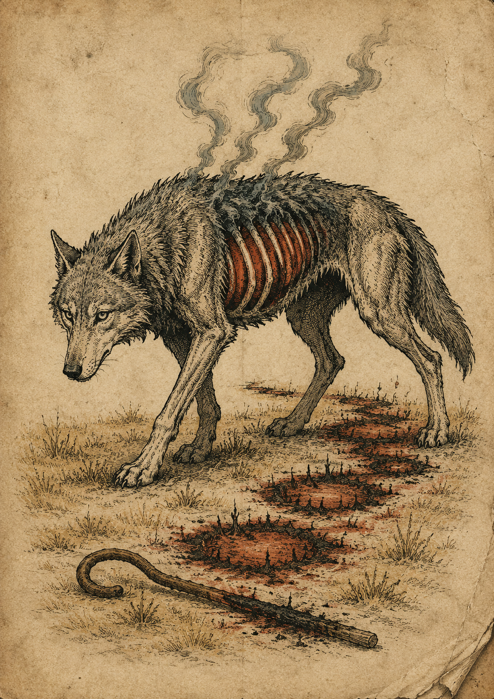 | 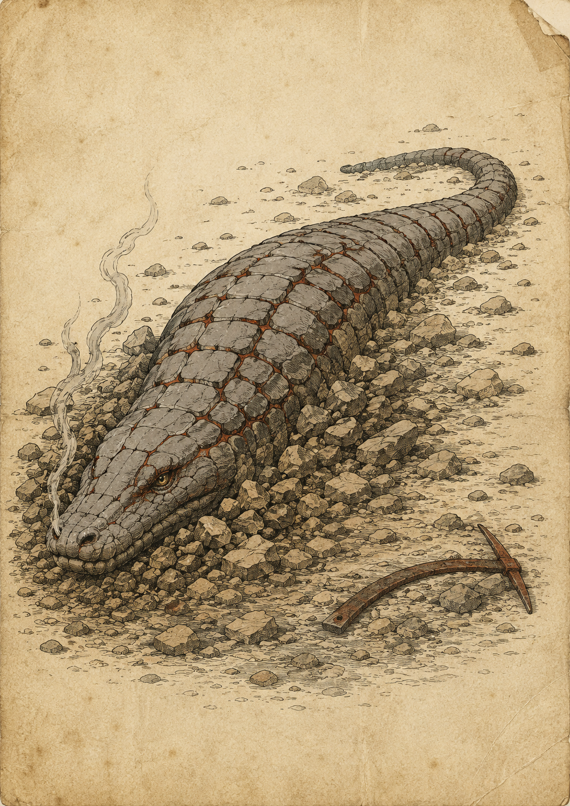 | 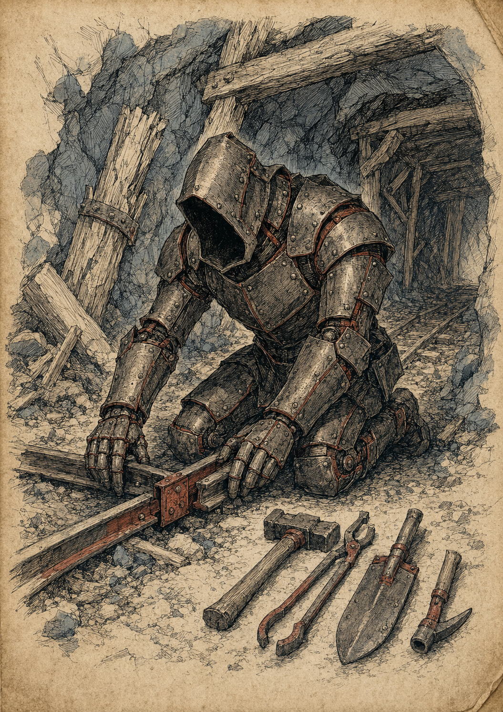 | 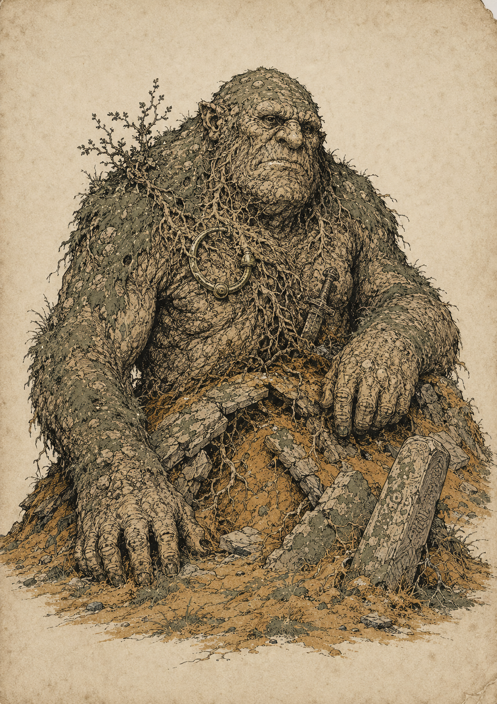 |
| Cinder Wolf (MON-01) | Ash Drake (MON-02) | Forge Wight (MON-03) | Barrow Troll (MON-04) |
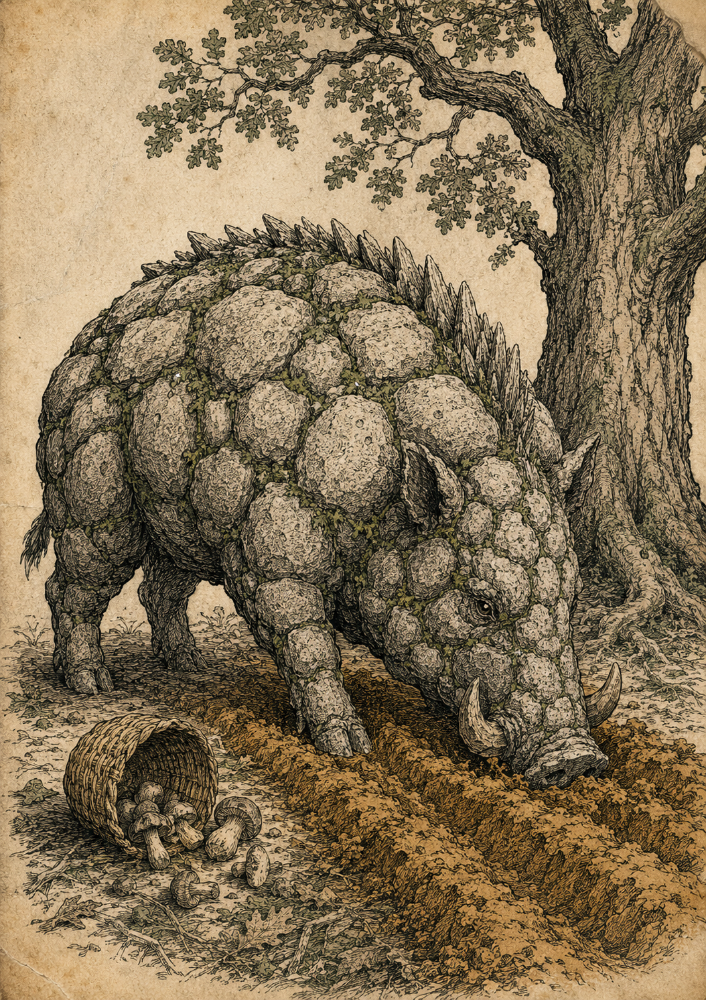 |  |  |  |
| Stone Boar (MON-05) | Gravel Wyrm (MON-06) | Mire Strangler (MON-07) | Reef Serpent (MON-08) |
 |  |  |  |
| The Deepwater Maw (MON-09) | Rime Harpy (MON-10) | Dust Devil (MON-11) | Storm Roc (MON-12) |
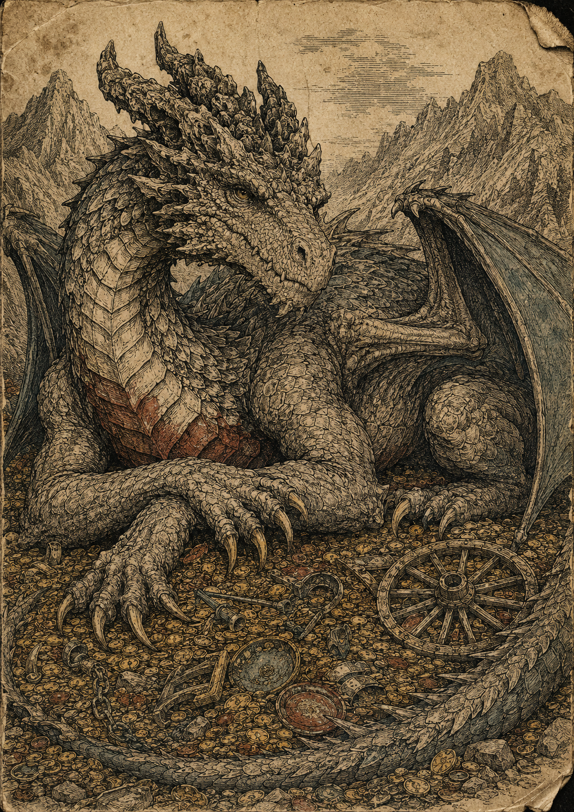 | |||
| Vhalrik, the Cinder-Crowned (MON-13) | The Hoarwyrm (MON-14) |
An unresolved monster stays on its hex as a figure and attacks whoever ends a leg there. The wild accumulates.
Running away
A party may run only if its pace is GREATER than the monster's. Equal is not greater: a thing that matches you stays with you, and there is no roll to make it otherwise. A party that cannot outpace what it has met may not decline the fight — the option is not offered. It may still befriend it, or offer it something, or die.
Fleeing used to be free. Withdraw the way you came, lose the discovery roll, done — and the cost of that was the whole bestiary. Every monster was optional, which made most of them decorative: a card turned over, a shrug, a leg ended one hex short. A deck of fourteen creatures nobody ever had to fight is a deck of fourteen illustrations.
So the P box went on every card, and the comparison is a footrace:
| Your leg | Pace | Gets away from |
|---|---|---|
| On foot, mountain or marsh | 1 | Nothing at all — a mire strangler is pace 1, and equal is not greater |
| On foot, forest, hills, tundra or desert | 2 | The mire strangler |
| On foot, grassland | 4 | Everything up to the barrow troll — but not the stone boar at 4 |
| On foot, on a road | 5 | Up to the maw and the hoarwyrm; the reef serpent matches you |
| Mounted, grassland | 6 | Up to Vhalrik and the reef serpent; the wolf and the drake match you, and the harpy, the dust devil and the roc are faster |
| Mounted, on a road | 8 | Everything except the storm roc — which nothing in the game outruns |
Read down that column and the design falls out of it. On foot in grassland — the best ground a walking party gets — you outrun the barrow troll and nothing else that lives there. On foot in the mountains you outrun nothing whatsoever, and the mountains hold seven of the fourteen. The three fastest creatures in the deck are all air monsters, and two of them keep to the high passes and the tundra, which is precisely where nobody keeps a horse. And the storm roc is pace 8, the fastest leg anybody can make is 8, and equal is not greater — so the roc is the one creature in this game nobody has ever walked away from.
This is the change that puts a road, a horse and a night's sleep into the same decision as a sword, and each of the three gets there by a different door.
The road and the horse are the obvious two: they are pace, directly, and they were already being bought for the toll and the haulage. A mounted party on a road outruns thirteen of the fourteen and can be a coward all day; a party on foot in the mountains has bought nothing but the fight it is standing in. The infrastructure the economy game was building for money now decides whether the adventure layer is survivable, which is exactly the join this whole layer is supposed to have.
The night gets there by the back. Pushing on into a night leg is the standing temptation of the travel rules — one more round of distance, for the price of a lantern — and what it actually costs is now legible in one number: a night leg under a lantern is half your day pace, rounded up. So the party that refuses to make camp halves the only figure that lets it decline a fight, and does it on the one leg that rolls a second discovery with the monster band widened by 1. Push on and you are slower, in the dark, rolling more often, on a worse table. Sleep, and every one of those goes the other way. That is the sentence the flee rule was missing: a night's camp used to be about health and strength, and now it is about whether you get to leave.
And it means plate harness costs you something real: −1 pace as well as +3 armour. The best armour in the game is also the reason you have to use it.
One exception, and it is aimed at exactly the situation it sounds like: monsters of strength 4 or more get one free round of the battle roll against a fleeing cargo vehicle, whatever its pace. A loaded wagon does not sprint, and a big enough thing gets its one swing at it as it goes. Full rules in rules.json → conflict.flee.
Mana, talismans and spells
Slaying a monster yields mana, element-matched — and how much is a die, not a price. The Y box on the card is the most the corpse can give up; what you actually take is the lesser of that number and one roll of the purple mana die (arcana.json → manaDie), rolled once at the moment it reaches 0 health and split among whoever fought.
It was a payment until it was a ceiling, and the reason for the change is Vhalrik. Six mana, every time, known in advance: the largest fight on the map was an errand with a price sticker on it, and no decision in it survived the moment you did the arithmetic. Now the small kill is wages and the great kill is a gamble. A cinder wolf yields 1, so any roll but a 1 is still 1 and the trickle at the bottom of the deck is untouched; Vhalrik yields 6, so the die is the whole story and half the time you leave four of it lying on the mountain. The purple die is the fifth and last die in the box — blue is what you want, red is what stands in your way, green is the weather on a market, ochre is what the season takes back, and bruise is what a dead monster gives up. Five inks, five dice, no sixth.
Mana is not a commodity: no bulk, no stockpile, no crate. It must be held — and almost nobody can hold it in the body. Elves carry up to 3 innately; humans, dwarves, halflings and orcs carry none at all. Everyone else's mana lives in a talisman (items.json, class talisman): a bone charm holds 2, a copper amulet 4, a crystal phylactery 10. Talismans are items — made, bought from merchants, sold, and stolen with everything that implies. The card prints the capacity in the M box of its summary strip; the charge is walked on the player board's M track, like every other number that moves.
All six talisman studies are accepted — the only deck that gets the violet, and the violet is a printing error, exactly as docs/art/prompts/talismans.md demands:
 |  |  |
| Bone Charm (TAL-01) — holds 2 | Weaver's Knot (TAL-02) — holds 3 | Copper Amulet (TAL-03) — holds 4 |
 |  |  |
| Gold Locket (TAL-04) — holds 6 | Gemfire Pendant (TAL-05) — holds 8 | Crystal Phylactery (TAL-06) — holds 10 |
Mana is spent on spells (arcana.json): fourteen of them, at least three per element, running from a 1-mana Kindle to a 5-mana Stormcall. Like the potions, every one buys the things the game actually cares about — hours, movement, safety, repair, information — and none of them break the economy. Casting is one spell per character per round, and only characters cast.
Mana crystals (the commodity) are frozen mana: shatter one for 2 mana of any element, but mana never freezes back.
Merchants, inns and hired muscle
Merchants are met on the road (a discovery result) or visited in any settlement. Either way: shuffle the item deck and deal cards face up per rules.json → market.merchantStock — 2 for a roadside pedlar, 3 in a village, 5 in a town, 7 in a city, 9 at the Seat. That is the stock, this visit, at base value +10%. A bigger place is genuinely a better place to shop, and a roadside merchant with exactly the lantern you need is a small story the dice wrote.
Inns do four jobs, and every printed settlement has one:
- Rest — 2 health per round (3 with a healer in town), 5 coin, free at home.
- Hirelings — a thug (20/journey), a militiaman (35) or a hired blade (60) escorts one journey or one cargo. They eat nothing; the fee is everything. A thug will not face a monster of strength 4+.
- Rumours — pay 5 coin, draw a quest card, accept or decline.
- Drinks — the old job: serve ale to clear unrest, per the recipe.
Illness and healers
Illness arrived in the event deck: Camp Fever hits a travelling party, Marsh Ague hits a region, The Grey Pox hits every town of four or more workers, and the old Plague still stalks regions. The counters, in order of cost: a Healing Draught or Physic Tonic spent (potions), a healer specialist trained at the infirmary (a town with a fed healer loses no worker to any illness card), and Doctor Marrow or Tilly Goodbarrel in the character deck, who each ignore parts of it outright.
The pattern matches the rest of the deck: every illness card has a mitigation you could have bought in advance, and the infirmary is the building whose absence you get to regret by name.
Quests and campaigns
The quest deck (quests.json) is the choose-your-own layer: cards that arrive through discovery omens or inn rumours, are read aloud, and are accepted or declined on the spot. Declined cards go to the bottom for someone else.
They run a deliberate range of complexity, 1 to 5: from deliver 3 grain to Grist (an errand with a wage) through slay the thing behind Umber Hollow's missing-persons ledger, up to two staged campaigns — the Ironspine Road, which ends with cheap rail through the pass for whoever proved it, and the Drowned Bell of Taleowick, which ends with the Deepwater Maw. Campaign stages complete in order and pay per stage.
This is the part of the game designed to grow fattest over time. New quests are new cards; a new map brings its own; nothing else has to change.
Vehicles and characters
Two more decks give the moving pieces names:
Vehicles (vehicles.json) — twelve named machines, three each of train, ship, caravan and horse. A card is a specific vehicle with a story and a quirk: the Reach Flyer is fast and takes passengers, Old Smoke is cheap and limps, the Fenway Wagons cross marsh that stops everything else on wheels. Each card prints two boxes in its summary strip — H for the hull, C for the bulk of its hold. A vehicle in play is dealt a player board of its own and run like a player who is not a person: its card in the recess, its cargo and modifications in the four kit slots, and its hull on that board's health track. At nothing it is wrecked — it spills its cargo on the hex, and salvage is whoever reaches it first.
Eleven of the twelve catalogue plates are accepted (docs/art/prompts/vehicles.md); the Varl Wagonrow (VEH-09) is still to be drawn:
 |  |  |
| The Reach Flyer (VEH-01) | Steppe Hauler (VEH-02) | Old Smoke (VEH-03) |
 |  |  |
| Gullwing (VEH-04) | Saltreach Pride (VEH-05) | Ember Coast Trader (VEH-06) |
 |  |  |
| The Dunhaven Column (VEH-07) | The Fenway Wagons (VEH-08) | Bay Courser (VEH-10) |
 |  | |
| Steppe Pony (VEH-11) | Black Malchior (VEH-12) |
Characters (characters.json) — eight named adventurers; each player's hero figure takes one at setup for a face and a summary strip across the top of the card, which is every number they have, printed once:
| H | S | M | ¤ | KG |
|---|---|---|---|---|
| health | strength | mana held in the body | coin at setup | what they can shoulder |
Those are the player board's own track letters, so setting up is reading across the strip and putting tokens down left to right. Nothing on the card moves — there is no bar on any card any more — and the portrait gets the full width of the card because there is nothing beside it.
The strip lost a box. There was a D between S and M and there is not any more, because defence went with the to-hit roll it existed to shift. What a character brings to a battle besides their strength is the gear in their four kit slots, and gear is a card with its own number on it — so the thing that used to be printed on the hero is now something the hero is carrying, which is both truer and one fewer number to reprint every time the fight changes.
Strength — one arm, one number
Every item in items.json carries a mass in kilograms, and strength is the other half of that arithmetic. There is no burden number and no burden track: what a character can shoulder is strength × 3 kilograms, printed in the KG box so nobody multiplies at the table and derived so it can never disagree with the strength beside it. Ruk of the Red Road is strength 6 and carries 18 kg, the most of anyone; Old Mother Keswick is strength 2 and carries 6. A tunic is half a kilogram, a sword three-quarters, a plate harness 12.5 — which is to say plate is for figures of strength 5 and up, and always was.
Nothing is walked for it. Total what the character is wearing, wielding and stowing, and it either fits under the printed limit or it does not: load the rest onto a vehicle, hand it to someone with room, or leave it where it lies. A character carried to a settlement at 0 health loses the lot on the way.
Burden and strength were the same arm doing the same job under two numbers, and one of them was a track a player moved every time they picked up a rope.
Mass is not bulk. Bulk is a commodity's storage-slot and shipping cost and belongs to the cart; mass is what a thing weighs and belongs to whoever is holding it. They never convert into each other, and nothing in the data has both. Full rules in rules.json → carrying; the whole item table with masses is in the annex.
Armour — the only thing between you and the blow
A battle is one opposed total: your strength plus your gear plus two blue dice against its strength plus its armour plus two red, and the lower total loses health equal to the difference. Armour is a number you add to your own side of that, once per piece worn, and it is the whole of what stands between a figure and a wound. A worn suit runs 1 to 3; a figure wearing body, head and off-hand can reach 5; monsters run 0 to 3 and print theirs in the A box.
This section used to be called Defence — what makes a blow miss, and there used to be two numbers in it. Defence stopped a hit landing; armour cancelled it once it had; a figure in plate had both. That was an honest distinction while there was a to-hit roll to distinguish — one number moved the target, the other ate the result — and it is the reason every character and every monster in this game carried two defensive ratings for as long as they did.
There is no to-hit roll. And with nothing to hit, a number that makes you harder to hit and a number that soaks the hit are arithmetically the same number — both are an amount by which the other side's dice fail to hurt you, and the only difference left was which side of the roll you subtracted it on. So defence was deleted and armour absorbed it: a monster's defence was halved and reprinted as its A, a character's went off the summary strip entirely, and peoples stopped having a defence.base because armour is a thing you buy rather than a thing you are born with. A stone boar barely swings and still turns a sword — strength 2, armour 2 — and it says that in two numbers meaning two things, where the old pair said it in two numbers meaning one.
What that cost is a shade of character: a duellist and a knight are the same column now. What it bought is the whole of the deletion — one field, one direction, one place to look — and the agility went somewhere it does more work, which is pace, and whether you are in the fight at all.
Armour wears. One wear point per round of battle on every piece worn, both sides, win or lose, because a blow you turned still dented the plate.
Wear — everything a figure carries is running out
Tools wore out and nothing else did. A sword was immortal, a suit of plate never dented, a rope never frayed and a lantern burned forever — so the only equipment decision anybody made twice in a whole game was which axe to buy. Everything a figure carries wears now, on one scale, in one unit, at one wear point a use:
| The thing | What counts as a use |
|---|---|
| A tool | Each job it is used in — not each hour |
| A weapon, shield, helm or suit | Each round of a battle it is swung or worn in |
| A light | Each night leg it is burned on |
| Anything else | What its own card says: a rope that takes a party down a cliff, a bag stuffed past its seams |
The maximum is printed once, in the W box of the card's summary strip, and it is walked on the board — four narrow W ladders, one against each kit recess, so a player tracks the wear of the four things they are actually carrying and nothing else. At 0 the thing is finished: the card is discarded, the ladder is cleared, and whatever it was doing for its owner it stops doing at once. A sword that goes at 0 mid-battle leaves you swinging with nothing for the rest of it, and a tool that breaks does not refund the job it broke on. A blacksmith mends three rungs a round at four coin a rung; what cannot be mended is a thing at 0, which is not damaged, it is gone.
The numbers came down to meet the board, not the other way round. Wear used to run to thirty-four and be counted on the tool itself, because there was no track for it and the note beside the strip said there never would be — it runs past twenty, the board stops at fourteen. Now there is a track, so the scale is the board's. Tools that ran 14 to 34 run 6 to 14: the alembic is the frailest at 6 and a large loom the longest-lived thing anybody owns at 14, which is the ceiling exactly. What a figure carries on its back sits under that — a torch is 1 and gone in a night, a plate harness 12 — and all of it walks the same 0–14 ladder as everything else in the game.
Nothing got shorter, because the clock changed with the scale. An axe had 24 wear at one point per labour hour, which is eight three-hour jobs. It has 10 at one point per job, which is ten. The axe lasts slightly longer than it did and nobody adds hours up at the table any more. That is the identical trade the kilogram made when a hero could not stand their own load on a fourteen-rung ladder, and it is the right way round: the ceiling belongs to the game, and a number that will not fit under it is a number that is wrong.
Three things never wear. Potions are drunk rather than worn out, so the card is discarded on use and there is no W box on it. Talismans do not, because mana is not friction — a phylactery filled and emptied a hundred times is a phylactery. And commodities do not, because they are counted rather than owned.
Eating and sleeping
Two kinds of hurt, mended two different ways, and the split is what makes a night's camp a decision rather than a formality:
- A round that ends with a figure unfed costs 1 health. Every round it goes on. Being fed again does not put it back.
- A night without a camp costs 1 strength — travel a night leg, or push on past dark, and every figure in the party loses a point. Two hard nights turn a caravan guard into a passenger.
- One night's sleep restores strength in full, wherever it is taken: a camp on open ground does it as well as a bed at an inn.
- Sleeping mends no health at all. Health comes back only under medical aid — a healer, an infirmary, a physician standing there, or a potion.
That is why a lantern, a granary, an inn, a stretch of salted meat and Doctor Elspeth Marrow are all worth their coin, and why the shorter leg with a camp at the end of it often beats the longer one without.
All eight character plates are accepted (docs/art/prompts/characters.md):
 |  |  |  |
| Corin Vale (CHR-01) | Berga Understone (CHR-02) | Sylvae of the Duskmere (CHR-03) | Tilly Goodbarrel (CHR-04) |
 |  |  |  |
| Ruk of the Red Road (CHR-05) | Doctor Elspeth Marrow (CHR-06) | Havik Coalbrand (CHR-07) | Old Mother Keswick (CHR-08) |
Card codes. Every card carries a deck prefix and sequence — VEH-03, MON-09, QST-07, TAL-06, CHR-01 — with a v2 suffix if a card is ever reprinted changed. The scheme is defined in vehicles.json → cardIdScheme. The code is print identity, not data identity: the id field is the identity, and anyone forking the game is free to renumber.
Card fronts. tools/build-cards.mjs renders the fronts for these four decks — characters, vehicles, monsters and talismans — from data/*.json and the accepted plates, into docs/cards/, to the two-plate layer contract. Only a card whose plate has been accepted is rendered; edit the data or the renders, re-run the tool, and never the SVGs.
Each deck's portrait window is the shape of that deck's plates, as tall as its wordiest card leaves room for, and what fills it is a crop taken around the plate's subject from docs/art/framing.json — a card shows a character's face and hands, not the middle of the page they were drawn on. The explorer's deck thumbnails crop through the same code.
Printing them. docs/cards/print.html collates any selection of these cards onto A4 or US Letter at a true 63 × 88 mm — nine to a sheet of A4 — each with a dotted line on its trim to cut along and its 3 mm of bleed held outside that line. A cut card is the size of a standard playing card, which is the point: it glues onto one and shuffles with the rest of the deck. The picker opens with everything on and has its own deselect all, because the page is used far more often for a handful of cards than for the whole set.
And their backs. Ask for backs and each front sheet is followed by — or, if your printer wants the stack fed through in one go, joined at the end by — a sheet of the deck backs for exactly the cards on it, in exactly their slots, with every row read backwards. That reversal is the whole rule: paper is turned over left to right to take its second side, so the card at the left of a front row wants its back at the right of the sheet that lands on it. A back has nothing behind it, so a card picked out of Card backs leaves its slot empty rather than closing the row up and sliding every card after it off its front.
Mini-maps
Some moments need more board than a single hex: a battle, a boarding action, a farm becoming a village becoming a walled town. These resolve on mini-maps — A4 landscape sheets, each dominated by one large hexagon subdivided into small hexes, representing the inside of a single cell of the campaign map.
Three series, specified in docs/minimaps/:
- Holdings — four blank settlement sheets, one per player, kept in front of you for as long as your farm, village or town stands on the big map.
- Grounds — one battle sheet per land terrain plus the shallows, pulled out when an encounter needs positioning and put away when it is done.
- Places — one sheet per named settlement on the Korvane Reach, used when play goes inside Vossgard or Dunhaven or Fen's End.
The side panels either side of the hexagon are working space: the left panel is the encounter tracker (initiative, round, morale), the right panel is the holdings ledger (buildings, garrison, stores). A battle sheet uses the left; a settlement sheet mostly the right; both are printed on every sheet so no sheet is ever the wrong sheet.
All thirty-two sheet artworks are accepted and live in docs/minimaps/img/ — one of each series:
 |  |  |
| Holdings: The River Meadow (PSM-01) | Grounds: marsh (TBM-05) | Places: Vossgard (SET-01) |
The player board
The adventure layer arrived one card at a time — a health bar here, a burden bar there, a mana bar inboard of that one — and every bar was on an edge, which is the right place for a card you are holding and the wrong place for one lying on the table. The player board is where they all ended up, and taking them off the cards is what gave the portraits the full width of the card.
One A4 landscape sheet each and every one identical, printed at docs/boards/. The card in play drops into a recess top left, four more recesses take whatever that card has in play, the round's phases print underneath, four numbered tracks run up the middle, and a narrow wear ladder stands against each of the four kit recesses:
| Track | A rung is | Runs | Walked by | |
|---|---|---|---|---|
| H | Health | 1 | 0–14 | The figure, hurt and mended — medical aid only |
| S | Strength | 1 | 0–14 | Set from the card; a rung down for every night without a camp |
| P | Pace | 1 hex | 0–14 | Hexes left in this leg — and what you must beat to run from a monster |
| M | Mana | 1 | 0–14 | The body and every talisman in a slot |
| W ×4 | Wear | 1 | 0–14 | One ladder per kit slot, set from the card's W box, down a rung a use |
The ladders are numbered from the bottom and walked by a token, and they are numbered and nothing else — no rung glyph, no plus, no minus. A little mark saying which kind of number this is was competing with the figure for the same three millimetres. Which way a token walks is a sentence in the rulebook, where there is room to say it.
The board traded a column for four ladders and came out wider. The D column went out of the middle the same day wear arrived at the edge, so what used to be five columns at a shade over 13.6 mm is four at 15.6 — the tracks a player reads every round are now noticeably easier to read than they were before anything was added. Margins came down from 8 mm to 6 and gutters from 6 to 4 to pay for the rest of it.
Wear is drawn at the edge rather than up the middle because it is the first number on this board that belongs to a card rather than to whoever is sitting behind it. A single W column could only ever have counted one thing's wear, and a figure carries four — so it is drawn where the thing it counts is lying, in a ladder against the recess, walked by a 4.5 mm pip rather than the 7 mm bar the main tracks use. That is what makes fifteen rungs fit down the side of an 88 mm card. And a fifth thing in play is a fifth thing whose wear nobody is counting, which is the argument the four kit slots were already making.
Pace is the board's own, and it is the one that was missing. A party looks its day-leg speed up in travel.json every single round of the game and has never had anywhere to keep it: set the token at the start of a leg, walk it down a rung per hex entered, halve it for a night leg under a lantern. At zero the leg is over, and the discovery roll happens wherever it stopped. It is pace rather than speed because strength has the S.
It is also, now, the number the other side of the table is measured against. Every monster card prints a P, and a party may run only if its own pace is greater than that one — so the token a player has been walking down all leg for bookkeeping reasons turns out, the moment something steps out of the trees, to be the number that says whether they are allowed to leave.
A vehicle gets a board too. It used to get a column — a sixth track called V, counting damage on a wagon most players were not running, printed on everybody's sheet. A vehicle in play is dealt one of these boards instead and run like a player who is not a person, exactly as a monster met on the road is: its card in the recess, its cargo and its modifications in the four kit slots, and its hull on the health track, set from the printed H, down as it is damaged, up as it is repaired at 5 coin a rung in any town, wrecked at nothing and spilling its cargo on the hex. A hull is a body, and the board never had to learn anything new to run one.
Strength and pace are the pair that changed the game rather than recording it. Strength was already printed on every monster card as a threat rating; it is now the base of your whole side of a battle, it swallowed burden on the way past — what a figure carries is strength × 3 kilograms and there is no second track for it — and it is still the threshold rules read off a monster card, where a thug refuses anything of strength 4 or more. One arm, one number, three jobs, and a hard night takes a rung off all three at once.
Pace is the newer half, and it is the one that turned a track into a decision. Made a footrace, it stopped being a record of the leg and became the price of declining a fight — which is why a road and a horse are now weapons, why plate harness charges you a point of it, and why the column that used to be pure bookkeeping is the one a party now argues over.
Defence used to be the other half of this heading, and it is worth saying what it was doing: it shifted a to-hit roll by less your own strength, plus their defence, so an even fight hit on 4+ and a point of advantage was worth exactly one pip. It went when the to-hit roll went, and what replaced it is armour, which was already in the game doing the other half of the same job. The full rule is in 08-components.md.
Every track runs 0 to 14, and so does the game. That is the ceiling on everything a token walks — health (a hull included), strength, pace, mana and the four wear ladders — and tools/validate-data.mjs sweeps the whole dataset against it, so a fifteenth point of health fails the build rather than walking off a board somebody has already printed. It is why tool wear was rescaled from 34 down to 14 rather than the board being asked to grow a longer ladder. Kilograms are the one thing exempt, because nothing walks a token for them.
Print one more board than there are players. The spare is the encounter board: a discovery roll that turns up a monster or a stranger deals their card onto it, its tracks are set from the card's summary strip, and it is played like any other seat at the table until the encounter is over. That is what being generic is for — the furniture does not care whether a person or a wolf is sitting behind it.
The board is otherwise furniture, not a fifth deck. What it fixes is that a hero in play was four tokens on three cards and a number somebody was holding in their head.
What this layer deliberately does not do
No experience points, no levels, no skill trees. A character gets better the way a town does: by owning better things and standing nearer the railway. The economy remains the progression system — the adventure layer is a new set of ways to spend hours and a new set of things the hours can buy.
14 — Annex: the reference tables
Generated by
tools/build-annex.mjs— do not edit by hand. Edit the data indata/*.json, run the tool, and commit both. Every number here is the same number the explorer and the simulator read.
The web of things
Before the tables, the shape of them: every thing in the game and every arrow between them, computed from the same cross-file references tools/validate-data.mjs checks — so this picture cannot know a tie the validator does not enforce. An arrow points from the thing whose data names the other, at the thing it names: a job points at the ore it takes in, the iron it puts out and the smelter it runs in alike. The explorer’s Graph tab is this same drawing, live — pan it, drag it, click any dot for its entry.

The flows of work
The web above, taken apart: one diagram per place of work, with everything unrelated removed. Read each row left to right — what goes in on the left, with a note under each thing saying where it comes from; the job in the middle with its hours, its tool and who works it; what comes out on the right. To get what you want, find the thing on the right of some row and walk left, diagram to diagram, until every input is something you can gather. The explorer’s Flows tab is these same diagrams, live, with every box clickable.
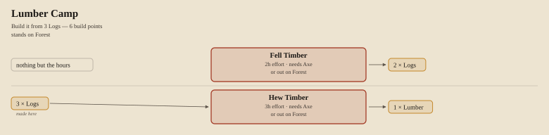
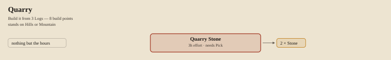
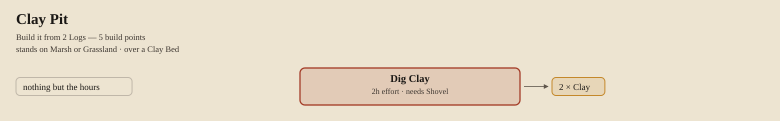
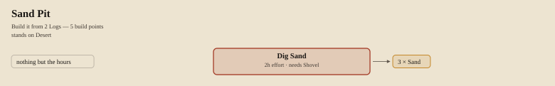
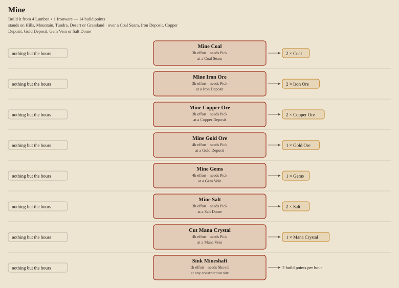
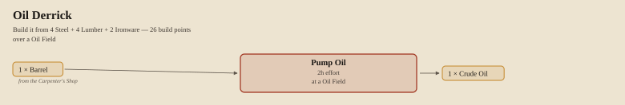
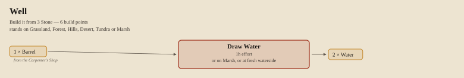
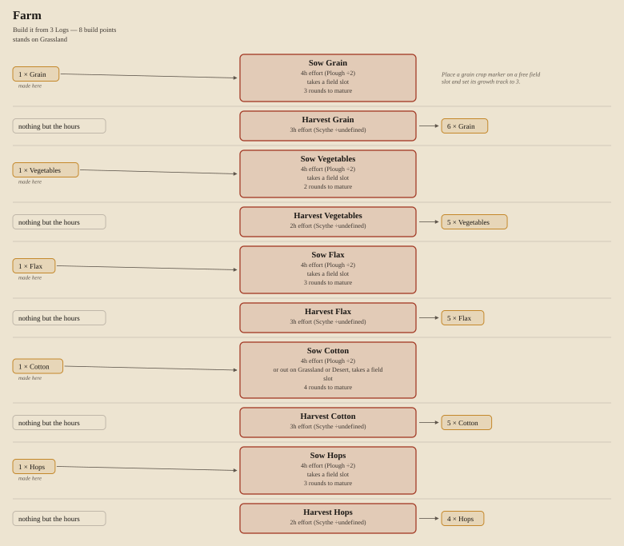
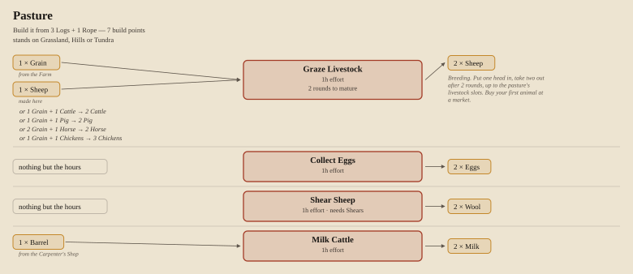
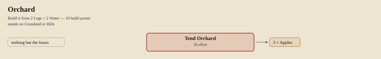
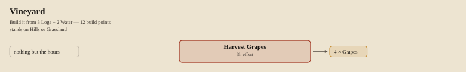
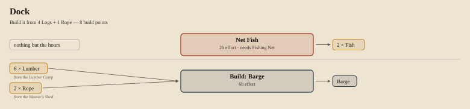
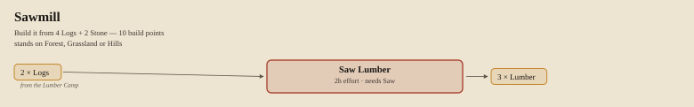
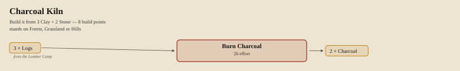
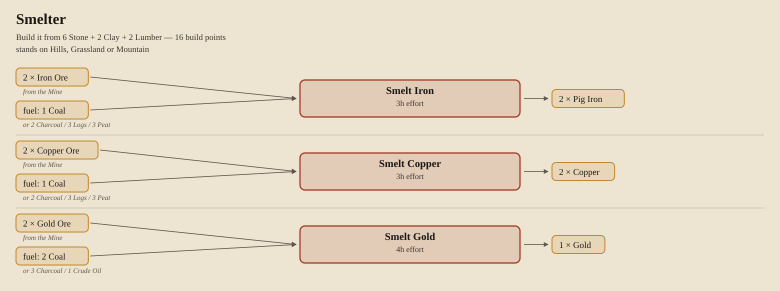
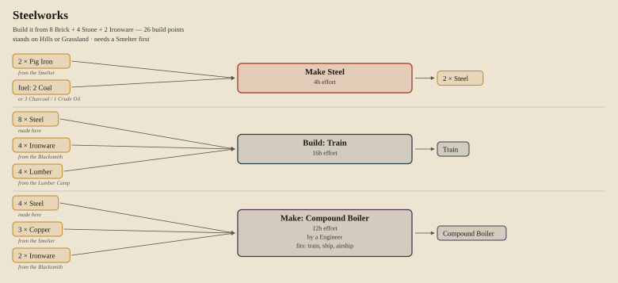
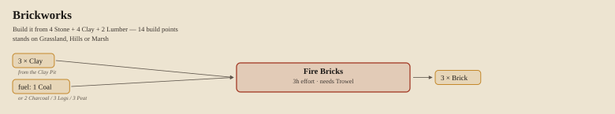
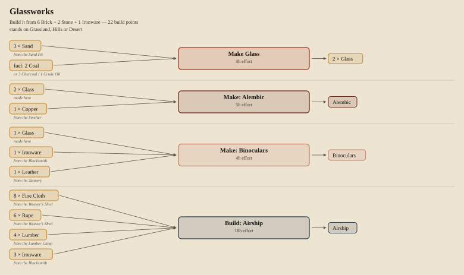
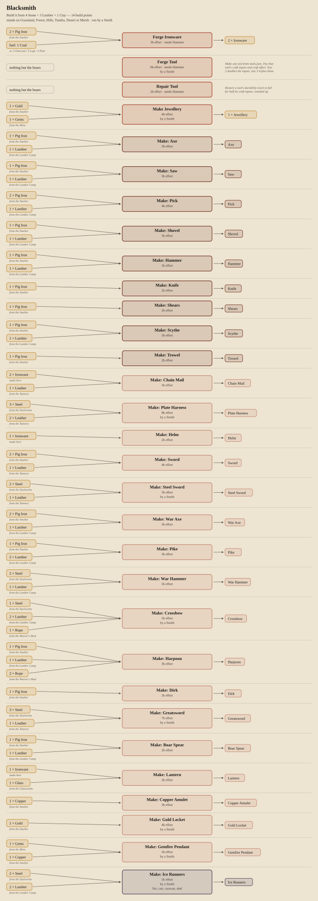
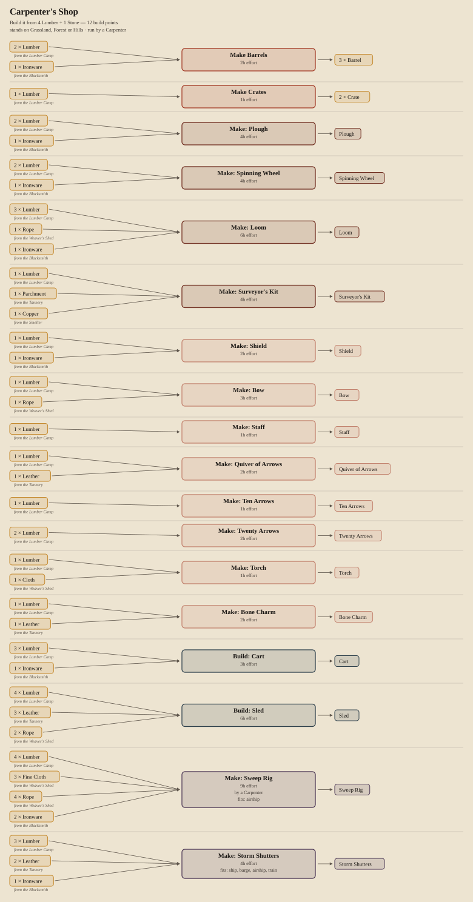
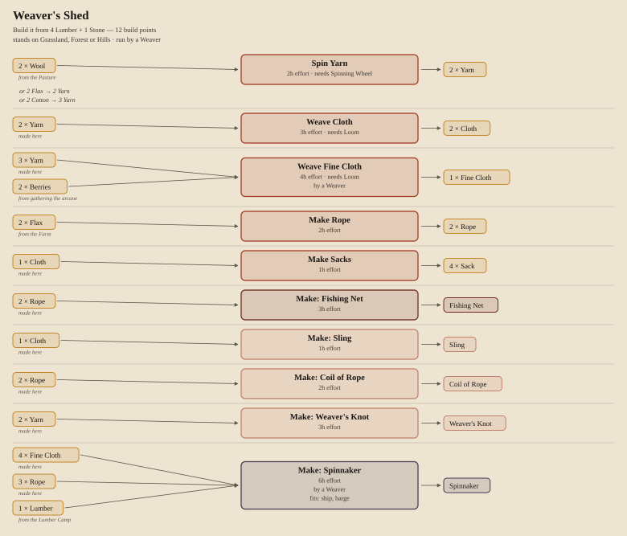
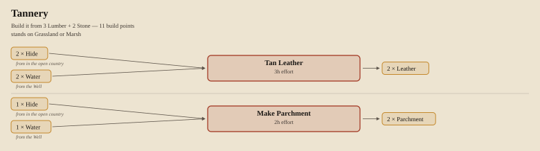
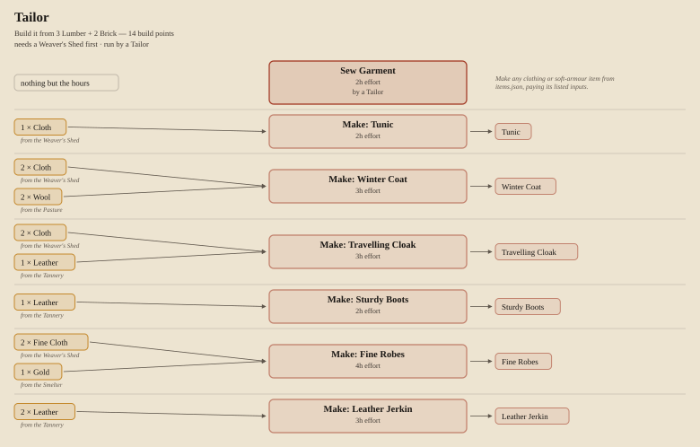
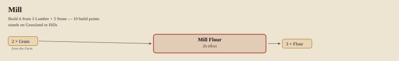
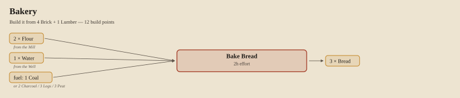
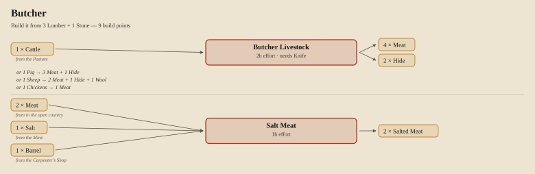
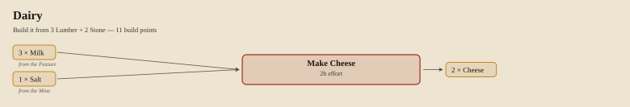
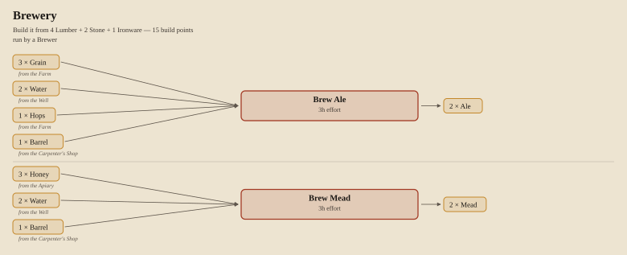
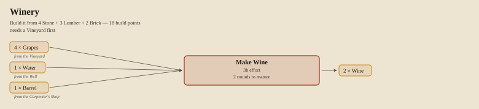
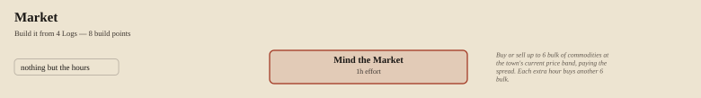
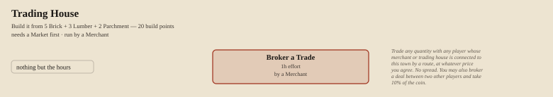
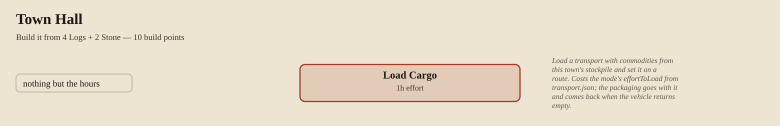
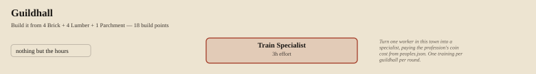
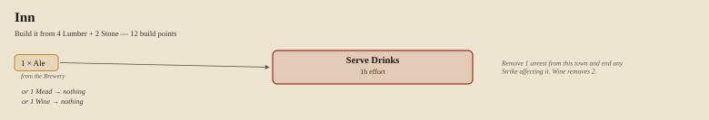
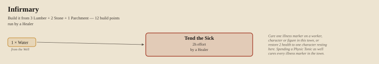
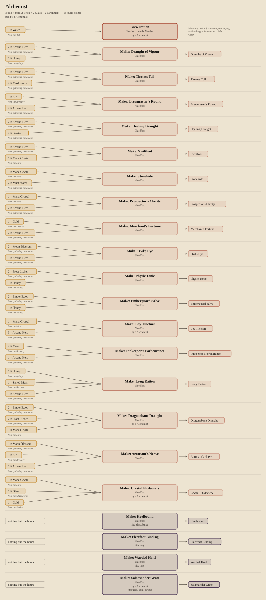
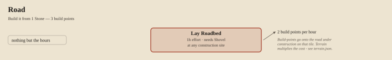
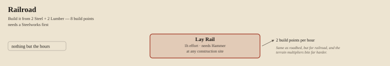
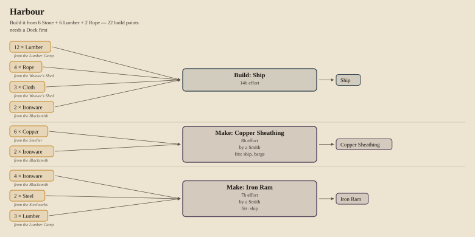
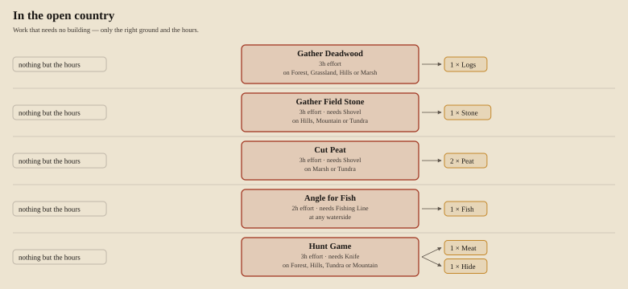
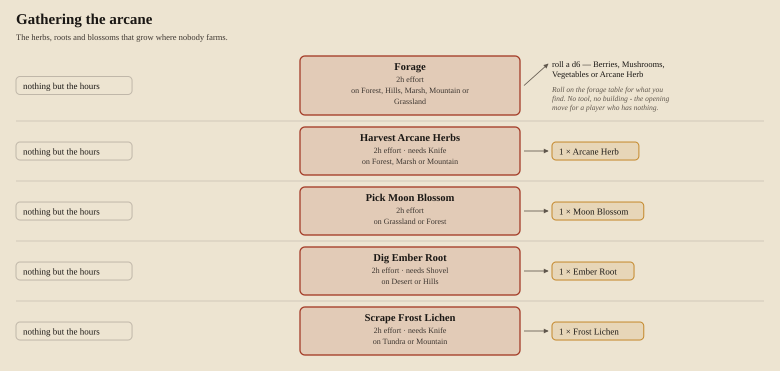
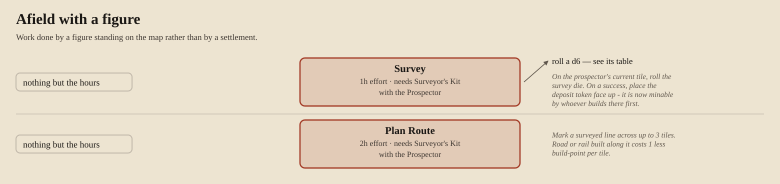
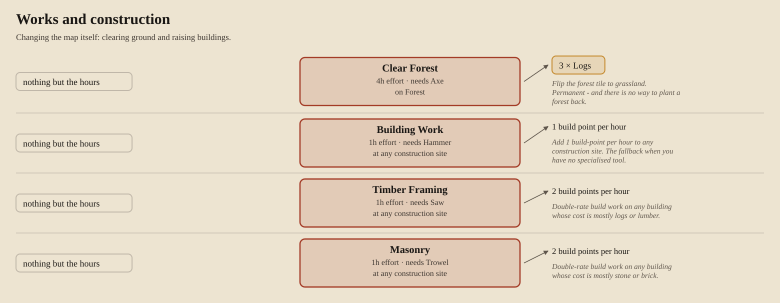
Terrain
The letter code is printed in the bottom corner of every hex on every map. It is the ruling when the artwork straddles a grid line, and it keys the travel and discovery tables below.
| Code | Terrain | Move | Road × | Rail × | Features | Deposits |
|---|---|---|---|---|---|---|
| G | Grassland | 1 | 1 | 1 | trees-sparse | clay-bed, coal-seam, iron-deposit, salt-dome, oil-field, gold-deposit |
| F | Forest | 2 | 2 | 2 | trees-dense, game, herbs | clay-bed, iron-deposit, mana-vein |
| H | Hills | 2 | 2 | 3 | stone, game, caves | coal-seam, iron-deposit, copper-deposit, gold-deposit, gem-vein, mana-vein |
| M | Mountain | 4 | 4 | 6 | stone, herbs, caves | coal-seam, iron-deposit, copper-deposit, gold-deposit, gem-vein, mana-vein |
| B | Marsh | 3 | 3 | 4 | reeds, herbs, fresh-water | clay-bed, peat-bog, oil-field |
| T | Tundra | 2 | 2 | 2 | game | coal-seam, iron-deposit, oil-field, peat-bog |
| D | Desert | 2 | 2 | 2 | sand, salt | salt-dome, oil-field, gem-vein |
| R | River | boat | — | — | fish, fresh-water, reeds | — |
| L | Lake | boat | — | — | fish, fresh-water, reeds | — |
| S | Shallow Water | boat | — | — | fish | — |
| O | Deep Water | boat | — | — | fish | — |
Travel speeds — hexes per day leg
| Mode | G | F | H | M | B | T | D | R | L | S | O |
|---|---|---|---|---|---|---|---|---|---|---|---|
| On Foot | 4 | 2 | 2 | 1 | 1 | 2 | 2 | — | — | — | — |
| Mounted | 6 | 2 | 3 | 1 | 1 | 3 | 3 | — | — | — | — |
| Cart | 3 | 1 | 1 | — | — | 1 | 2 | — | — | — | — |
| Caravan | 2 | 1 | 1 | — | — | 1 | 2 | — | — | — | — |
| Barge | — | — | — | — | — | — | — | 3 | 3 | 3 | — |
| Ship | — | — | — | — | — | — | — | — | — | 3 | 5 |
| Sled | 1 | 1 | 2 | 2 | 2 | 5 | — | 2 | 2 | 2 | — |
| Airship | 5 | 5 | 5 | 4 | 5 | 5 | 5 | 5 | 5 | 5 | 5 |
Overrides: On a Road — on-foot 5, mounted 8, cart 6, caravan 4; On Rail — train 6.
Night legs
| Light | Night speed |
|---|---|
| None | No travel at all, even on a road |
| Torch | 1 hex (2 on a road); spends one use |
| Lantern | Half day speed, rounded up |
| Owl’s Eye potion | As a lantern, for one round |
A night leg triggers a second discovery roll with the monster band widened by 1. Trains run at night at full speed with a lantern fitted; ships sail at half speed with one rigged. Caves can only be entered with a lit torch or lantern.
Discovery tables — d20, roll where the leg ends
One roll per movement leg, on the table for the hex you stopped in. A road or rail on the hex overrides its terrain. Persistent results are marked on the hex with a tile or figure.
| Table | Bands |
|---|---|
| Grassland (G) | 1 bandits · 2-4 traveller · 5-14 nothing · 15-16 commodity-trace · 17-19 monster · 20 quest-omen |
| Forest (F) | 1 bandits · 2-3 traveller · 4-11 nothing · 12-14 commodity-trace · 15-19 monster · 20 quest-omen |
| Hills (H) | 1 bandits · 2-3 traveller · 4-10 nothing · 11-13 commodity-trace · 14-15 cave-mouth · 16-19 monster · 20 quest-omen |
| Mountain (M) | 1 hazard · 2 traveller · 3-8 nothing · 9-11 commodity-trace · 12-14 cave-mouth · 15-19 monster · 20 quest-omen |
| Marsh (B) | 1 hazard · 2 traveller · 3-10 nothing · 11-12 commodity-trace · 13-19 monster · 20 quest-omen |
| Tundra (T) | 1-2 hazard · 3 traveller · 4-11 nothing · 12-13 commodity-trace · 14-19 monster · 20 quest-omen |
| Desert (D) | 1-2 hazard · 3 traveller · 4-9 nothing · 10-11 commodity-trace · 12-19 monster · 20 quest-omen |
| River (R) | 1-2 hazard · 3-5 traveller · 6-13 nothing · 14 flotsam · 15-16 merchant · 17-19 monster · 20 quest-omen |
| Lake (L) | 1 hazard · 2-3 traveller · 4-13 nothing · 14-15 flotsam · 16-19 monster · 20 quest-omen |
| Shallow Water (S) | 1 hazard · 2-3 flotsam · 4-13 nothing · 14-15 pirates · 16-19 monster · 20 quest-omen |
| Deep Water (O) | 1-2 hazard · 3 flotsam · 4-12 nothing · 13-15 pirates · 16-19 monster · 20 quest-omen |
| On a Road | 1-2 bandits · 3-7 merchant · 8-10 traveller · 11-17 nothing · 18-19 monster · 20 quest-omen |
| On the Rail | 1-2 bandits · 3-5 merchant · 6-7 traveller · 8-17 nothing · 18-19 monster · 20 quest-omen |
| Inside a Cave | 1-2 hazard · 3-8 nothing · 9-12 commodity-trace · 13-16 monster · 17-19 hoard · 20 quest-omen |
Monster element weights by table:
| Table | Fire | Earth | Water | Air |
|---|---|---|---|---|
| Grassland (G) | 1 | 2 | 1 | 2 |
| Forest (F) | 1 | 3 | 1 | 1 |
| Hills (H) | 2 | 3 | 0 | 1 |
| Mountain (M) | 2 | 2 | 0 | 2 |
| Marsh (B) | 0 | 2 | 3 | 1 |
| Tundra (T) | 0 | 1 | 2 | 3 |
| Desert (D) | 3 | 2 | 0 | 2 |
| River (R) | 0 | 2 | 3 | 1 |
| Lake (L) | 0 | 1 | 3 | 1 |
| Shallow Water (S) | 0 | 0 | 4 | 1 |
| Deep Water (O) | 0 | 0 | 4 | 1 |
| On a Road | 1 | 2 | 1 | 1 |
| On the Rail | 1 | 2 | 0 | 1 |
| Inside a Cave | 2 | 3 | 1 | 0 |
The market
Every Market phase, one player rolls for every column on the ledger: two blue dice for demand, two red for supply, one green for volatility, and then whatever the good’s own nature adds. Find the net on the swing ruler, and step the price that many places along the row of six printed for that commodity below.
Demand − Supply + Volatility + ModifierThe whole sum is addition, and the multiplication is not hiding anywhere. There is none, anywhere in the round. Not in the die, not in the modifier, not in the price - the price ladder is a printed table, not a sum. Nothing is halved and nothing is rounded, because there is nothing left in the line for a rounding to happen to — and that is what the rebuild was for. The version before this one multiplied the swing by the green die and folded the modifier in first, which is three chances to slip in a line a table works through once per traded commodity per round. They got slipped.
| Dice | Ink | Range | What it is | What it does |
|---|---|---|---|---|
| 2 d6 | blue | 2–12 | Demand | How badly the town wants the stuff this season. Two dice rather than one because a market is a crowd, and a crowd averages: 7 is an ordinary appetite and 12 is a famine year. Blue is added, always - in a market and in a fight. |
| 2 d6 | red | 2–12 | Supply | How much of it turned up. It is also the CAP on what the board will sell this round - see stockCap - so a low red roll is a shortage twice over: dear, and rationed. Red is subtracted, always. |
| 1 d6 | green | 1–6 | Volatility | How rough the season is. Read on the volatility strip printed on the market board: it adds minus two, nothing, or plus two, and that is the whole of it. |
| 1 d6 | ochre | 1–6 | Spoil | What the season takes back. Rolled at the end of every round against any perishable goods still in a player's hands, and read on the spoil strip. It never touches a price. |
Blue is what you want and red is what stands in your way — here, and in a fight. The same two colours, the same subtraction, the same direction (rules.json conflict.battle), so a player who has rolled one market has already learned how a battle is scored. That is worth more than either system’s private preference about which colour ought to mean which, and it is why the two pairs swapped when the sum did.
There are five kinds of die and one ink apiece. The one purple Mana die (arcana.json manaDie) is the fifth, and it is not a market die at all — it is what a dead monster gives up. You take the LESSER of the monster's Y box and the roll. Never more than the monster had; often less. It is named here because the palette is the interface: five inks, five kinds of die, and no sixth ink left to make a seventh out of, which is a constraint worth having rather than a shortage.
Six dice for the whole table, not six per player. One player rolls the market for every line on the ledger; every player rolls the spoil die for their own perishables.
Volatility — the green die
It was called elasticity and it multiplied — ×1, ×2, ÷2 — and neither the name nor the multiplication survived. Elasticity is a word for how much a quantity answers a price, which is not what this die was ever doing: it is a weather roll on a market, and volatility is the word for that. Three cells, two faces each, and it adds.
| Green die | Season | Adds | What it means |
|---|---|---|---|
| 1–2 | Slack | −2 | A quiet season with nobody pushing. Two off the swing, whichever way it fell. |
| 3–4 | Even | 0 | An ordinary season. The dice are the whole story. |
| 5–6 | Rough | +2 | A thin, jumpy market. Two on, and this is where the spikes come from. |
It ADDS, so it can turn a swing around: a -1 in a rough season is a +1, and a +1 in a slack one is a -1. A multiplier could never do that, and a market that is never turned over by the weather is a market with no weather in it.
The swing ruler
| Net | ≤ −9 | −8 … −5 | −4 … −2 | −1 … +1 | +2 … +4 | +5 … +8 | ≥ +9 |
|---|---|---|---|---|---|---|---|
| Places | −3 | −2 | −1 | hold | +1 | +2 | +3 |
| crash | slump | soften | hold | firm | rally | spike |
The bins were re-cut when the multiplier went, and they had to be. Two blue dice against two red is a triangular spread peaking at nothing (−10 to +10); the green die widens it by two either way; so the whole net runs −12 to +12 before any modifier, where the old multiplied one reached 26. Left where they were, the old bins on the new net would have moved three places in no round of any game ever played, because the dice could no longer reach the cell.
Cut where they are now, over all 7776 rolls of the five dice with no modifier, the market holds in 29.9% of rounds, moves one place in 45.8%, two in 22.2% and three in 2.1% — so it moves in about seven rounds in ten, two places is a genuinely one-sided market rather than a weekly event, and three only happens when the dice and the good’s own nature are pulling together. Those figures are worked out from the bins rather than claimed, and validate-data.mjs separately refuses to let the ruler have a hole in it — every value the dice and the modifiers can actually reach has to land in a cell. (2−12) at the extremes, plus a volatility of ±2, plus a modifier that runs -3 for a sought good in freefall and +6 for a seam that is worked out: -15 to +18.
A price at the top of its row that is told to go up stays where it is, and the same at the foot. A market can be at its ceiling; it cannot be above it.
The board sells at most Supply tokens of that commodity before the next Market phase, first come first served in turn order through the Actions phase. It will buy any quantity - a market always has room for more of what nobody wants.
What kind of good it is
This section was called what a market remembers, and the title had to go, because nothing remembers anything now. There is no memory strip and there is no tally. Every line on the old market board carried both — a modifier from −3 to +3 walked by a bar, and beside it a count of the board’s own stock that filled every few tokens traded, emptied, and stepped the modifier one cell in whatever direction the commodity’s model said.
What that machinery bought was real, and it is worth saying before it is thrown away. It gave a market a history instead of a mood, it was legible across a table, and it put the consequence of trading in the same gesture as the trade. What it cost was three pieces to walk per line per round, a board that had to be re-laid every time a model wanted a different range, and a modifier that went in before the multiplication — so a market’s history counted double in a volatile season, for no reason anybody could defend.
Every commodity in the game is exactly one of four kinds of good, and the kind is engraved in the corner of that commodity’s own token, so the piece you stand in a ledger column tells you how that column behaves. Two of the four add nothing to the sum at all. The other two read their number off something already on the table for another reason — the depletion grid the pips were going on anyway, and the move box that was being written anyway. That is what let the board stop tracking anything.
| Mark | Kind | Adds to the swing | What it does instead | Goods |
|---|---|---|---|---|
| Staple | nothing | — | 34 | |
| Perishable | nothing | The ochre spoil die, at the end of the Feeding phase, before the market is rolled, against every stack of it a player is still holding. | 11 | |
| Finite | the lowest number still visible on its own depletion grid, 0 to +6 | One token per unit consumed. Cover the lowest uncovered cell. Trading does none of it: buying and selling move a commodity; they do not spend it. | 14 | |
| Sought | the move it made last round, −3 to +3, read off the move box on the ledger row above | — | 7 |
Staple — “It is worth what it is worth.” Anything durable that is neither dug out of a finite hole nor coveted for its own sake. The default, and the largest of the four by a long way.
Most of what is bought and sold, in this game and everywhere else. Stone, lumber, cloth, rope, ale. It keeps, it is not running out, and nobody wants it for what owning it says about them - so its price is the crowd wanting it against the amount that turned up, and there is no story underneath.
The model exists so the other three mean something. A game where every good has a special rule is a game where no good does.
The mark: level beam. A balance, hanging level. Nothing on either pan, nothing tipping it - which is the whole of what this model says. It is the only mark in the set that is symmetrical, and that is doing the work: the other three are all lopsided, because the other three all lean one way.
Perishable — “What you do not shift, you lose.” Anything that rots: food off the field, milk, meat, fish, fruit, and the one arcane herb that will not dry.
The oldest problem in any market that grows things. The stuff turns up whether anybody wants it or not, it keeps badly, and what is still in the warehouse when the season turns is not an asset, it is a smell. A good harvest is a bad year, and it is a bad year for the person holding the harvest rather than for the market.
This is where the old GLUT model went. Glut bent the price down through a memory strip, which was a fair model of a market and a poor model of a fish: it punished the town for what the farmer did, and it never once made anybody hurry. The spoil die punishes the person actually holding the stuff, at the end of the round they failed to shift it, which is both truer and considerably more urgent.
The mark: picked clean. A fish skeleton: snout, spine, ribs, forked tail. It says gone off in every kitchen in the world and it engraves at chit size as five strokes and a fork. The first draft was a heaped measure overflowing its rim, which is a picture of a glut - and a glut is precisely what this model stopped being about.
| Ochre die | Keeps well | Keeps poorly | What it is |
|---|---|---|---|
| 1–2 | 0 | 1 | A cold week. |
| 3–4 | 1 | 2 | The ordinary loss. |
| 5–6 | 2 | 3 | It turned. |
A commodity whose perishRounds is under 3 keeps poorly and reads the right-hand column; everything else reads the left, and that is the whole of the difference perishRounds makes now. You cannot lose more than you hold. A stack of one that is told to lose three loses one. A stack held in a granary reads one row up the strip - a 5 or a 6 costs what a 3 or a 4 costs, and a 1 or a 2 costs nothing at all. That is what a granary is for, and it is why it takes food and drink and nothing else (rules.json storage.granaryAcceptsOnly).
It never touches a price. A perishable's price is the dice and nothing but the dice. What spoilage does to a market it does through the market's own front door: units that rot are units nobody sells, and the town notices that the same way it notices everything else.
 Finite — “The easy ore came out first.” Anything a deposit yields, and anything smelted straight out of one. tools/validate-data.mjs checks the first half of that: a commodity a deposit yields and does not price by depletion is a hole in the ground that never runs dry.
Finite — “The easy ore came out first.” Anything a deposit yields, and anything smelted straight out of one. tools/validate-data.mjs checks the first half of that: a commodity a deposit yields and does not price by depletion is a hole in the ground that never runs dry.
The rule for anything that comes out of a hole. The first seam is at the surface and the last one is under water at the bottom of a shaft, so every ton that leaves makes the next ton dearer to win - and none of it grows back inside a lifetime. A mining town's prices only ever go one way, and the boom is the part before everybody notices.
What changed is what counts as leaving. It used to be selling: a tally on the market board filled as tokens crossed to the board, and a market could be worked out by a merchant who never lit a fire. It is BURNING now. Coal that is traded is coal that still exists; coal that is fed to a furnace is gone, and only the furnace moves the number.
The mark: run glass. A glass with the sand already down in the bottom bulb. Not a pick and not a shaft: what this model is about is the sand, not the digging - and not a trickle either, because a trickle drawn between two converging lines is invisible at the size this is engraved.
| Units burnt | 0–2 | 3–5 | 6–8 | 9–11 | 12–14 | 15–17 | 18+ |
|---|---|---|---|---|---|---|---|
| The grid reads | 0 | +1 | +2 | +3 | +4 | +5 | +6 |
Seven rows of three cells, nought at the top and six at the bottom, 21 cells in all. Cover from the lowest row up, and the modifier is the lowest number you can still see. Nothing is written down and nothing is counted — you look at the grid and read the smallest number left on it, and a fresh grid reads nought.
At the top row the seam is as good as worked out: the line spends the rest of the game bid up by six before a die is thrown, which on the swing ruler is two bands of rally with no help from anybody. The town that owns the last deposit owns the market, and it always did - this is the version of that sentence you can see across a table.
 Sought — “It is bought because it is going up.” The luxury trade: low bulk, high value, wanted for what it is rather than for what it does.
Sought — “It is bought because it is going up.” The luxury trade: low bulk, high value, wanted for what it is rather than for what it does.
The market that runs on its own reputation. Nobody needs a jewel, a bolt of fine cloth or a famous horse - they want it because of what owning it says, and what it says is loudest when everybody can see the price climbing. So a rise makes buyers and buyers make a rise, until the day it does not and the whole thing runs the other way just as fast.
The mark: rising run. A run of prices going up, with the arrow at the top of it. The one mark in the set that says which way it is pointing.
At setup nothing has moved, so every sought line starts on nothing, and the first round is played on the dice alone. It is a feedback loop with a floor and a ceiling and no memory beyond one round, which is exactly the shape of the thing it is modelling. A rise makes buyers and buyers make a rise, until a bad roll turns it and the same machinery runs the other way just as fast. Two rounds of quiet and it is back to nothing, because a move of zero is what the next round reads.
Every price in the game
A price move is a step along one of these rows. The price you last wrote in a ledger column is one of the six figures in that commodity’s row; the swing ruler says how many places to step; the figure you land on is the new price. There is no band index to remember, no token to walk and nothing to multiply — which is exactly what let the price ladder come off the market board with nothing replacing it (rules.json market.$bandNote, data/ledger.json).
That is 66 commodities by 6 bands — 396 multiplications, all of them the same ones every game, and every one of them formerly done at a table, because a token standing on a cell tells you a band index and not a price. They are done here instead, once, at the press, by a tool that cannot get one wrong. The dearest figure below is 220, which is why the ledger prints three hollow figures per cell and not four.
| Commodity | Kind | ×0.5 | ×0.75 | ×1.0 | ×1.25 | ×1.5 | ×2.0 |
|---|---|---|---|---|---|---|---|
| Logs | Staple | 2 | 3 | 4 | 5 | 6 | 8 |
| Stone | Staple | 3 | 4 | 5 | 6 | 8 | 10 |
| Clay | Finite | 2 | 2 | 3 | 4 | 5 | 6 |
| Sand | Finite | 1 | 2 | 2 | 3 | 3 | 4 |
| Iron Ore | Finite | 3 | 5 | 6 | 8 | 9 | 12 |
| Copper Ore | Finite | 4 | 5 | 7 | 9 | 11 | 14 |
| Gold Ore | Finite | 7 | 11 | 14 | 18 | 21 | 28 |
| Salt | Finite | 3 | 5 | 6 | 8 | 9 | 12 |
| Water | Staple | 1 | 1 | 1 | 1 | 2 | 2 |
| Coal | Finite | 4 | 6 | 8 | 10 | 12 | 16 |
| Peat | Finite | 2 | 2 | 3 | 4 | 5 | 6 |
| Charcoal | Staple | 4 | 5 | 7 | 9 | 11 | 14 |
| Crude Oil | Finite | 8 | 12 | 16 | 20 | 24 | 32 |
| Lumber | Staple | 5 | 7 | 9 | 11 | 14 | 18 |
| Brick | Staple | 6 | 9 | 12 | 15 | 18 | 24 |
| Pig Iron | Finite | 7 | 11 | 14 | 18 | 21 | 28 |
| Steel | Finite | 13 | 20 | 26 | 33 | 39 | 52 |
| Copper | Finite | 9 | 14 | 18 | 23 | 27 | 36 |
| Gold | Sought | 20 | 30 | 40 | 50 | 60 | 80 |
| Glass | Staple | 10 | 15 | 20 | 25 | 30 | 40 |
| Rope | Staple | 4 | 6 | 8 | 10 | 12 | 16 |
| Leather | Staple | 6 | 8 | 11 | 14 | 17 | 22 |
| Ironware | Staple | 11 | 17 | 22 | 28 | 33 | 44 |
| Parchment | Staple | 8 | 11 | 15 | 19 | 23 | 30 |
| Wool | Staple | 3 | 5 | 6 | 8 | 9 | 12 |
| Flax | Staple | 3 | 4 | 5 | 6 | 8 | 10 |
| Cotton | Staple | 4 | 5 | 7 | 9 | 11 | 14 |
| Yarn | Staple | 6 | 9 | 12 | 15 | 18 | 24 |
| Cloth | Staple | 10 | 15 | 20 | 25 | 30 | 40 |
| Fine Cloth | Sought | 19 | 29 | 38 | 48 | 57 | 76 |
| Hide | Staple | 3 | 5 | 6 | 8 | 9 | 12 |
| Grain | Staple | 3 | 4 | 5 | 6 | 8 | 10 |
| Flour | Staple | 5 | 7 | 9 | 11 | 14 | 18 |
| Bread | Perishable | 7 | 11 | 14 | 18 | 21 | 28 |
| Vegetables | Perishable | 3 | 5 | 6 | 8 | 9 | 12 |
| Mushrooms | Perishable | 4 | 5 | 7 | 9 | 11 | 14 |
| Berries | Perishable | 3 | 4 | 5 | 6 | 8 | 10 |
| Apples | Perishable | 3 | 5 | 6 | 8 | 9 | 12 |
| Fish | Perishable | 4 | 5 | 7 | 9 | 11 | 14 |
| Meat | Perishable | 5 | 8 | 10 | 13 | 15 | 20 |
| Salted Meat | Staple | 9 | 14 | 18 | 23 | 27 | 36 |
| Milk | Perishable | 2 | 3 | 4 | 5 | 6 | 8 |
| Cheese | Staple | 8 | 12 | 16 | 20 | 24 | 32 |
| Honey | Staple | 6 | 9 | 12 | 15 | 18 | 24 |
| Eggs | Perishable | 3 | 4 | 5 | 6 | 8 | 10 |
| Grapes | Perishable | 4 | 6 | 8 | 10 | 12 | 16 |
| Hops | Staple | 4 | 5 | 7 | 9 | 11 | 14 |
| Ale | Staple | 12 | 18 | 24 | 30 | 36 | 48 |
| Mead | Sought | 16 | 24 | 32 | 40 | 48 | 64 |
| Wine | Sought | 20 | 30 | 40 | 50 | 60 | 80 |
| Sheep | Staple | 9 | 14 | 18 | 23 | 27 | 36 |
| Cattle | Staple | 15 | 23 | 30 | 38 | 45 | 60 |
| Pig | Staple | 10 | 15 | 20 | 25 | 30 | 40 |
| Chickens | Staple | 5 | 7 | 9 | 11 | 14 | 18 |
| Horse | Sought | 23 | 34 | 45 | 56 | 68 | 90 |
| Barrel | Staple | 4 | 6 | 8 | 10 | 12 | 16 |
| Crate | Staple | 3 | 5 | 6 | 8 | 9 | 12 |
| Sack | Staple | 2 | 2 | 3 | 4 | 5 | 6 |
| Spices | Sought | 23 | 34 | 45 | 56 | 68 | 90 |
| Gems | Finite | 30 | 45 | 60 | 75 | 90 | 120 |
| Jewellery | Sought | 55 | 83 | 110 | 138 | 165 | 220 |
| Arcane Herb | Staple | 10 | 15 | 20 | 25 | 30 | 40 |
| Mana Crystal | Finite | 28 | 41 | 55 | 69 | 83 | 110 |
| Moon Blossom | Perishable | 7 | 11 | 14 | 18 | 21 | 28 |
| Ember Root | Staple | 8 | 12 | 16 | 20 | 24 | 32 |
| Frost Lichen | Staple | 6 | 9 | 12 | 15 | 18 | 24 |
Every column starts on the third figure of its row. Buying from the board costs the spread on top and selling to it takes the spread off — 15% either way, and it is the house cut for trading with a board rather than with another player, not part of the price.
Four markets, played
One scenario per kind of good, with the dice chosen to show what each one does — a worked example shows the interesting case, not a random one. Everything after the dice is computed from the tables above rather than transcribed, so these cannot drift out of true.
Read a row left to right and it is the round in the order it happens. Trading is an action like any other and happens in the Actions phase, at the price the ledger is already showing; the ochre die is rolled one phase later, at the end of Feeding; and the Market phase then fixes the price everybody will trade at next round. You act on a known price and find out afterwards what your acting did to it, which is the only honest way round for a market to work. Sales to the board are at the ledger price less the house cut, so a figure in that column is not the printed price and is not meant to be.
Mod is what the good’s own nature adds, and two of the four never leave nought. Net is the whole sum. The ruler is the cell the net lands in, and after it the figure that goes in the ledger’s move box — a dash when the price held, and the step the price actually took rather than the one the ruler called for, on the rounds where it is already standing at an end of its own row. End of Feeding and Pips are the two columns that are not about the price at all: what the ochre die took, and how many units have been burnt so far.
A good harvest — Grain · Staple
Bram has a farm and a surplus, and sells it into his own town three rounds running. Base value 5¤, so the row is 3 · 4 · 5 · 6 · 8 · 10, and every column starts on the third figure of it — 5¤ a sack.
| # | In the round | D − S | Green | Mod | Net | The ruler | Price |
|---|---|---|---|---|---|---|---|
| 1 | His first surplus, into a town that already has plenty. Sells 3 at 4.25¤ = 12.75¤ | 7 − 11 | 3 · 0 | 0 | −4 | soften −1 | 4¤ |
| 2 | A thin market — and he sells into it anyway. Sells 3 at 3.40¤ = 10.20¤ | 11 − 5 | 4 · 0 | 0 | +6 | rally +2 | 6¤ |
| 3 | And again, four sacks this time. Sells 4 at 5.10¤ = 20.40¤ | 6 − 8 | 2 · −2 | 0 | −4 | soften −1 | 5¤ |
| 4 | Nobody trades a sack all round. | 9 − 7 | 5 · +2 | 0 | +4 | firm +1 | 6¤ |
| 5 | A famine year. | 12 − 3 | 5 · +2 | 0 | +11 | spike +2 (the top of the row) | 10¤ |
After five rounds — Grain at 10¤ a sack. Ten sacks sold into one town, and not one of them moved the row a place. That is the staple bargain stated plainly: a price is the crowd wanting it against the amount that turned up, and one farmer with a cart is neither of those things. Under the memory strip those ten sacks would have filled a tally twice over and bent the price down under him — which punished the town for what the farmer did, and is the job the fish skeleton took over and now does to the person actually holding the stock.
The catch — Fish · Perishable
Nella lands fish at a coast village and cannot shift it fast enough. Base value 7¤, so the row is 4 · 5 · 7 · 9 · 11 · 14, and every column starts on the third figure of it — 7¤ a crate.
| # | In the round | D − S | Green | Mod | Net | The ruler | Price | End of Feeding |
|---|---|---|---|---|---|---|---|---|
| 1 | A good first haul. Lands 5 · sells 2 at 5.95¤ = 11.90¤ | 11 − 5 | 3 · 0 | 0 | +6 | rally +2 | 11¤ | ochre 4 — 2 gone, 1 left |
| 2 | Four more out of the water, three away. Lands 4 · sells 3 at 9.35¤ = 28.05¤ | 7 − 10 | 5 · +2 | 0 | −1 | hold — | 11¤ | ochre 2 — 1 gone, 1 left |
| 3 | The last crate goes, and there is nothing left to roll against. Sells 1 at 9.35¤ = 9.35¤ | 5 − 10 | 2 · −2 | 0 | −7 | slump −2 | 7¤ | nothing held |
| 4 | Six crates, and no market day to sell them into. Lands 6 | 8 − 7 | 4 · 0 | 0 | +1 | hold — | 7¤ | ochre 6 — 3 gone, 3 left |
| 5 | What survived, sold. Sells 3 at 5.95¤ = 17.85¤ | 10 − 6 | 3 · 0 | 0 | +4 | firm +1 | 9¤ | nothing held |
After five rounds — Fish at 9¤ a crate. Fifteen crates out of the water, nine sold and six thrown away — and the price did exactly what the blue and red dice said in all five rounds, because a perishable adds nothing whatever to the swing. Everything that happened to Nella happened at the end of a round, in her own hands. That is the trade the spoil die made: glut moved the price everybody traded at, which left the player with a hold full of fish no worse off than the player with none, and slightly better informed. The die is aimed at the person holding the stuff, on the round they failed to shift it, and it needs one die and no strip on any board.
The seam runs out — Coal ·  Finite
Finite
A smelting town, its furnaces, and one merchant who thinks she is working the market. Base value 8¤, so the row is 4 · 6 · 8 · 10 · 12 · 16, and every column starts on the third figure of it — 8¤ a load.
| # | In the round | D − S | Green | Mod | Net | The ruler | Price | Pips |
|---|---|---|---|---|---|---|---|---|
| 1 | The town lights its furnaces. Burns 3 | 8 − 8 | 3 · 0 | +1 | +1 | hold — | 8¤ | 3 |
| 2 | Ilsa sells twelve loads to the board. Watch what it does to the price. Sells 12 at 6.80¤ = 81.60¤ · burns 3 | 7 − 9 | 4 · 0 | +2 | 0 | hold — | 8¤ | 6 |
| 3 | A busy week at the smelter, and a roll that says nothing at all. Burns 4 | 7 − 7 | 3 · 0 | +3 | +3 | firm +1 | 10¤ | 10 |
| 4 | A bad roll — and look what it does not do. Burns 3 | 5 − 9 | 2 · −2 | +4 | −2 | soften −1 | 8¤ | 13 |
| 5 | Everything they have, into the furnace. Burns 5 | 9 − 8 | 4 · 0 | +6 | +7 | rally +2 | 12¤ | 18 |
After five rounds — Coal at 12¤ a load. Eighteen loads burnt, the grid reading +6, and it will never read less again — the third round is the one to look at, where a roll that came to nothing put the price up a place on the strength of the grid alone. Ilsa’s twelve loads in round two did nothing at all, and that is the model rather than an oversight: selling coal to a town moves coal, burning it destroys coal, and only the burning is what a seam notices. A merchant who never lights a fire can trade the same hundred tons all game and the hill will not run dry from the paperwork.
A run on gold — Gold ·  Sought
Sought
Nobody trades a single ingot in five rounds. A sought line does all of this on its own. Base value 40¤, so the row is 20 · 30 · 40 · 50 · 60 · 80, and every column starts on the third figure of it — 40¤ an ingot.
| # | In the round | D − S | Green | Mod | Net | The ruler | Price |
|---|---|---|---|---|---|---|---|
| 1 | Gold firms. Nothing has moved yet, so there is nothing to add. | 11 − 5 | 3 · 0 | 0 | +6 | rally +2 | 60¤ |
| 2 | The run builds, and now it is adding its own last move. | 9 − 6 | 2 · −2 | +2 | +3 | firm +1 | 80¤ |
| 3 | A roll that says nothing, with a slack season under it. | 7 − 8 | 4 · 0 | +1 | 0 | hold — | 80¤ |
| 4 | The turn. | 4 − 11 | 2 · −2 | 0 | −9 | crash −3 | 40¤ |
| 5 | And it runs the other way just as fast. | 6 − 9 | 3 · 0 | −3 | −6 | slump −2 | 20¤ |
After five rounds — Gold at 20¤ an ingot. Two places up, then one, then a dash; then three down and two. Gold went from 40¤ an ingot to 80¤ and finished at 20¤, the foot of its own row, without a single ingot changing hands. The whole memory of that is one pencil figure in the move box of the row above, and the third round is where the machinery shows: the price held, so the box got a dash, and a dash is what round four had to add. Two quiet rounds and a sought good is priced on the dice like anything else.
Commodities
Value is the base value the row of six above is worked out from, not a price anybody ever pays: what a town pays is the un-struck figure in that commodity’s ledger column. Keeps is the column of the spoil strip a stack of it reads at the end of a round, and only a perishable has one.
| Commodity | Category | Bulk | Value | Prices by | Keeps | Tags |
|---|---|---|---|---|---|---|
| Logs | raw | 2 | 4 | Staple | — | bulky |
| Stone | raw | 2 | 5 | Staple | — | bulky |
| Clay | raw | 2 | 3 | — | bulky | |
| Sand | raw | 2 | 2 | — | bulky | |
| Iron Ore | raw | 2 | 6 | — | bulky, ore | |
| Copper Ore | raw | 2 | 7 | — | bulky, ore | |
| Gold Ore | raw | 2 | 14 | — | bulky, ore | |
| Salt | raw | 1 | 6 | — | preservative | |
| Water | raw | 1 | 1 | Staple | — | liquid |
| Coal | fuel | 2 | 8 | — | bulky, fuel | |
| Peat | fuel | 2 | 3 | — | bulky, fuel | |
| Charcoal | fuel | 1 | 7 | Staple | — | fuel |
| Crude Oil | fuel | 2 | 16 | — | liquid, fuel, late-game | |
| Lumber | material | 1 | 9 | Staple | — | building-material |
| Brick | material | 2 | 12 | Staple | — | building-material |
| Pig Iron | material | 1 | 14 | — | metal | |
| Steel | material | 1 | 26 | — | metal, tier3 | |
| Copper | material | 1 | 18 | — | metal | |
| Gold | material | 1 | 40 | — | metal, precious | |
| Glass | material | 1 | 20 | Staple | — | fragile |
| Rope | material | 1 | 8 | Staple | — | — |
| Leather | material | 1 | 11 | Staple | — | — |
| Ironware | manufactured | 1 | 22 | Staple | — | fittings |
| Parchment | manufactured | 1 | 15 | Staple | — | — |
| Wool | textile | 1 | 6 | Staple | — | — |
| Flax | textile | 1 | 5 | Staple | — | — |
| Cotton | textile | 1 | 7 | Staple | — | — |
| Yarn | textile | 1 | 12 | Staple | — | — |
| Cloth | textile | 1 | 20 | Staple | — | — |
| Fine Cloth | textile | 1 | 38 | — | tier3 | |
| Hide | textile | 1 | 6 | Staple | — | — |
| Grain | food | 1 | 5 | Staple | — | staple, seed |
| Flour | food | 1 | 9 | Staple | — | — |
| Bread | food | 1 | 14 | Perishable | well | staple |
| Vegetables | food | 1 | 6 | Perishable | well | — |
| Mushrooms | food | 1 | 7 | Perishable | poorly | foraged, potion-ingredient |
| Berries | food | 1 | 5 | Perishable | poorly | foraged, potion-ingredient |
| Apples | food | 1 | 6 | Perishable | well | — |
| Fish | food | 1 | 7 | Perishable | poorly | — |
| Meat | food | 1 | 10 | Perishable | poorly | — |
| Salted Meat | food | 1 | 18 | Staple | — | preserved |
| Milk | food | 1 | 4 | Perishable | poorly | liquid |
| Cheese | food | 1 | 16 | Staple | — | preserved |
| Honey | food | 1 | 12 | Staple | — | potion-ingredient |
| Eggs | food | 1 | 5 | Perishable | poorly | — |
| Grapes | food | 1 | 8 | Perishable | poorly | — |
| Hops | food | 1 | 7 | Staple | — | — |
| Ale | drink | 2 | 24 | Staple | — | liquid, morale |
| Mead | drink | 2 | 32 | — | liquid, morale | |
| Wine | drink | 2 | 40 | — | liquid, morale, luxury-adjacent | |
| Sheep | livestock | 2 | 18 | Staple | — | breeds, eats |
| Cattle | livestock | 3 | 30 | Staple | — | breeds, eats |
| Pig | livestock | 2 | 20 | Staple | — | breeds, eats |
| Chickens | livestock | 1 | 9 | Staple | — | breeds, eats |
| Horse | livestock | 3 | 45 | — | breeds, eats, draught | |
| Barrel | container | 1 | 8 | Staple | — | reusable |
| Crate | container | 1 | 6 | Staple | — | reusable |
| Sack | container | 0.5 | 3 | Staple | — | reusable |
| Spices | luxury | 0.5 | 45 | — | trade-good, import-only | |
| Gems | luxury | 0.5 | 60 | — | trade-good, theft-target | |
| Jewellery | luxury | 0.5 | 110 | — | trade-good, theft-target, tier3 | |
| Arcane Herb | arcane | 0.5 | 20 | Staple | — | foraged, potion-ingredient |
| Mana Crystal | arcane | 0.5 | 55 | — | potion-ingredient, theft-target | |
| Moon Blossom | arcane | 0.5 | 14 | Perishable | poorly | foraged, potion-ingredient |
| Ember Root | arcane | 0.5 | 16 | Staple | — | foraged, potion-ingredient |
| Frost Lichen | arcane | 0.5 | 12 | Staple | — | foraged, potion-ingredient |
Wear
Everything a figure carries wears out, and until recently only tools did. A sword was immortal, a suit of plate never dented, a rope never frayed and a lantern burned forever — so the only equipment decision anybody made twice was which axe to buy. One rule, one unit, one scale: one wear-point per use, for a tool, a weapon, a coat and a coil of rope alike.
It is printed once, as the W box in the summary strip on the thing’s own card: the most wear it will take, and like every number on a card it does not move, because the board took the walking over. It is walked on the W track beside the item's own slot on the player board. Set it from the W box on the card when the thing is picked up, knock it down a rung each time the thing is used, and at 0 it is finished.
The scale is the board’s. Wear used to run past thirty and be counted on the tool itself, because there was no track for it; there are four now, one beside each kit slot, so the number came down to meet the board rather than the board going up to meet the number. Nothing got shorter doing it, because the clock changed with the scale: an axe had twenty-four wear at one a labour hour, which is eight three-hour jobs, and has ten at one a job, which is ten. A tool lasts slightly longer than it did and nobody adds hours up any more.
| Wears | What counts as a use | Why |
|---|---|---|
| a tool | each recipe it is used in | Per job, not per hour. A worker who spends nine hours felling timber has run one job and blunted one axe by one. |
| a weapon, a shield, a helm or a suit of armour | each round of a battle it is swung or worn in | Both sides, win or lose. A blow you turned still dented the plate. |
| a light | each night leg it is burned on | Which is what a torch is: one wear, one night, gone. |
| anything else | each time its own card says | A rope that takes a party down a cliff, a grappling hook that holds, a bag that is stuffed past its seams. The card says what counts as a use, because a rope and a pair of boots do not wear for the same reason. |
At 0. Worn out. The card is discarded, the track is cleared, and whatever the thing was doing for its owner it stops doing at once - a broken tool does not refund the effort already spent on the job that broke it, and a sword that goes at 0 leaves you swinging with nothing for the rest of the battle.
Repair. Three points a round at any settlement with a blacksmith, four coin a point and two hours of somebody’s labour. A thing may be mended any number of times; what cannot be mended is a thing at 0, which is not damaged, it is gone.
What never wears:
- Potions, which are drunk rather than worn out - the card is discarded on use and there is no W box on it.
- Talismans. Mana is not friction; a phylactery that has been filled and emptied a hundred times is a phylactery.
- Commodities, which are counted rather than owned.
Tools
W is the most wear the tool will take, printed as the W box on its card and walked down the W track beside its own kit slot. One point per job, never per hour: a worker who spends nine hours felling timber has run one job and blunted one axe by one.
| Tool | Made at | Craft | Hours | Value | W |
|---|---|---|---|---|---|
| Axe | blacksmith | 1 pig-iron + 1 lumber | 3 | 30 | 10 |
| Saw | blacksmith | 1 pig-iron + 1 lumber | 3 | 32 | 11 |
| Pick | blacksmith | 2 pig-iron + 1 lumber | 4 | 42 | 8 |
| Shovel | blacksmith | 1 pig-iron + 1 lumber | 3 | 28 | 9 |
| Hammer | blacksmith | 1 pig-iron + 1 lumber | 2 | 24 | 12 |
| Knife | blacksmith | 1 pig-iron | 2 | 18 | 8 |
| Shears | blacksmith | 1 pig-iron | 2 | 20 | 8 |
| Scythe | blacksmith | 1 pig-iron + 1 lumber | 3 | 30 | 9 (optional) |
| Plough | carpenter | 2 lumber + 1 ironware | 4 | 55 | 12 (optional) |
| Fishing Net | weaver | 2 rope | 3 | 26 | 8 |
| Fishing Line | blacksmith | 1 lumber + 1 rope + 1 ironware | 2 | 20 | 7 |
| Spinning Wheel | carpenter | 2 lumber + 1 ironware | 4 | 48 | 12 |
| Loom | carpenter | 3 lumber + 1 rope + 1 ironware | 6 | 70 | 14 |
| Trowel | blacksmith | 1 pig-iron | 2 | 20 | 10 |
| Surveyor's Kit | carpenter | 1 lumber + 1 parchment + 1 copper | 4 | 65 | 7 |
| Alembic | glassworks | 2 glass + 1 copper | 5 | 90 | 6 |
A size used to multiply durability as well, and it does not any more. A bigger loom is a FASTER loom, not a longer-lived one - and a multiplied wear number is a number the ceiling sweep cannot see, because it never appears in the data at the size it is actually walked at. One multiplier fewer, one hole in the ceiling fewer, and one thing less to work out at a table.
Buildings
| Building | Category | Tier | Cost | Points | Terrain |
|---|---|---|---|---|---|
| Hut | housing | 1 | 2 logs | 4 | grassland, forest, hills, marsh, tundra |
| Timber House | housing | 2 | 4 lumber + 1 stone | 10 | grassland, forest, hills, tundra |
| Brick House | housing | 3 | 6 brick + 2 lumber + 1 ironware | 18 | grassland, hills, tundra, desert |
| Manor | housing | 4 | 8 brick + 4 stone + 2 glass + 1 fine-cloth | 30 | grassland, hills |
| Lumber Camp | extraction | 1 | 3 logs | 6 | forest |
| Quarry | extraction | 1 | 3 logs | 8 | hills, mountain |
| Clay Pit | extraction | 1 | 2 logs | 5 | marsh, grassland |
| Sand Pit | extraction | 1 | 2 logs | 5 | desert |
| Mine | extraction | 2 | 4 lumber + 1 ironware | 14 | hills, mountain, tundra, desert, grassland |
| Oil Derrick | extraction | 4 | 4 steel + 4 lumber + 2 ironware | 26 | — |
| Well | extraction | 1 | 3 stone | 6 | grassland, forest, hills, desert, tundra, marsh |
| Farm | extraction | 1 | 3 logs | 8 | grassland |
| Pasture | extraction | 1 | 3 logs + 1 rope | 7 | grassland, hills, tundra |
| Orchard | extraction | 2 | 2 logs + 2 water | 10 | grassland, hills |
| Vineyard | extraction | 2 | 3 logs + 2 water | 12 | hills, grassland |
| Apiary | extraction | 1 | 2 lumber | 5 | grassland, forest, hills |
| Dock | extraction | 1 | 4 logs + 1 rope | 8 | — |
| Sawmill | production | 1 | 4 logs + 2 stone | 10 | forest, grassland, hills |
| Charcoal Kiln | production | 1 | 3 clay + 2 stone | 8 | forest, grassland, hills |
| Smelter | production | 2 | 6 stone + 2 clay + 2 lumber | 16 | hills, grassland, mountain |
| Steelworks | production | 3 | 8 brick + 4 stone + 2 ironware | 26 | hills, grassland |
| Brickworks | production | 2 | 4 stone + 4 clay + 2 lumber | 14 | grassland, hills, marsh |
| Glassworks | production | 3 | 6 brick + 2 stone + 1 ironware | 22 | grassland, hills, desert |
| Blacksmith | production | 2 | 4 stone + 3 lumber + 1 clay | 14 | grassland, forest, hills, tundra, desert, marsh |
| Carpenter's Shop | production | 2 | 4 lumber + 1 stone | 12 | grassland, forest, hills |
| Weaver's Shed | production | 2 | 4 lumber + 1 stone | 12 | grassland, forest, hills |
| Tannery | production | 2 | 3 lumber + 2 stone | 11 | grassland, marsh |
| Tailor | production | 3 | 3 lumber + 2 brick | 14 | — |
| Mill | production | 1 | 3 lumber + 3 stone | 10 | grassland, hills |
| Bakery | production | 2 | 4 brick + 1 lumber | 12 | — |
| Butcher | production | 1 | 3 lumber + 1 stone | 9 | — |
| Dairy | production | 2 | 3 lumber + 2 stone | 11 | — |
| Brewery | production | 2 | 4 lumber + 2 stone + 1 ironware | 15 | — |
| Winery | production | 3 | 4 stone + 3 lumber + 2 brick | 18 | — |
| Warehouse | storage | 2 | 5 lumber + 2 stone | 12 | — |
| Granary | storage | 1 | 4 lumber + 1 stone | 10 | — |
| Market | civic | 1 | 4 logs | 8 | — |
| Trading House | civic | 3 | 5 brick + 3 lumber + 2 parchment | 20 | — |
| Town Hall | civic | 2 | 4 logs + 2 stone | 10 | — |
| Guildhall | civic | 3 | 4 brick + 4 lumber + 1 parchment | 18 | — |
| Inn | civic | 2 | 4 lumber + 2 stone | 12 | — |
| Infirmary | civic | 2 | 3 lumber + 2 stone + 1 parchment | 12 | — |
| Barracks | military | 2 | 5 lumber + 3 stone | 16 | — |
| Watchtower | military | 2 | 5 stone + 2 lumber | 14 | — |
| Palisade | military | 1 | 6 logs | 10 | — |
| Alchemist | arcane | 3 | 3 brick + 2 glass + 2 parchment | 18 | — |
| Shrine | arcane | 2 | 4 stone + 1 lumber | 10 | — |
| Road | infrastructure | 1 | 1 stone | 3 | — |
| Railroad | infrastructure | 3 | 2 steel + 2 lumber | 8 | — |
| Bridge | infrastructure | 2 | 4 stone + 4 lumber + 1 ironware | 16 | shallow-water |
| Harbour | infrastructure | 3 | 6 stone + 6 lumber + 2 rope | 22 | — |
| Rail Depot | infrastructure | 3 | 4 brick + 2 steel + 2 lumber | 18 | — |
Peoples
| People | Die | Workers | Terrain comfort | Strength | Carries | Mana |
|---|---|---|---|---|---|---|
| Humans | d6 | 2 | grassland, forest, hills | 3 | 9 kg | talisman only |
| Dwarves | d6 | 2 | mountain, hills, tundra | 4 | 12 kg | talisman only |
| Elves | d6 | 2 | forest, hills, grassland | 2 | 6 kg | 3 innate |
| Halflings | d6 | 3 | grassland, forest | 2 | 6 kg | talisman only |
| Orcs | d8 | 2 | hills, marsh, tundra, mountain | 5 | 15 kg | talisman only |
Carrying is not a separate number and has not been since strength swallowed burden: a figure lifts strength × 3 kg, and the column above is that sum rather than a value anybody chose.
There is no defence column, here or anywhere else. It was the half of the old strength that made a strong thing hard to hurt, which was a good fix for a to-hit roll and has nothing to do in an opposed total: what a people brings to a fight is its strength, and what is between it and the blow is the armour it is wearing.
Traits
| People | Trait | Effect |
|---|---|---|
| Humans | Adaptable | Ignore the first terrain effort penalty each round. |
| Humans | Builders | All housing costs 1 less of its bulkiest material. |
| Dwarves | Deep Delvers | Roll d8 instead of d6 for any worker allocated to a mine or quarry. |
| Dwarves | Smiths | Forge Tool and Make Jewellery cost 1 fewer hour. |
| Dwarves | Surefooted | Mountain and hills tiles cost 1 less to move through, minimum 1. |
| Dwarves | Thirsty | A dwarf fed mead rolls one die size up next round. |
| Dwarves | Sun-shy | -1 effort for any dwarf allocated to a farm, orchard or vineyard. |
| Elves | Woodwise | Forage and Harvest Arcane Herbs yield double. |
| Elves | Fine Hands | Weave Fine Cloth produces 2 instead of 1. |
| Elves | Longstriders | Forest tiles cost 1 to move through. |
| Elves | Will Not Delve | Elves cannot be allocated to a mana vein, and roll d4 in any other mine. |
| Halflings | Many Hands | Start with one extra worker, and huts cost 1 log. |
| Halflings | Green Fingers | All crops mature one round faster, minimum 1. |
| Halflings | Second Breakfast | A halfling town pays 2 extra food every Feeding phase, however many halflings live in it. |
| Halflings | Small | -1 combat die per halfling unit. |
| Orcs | Brutal Labour | Roll d8 for every worker. |
| Orcs | Hard on Tools | Tools take 2 wear per effort hour instead of 1. |
| Orcs | Raiders | +1 combat die when attacking, and loot 40% instead of 25%. |
| Orcs | Crude Craft | Cannot build tier-3 or tier-4 buildings without capturing one first. |
Professions
| Profession | Trained at | Coin | Hours | Bonus |
|---|---|---|---|---|
| Smith | blacksmith | 40 | 3 | +1 output on any recipe run at a blacksmith. |
| Carpenter | carpenter | 35 | 3 | Build-points from this worker count double on timber buildings. |
| Weaver | weaver | 40 | 3 | +1 yarn on every Spin Yarn. |
| Tailor | tailor | 50 | 3 | Garments cost 1 less cloth. |
| Brewer | brewery | 45 | 3 | +1 barrel of output on Brew Ale, Brew Mead and Make Wine. |
| Merchant | trading-house | 60 | 2 | Removes the market spread in this town, and may broker a trade between two other players for a 10% cut. |
| Alchemist | alchemist | 70 | 4 | Potions brewed here last one extra round. |
| Healer | infirmary | 50 | 3 | Illness event cards cost this healer's town one worker fewer, and characters resting at this town's inn heal +1 per round. |
| Miner | mine | 45 | 3 | +1 output on any mining recipe, and picks wear half as fast in this worker's hands. |
| Farmer | farm | 35 | 3 | +2 output on every harvest recipe. |
| Engineer | rail-depot | 80 | 4 | Lay Rail costs 1 less build-point per tile, and trains this player runs need 1 less coal per tile. |
Items
Mass is what the thing weighs. It counts against what the carrier can lift — strength × 3 kg, printed on every character card — and it is not bulk: bulk is a commodity's storage and shipping cost, and no item has one.
No figure in the game shoulders more than 18 kg unaided, and nothing walks a token for it: a load either fits under the printed limit or it does not. Coin counts too — 25 grams a coin, 40 to the kilogram — which is what turns a hold of jewellery sold into a question about how the money gets home.
W is the most wear the thing will take, on the one scale described under Wear above. A potion has none, because it is drunk rather than worn out, and a talisman has none, because mana is not friction. Battle and Armour are both straight additions to one opposed total, and they were combatDice and armourValue — dice granted and hits cancelled — which were two different currencies for the same job in a system that no longer counts a hit at all.
Clothing
Protects against weather and event penalties.
| Item | Made at | Inputs | Hours | Value | Mass | W | Effects |
|---|---|---|---|---|---|---|---|
| Tunic | tailor | 1 cloth | 2 | 26 | 0.5 kg | 3 | Ignore the first -1 weather effort penalty each round. |
| Winter Coat | tailor | 2 cloth + 2 wool | 3 | 60 | 1.5 kg | 5 | Immune to Hard Frost. No tundra or mountain effort penalty. |
| Travelling Cloak (ITM-07) | tailor | 2 cloth + 1 leather | 3 | 55 | 1 kg | 5 | +1 move point for the figure wearing it. |
| Sturdy Boots | tailor | 1 leather | 2 | 30 | 0.75 kg | 4 | Marsh and mountain tiles cost 1 less to move through, minimum 1. |
| Fine Robes | tailor | 2 fine-cloth + 1 gold | 4 | 180 | 0.75 kg | 3 | A merchant wearing these gets a further 10% on every market sale. Worth 2 victory points at game end. |
Armour
Adds its armour number to your battle total. Wears 1 for every round of every battle it is worn in - a blow you turned still dented the plate.
| Item | Made at | Inputs | Hours | Value | Mass | W | Armour | Effects |
|---|---|---|---|---|---|---|---|---|
| Leather Jerkin (ARM-01) | tailor | 2 leather | 3 | 50 | 2.5 kg | 5 | 1 | +1 to your battle total. Wears 1 per round of battle. At 0 it is a coat. |
| Chain Mail (ARM-04) | blacksmith | 2 ironware + 1 leather | 5 | 130 | 6 kg | 8 | 2 | +2 to your battle total. Wears 1 per round of battle. |
| Plate Harness (ARM-05) | blacksmith | 3 steel + 2 leather | 8 | 320 | 12.5 kg | 12 | 3 | +3 to your battle total. -1 move point, which is also -1 pace when you are running from something. Wears 1 per round of battle. |
| Helm (ARM-02) | blacksmith | 1 ironware | 2 | 45 | 1.25 kg | 6 | 1 | +1 to your battle total. Wears 1 per round of battle, and a helm that goes at 0 has done its whole job once. |
| Shield (ARM-03) | carpenter | 1 lumber + 1 ironware | 2 | 40 | 2 kg | 5 | 1 | +1 to your battle total. Wears 1 per round of battle. Boards are cheap - a shield is the thing you expect to replace. |
Weapon
Adds its battle number to your battle total. Wears 1 for every round of every battle it is swung in.
| Item | Made at | Inputs | Hours | Value | Mass | W | Battle | Effects |
|---|---|---|---|---|---|---|---|---|
| Sword (WPN-01) | blacksmith | 2 pig-iron + 1 leather | 4 | 95 | 0.75 kg | 7 | 1 | +1 to your battle total. Wears 1 per round of battle. |
| Steel Sword | blacksmith | 2 steel + 1 leather | 5 | 210 | 0.75 kg | 10 | 2 | +2 to your battle total. Roll a third blue die and keep the best two. Wears 1 per round of battle. Steel holds an edge: it is the longest-lived blade in the deck. |
| War Axe (WPN-02) | blacksmith | 2 pig-iron + 1 lumber | 3 | 80 | 1.5 kg | 6 | 1 | +1 to your battle total, and +2 instead in any battle you started. Wears 1 per round of battle. |
| Pike | blacksmith | 1 pig-iron + 2 lumber | 3 | 70 | 2.25 kg | 5 | 1 | +1 to your battle total, and +3 instead when defending a town or a wall. Two hands: it cannot be used with a shield. Wears 1 per round of battle. |
| Bow (WPN-04) | carpenter | 1 lumber + 1 rope | 3 | 65 | 0.5 kg | 6 | 2 | +2 to your battle total. At reach: if you win the roll, nothing you are wearing takes wear this round. +1 output on Hunt Game. Needs a quiver to fight. Wears 1 per round of battle. |
| Sling | weaver | 1 cloth | 1 | 12 | 0.25 kg | 3 | 1 | +1 to your battle total for halflings only. Everyone else may as well throw the stone. Wears 1 per round of battle. |
| War Hammer (WPN-03) | blacksmith | 2 steel + 1 lumber | 5 | 190 | 3 kg | 9 | 2 | +2 to your battle total. Ignores armour entirely: take the whole of the other side armour off their total, monster hide included. Two hands. Wears 1 per round of battle. |
| Crossbow (WPN-05) | blacksmith | 1 steel + 2 lumber + 1 rope | 5 | 175 | 2.5 kg | 8 | 3 | +3 to your battle total, and 1 off the other sides armour. Slow: it counts in the first round of a battle and every second round after. In the rounds it is spanning you fight on strength alone. Two hands. Needs a quiver to fight. Wears 1 per round it counts in. |
| Harpoon | blacksmith | 1 pig-iron + 1 lumber + 2 rope | 3 | 75 | 2 kg | 5 | 1 | +1 to your battle total, and +3 instead against any water-element monster or anything bigger than a horse. The line holds it: a struck monster cannot flee, and neither can you while it holds. It breaks on a d6 roll of 1 each round. Two hands. +1 output on Fish. Wears 1 per round of battle. |
| Dirk | blacksmith | 1 pig-iron | 2 | 35 | 0.4 kg | 5 | 1 | +1 to your battle total. Carried out of sight: bandits, tolls and confiscations never take it, and it is not lost when a character falls. Wears 1 per round of battle. |
| Greatsword | blacksmith | 3 steel + 1 leather | 7 | 340 | 2 kg | 11 | 3 | +3 to your battle total. Roll a third blue die and keep the best two. -1 move point. Two hands: no shield. Worth 1 victory point at game end. Wears 1 per round of battle. |
| Boar Spear | blacksmith | 1 pig-iron + 1 lumber | 2 | 55 | 1.5 kg | 5 | 1 | +1 to your battle total, and +3 instead in the first round against any monster that charges - anything of strength 4 or more that attacks first. The crossbar holds it off you: take no wound at all in that first round, whatever the difference. Two hands. +1 output on Hunt Game. Wears 1 per round of battle. |
| Dagger (WPN-06) | blacksmith | 1 pig-iron | 1 | 20 | 0.3 kg | 4 | 1 | +1 to your battle total. Light enough that it never fills a hand: a dagger sits in a kit slot with another weapon and both may be used. Wears 1 per round of battle. |
| Staff (WPN-07) | carpenter | 1 lumber | 1 | 25 | 1.25 kg | 6 | 1 | +1 to your battle total, and +2 instead for a figure holding any mana at all. A staff is a road as much as a weapon: +1 pace on any leg made on foot. Two hands: it cannot be used with a shield. Wears 1 per round of battle. |
Gear
Kit that is not for fighting, wearing or drinking: rope, a hook, a bag, a glass. It does a job on the road and it frays doing it, and its card says what counts as a use.
| Item | Made at | Inputs | Hours | Value | Mass | W | Effects |
|---|---|---|---|---|---|---|---|
| Coil of Rope (ITM-01) | weaver | 2 rope | 2 | 18 | 2 kg | 6 | Hills and mountain cost the whole party 1 less to cross, minimum 1. A grappling hook is useless without one. Wears 1 for every leg it is used on, and 1 more for any fall it stops. |
| Grappling Hook (ITM-04) | blacksmith | 1 ironware + 1 rope | 2 | 45 | 1.5 kg | 5 | With a coil of rope: cross one cliff, ravine or wall as though it were open ground, once per leg. Board a ship at sea, or get over a town wall without troubling the gate. Wears 1 per use, and 1 more on a d6 roll of 1 - a hook that skates does not come back the same shape. |
| Bag (ITM-05) | tailor | 1 cloth | 1 | 12 | 0.3 kg | 4 | +2 kg to what the figure can shoulder (rules.json carrying) - which is eighty coin, and that is what it is for. Wears 1 for every leg it is carried full. |
| Satchel (ITM-06) | tailor | 1 leather + 1 cloth | 2 | 40 | 0.6 kg | 5 | +4 kg to what the figure can shoulder. Name one item inside it when it is packed: that item is not lost when the figure falls at 0 health. Wears 1 for every leg it is carried full. |
| Binoculars (ITM-08) | glassworks | 1 glass + 1 ironware + 1 leather | 4 | 130 | 0.75 kg | 3 | Look before you walk: reveal the terrain of any one hex up to three away, without entering it. +1 on survey rolls. Re-roll one discovery roll per round, and keep the second. Wears 1 per use. Ground glass in a leather tube does not care for a road. |
| Quiver of Arrows (ITM-09) | carpenter | 1 lumber + 1 leather | 2 | 30 | 1 kg | 3 | Holds 3 uses. Each battle with a bow or a crossbow spends 1. The uses ARE the wear: an empty quiver is a spent quiver. |
Potion
One-shot consumable, usually spent during the Labour Roll or a battle.
| Item | Made at | Inputs | Hours | Value | Mass | W | Effects |
|---|---|---|---|---|---|---|---|
| Draught of Vigour | alchemist | 2 arcane-herb + 1 honey | 3 | 70 | 0.25 kg | — | Step one worker's effort die up two sizes for one round. |
| Tireless Toil | alchemist | 1 arcane-herb + 2 mushrooms | 3 | 60 | 0.25 kg | — | Re-roll every effort die of one worker and keep the better result. |
| Brewmaster's Round | alchemist | 1 ale + 2 arcane-herb | 4 | 120 | 0.25 kg | — | +1 flat effort to every worker in one town this round. |
| Healing Draught | alchemist | 2 arcane-herb + 2 berries | 3 | 85 | 0.25 kg | — | Cancel one worker loss, or ignore one Plague card. Or restore 3 health to one character. |
| Swiftfoot | alchemist | 1 arcane-herb + 1 mana-crystal | 3 | 140 | 0.25 kg | — | Double one figure's move points, or move one cargo token its full speed again this round. |
| Stonehide | alchemist | 1 mana-crystal + 2 mushrooms | 4 | 150 | 0.25 kg | — | One unit ignores all hits in one battle. |
| Prospector's Clarity | alchemist | 1 mana-crystal + 2 arcane-herb | 4 | 160 | 0.25 kg | — | Automatically succeed on one survey, and reveal all deposits on adjacent tiles. |
| Merchant's Fortune | alchemist | 1 gold + 2 arcane-herb | 4 | 200 | 0.25 kg | — | Shift one commodity family's price band two steps in your favour for your next sale only. |
| Owl's Eye | alchemist | 2 moon-blossom + 1 arcane-herb | 3 | 90 | 0.25 kg | — | One figure or party travels night legs this round as if carrying a lantern. |
| Physic Tonic | alchemist | 2 frost-lichen + 1 honey | 3 | 95 | 0.25 kg | — | Cure one illness anywhere: a sick worker recovers, or a town ignores one illness event card. In a healer's hands at an infirmary it cures the whole town - see Tend the Sick. |
| Emberguard Salve | alchemist | 2 ember-root + 1 honey | 3 | 100 | 0.25 kg | — | One unit or character ignores every hit from a fire-element monster in one battle. |
| Ley Tincture | alchemist | 1 mana-crystal + 3 arcane-herb | 5 | 220 | 0.25 kg | — | For one round the drinker holds 3 mana in the body, talisman or no talisman. Mana still there when the round ends blows away, and the drinker takes 1 damage. |
| Innkeeper's Forbearance | alchemist | 2 mead + 1 arcane-herb | 3 | 80 | 0.5 kg | — | Broached at an inn, it clears 2 unrest in that town and everyone forgives everyone. Anywhere else it clears 1 unrest and starts an argument. |
| Long Ration | alchemist | 1 honey + 1 salted-meat + 1 arcane-herb | 3 | 75 | 0.25 kg | — | One travelling party eats nothing for two rounds, and nobody complains until the third. |
| Dragonsbane Draught | alchemist | 2 ember-root + 2 frost-lichen + 1 mana-crystal | 6 | 380 | 0.25 kg | — | For one battle, the drinker's party ignores the free first round any monster of strength 5 or more gets, and halves its hits, rounded up. It does not help you win. It helps you still be there at the end. |
| Aeronaut's Nerve | alchemist | 1 moon-blossom + 1 ale + 1 arcane-herb | 3 | 110 | 0.25 kg | — | Re-roll one airship wind roll and keep the better result - see travel.json. The crew are steady at any height for the rest of the journey, which matters more than the roll does. |
Light
Lets a party travel at night and enter caves. See travel.json.
| Item | Made at | Inputs | Hours | Value | Mass | W | Effects |
|---|---|---|---|---|---|---|---|
| Torch (ITM-03) | carpenter | 1 lumber + 1 cloth | 1 | 10 | 0.25 kg | 1 | Travel one night leg at torch speed - see travel.json. Enter a cave. Each night leg or cave visit spends one use; at zero it is gone. |
| Lantern (ITM-02) | blacksmith | 1 ironware + 1 glass | 2 | 55 | 0.75 kg | 8 | Travel night legs at lantern speed - see travel.json. Explore caves without spending uses. Does not wear out, but it can be lost, sold or stolen like any item. |
Talisman
Stores mana. Most peoples cannot hold mana in the body at all - see peoples.json manaStorage. Track stored mana on the player board's M track - the card prints the capacity and nothing more.
| Item | Made at | Inputs | Hours | Value | Mass | W | M | Effects |
|---|---|---|---|---|---|---|---|---|
| Bone Charm (TAL-01) | carpenter | 1 lumber + 1 leather | 2 | 30 | 0.25 kg | — | 2 | Stores up to 2 mana. |
| Weaver's Knot (TAL-02) | weaver | 2 yarn | 3 | 45 | 0.25 kg | — | 3 | Stores up to 3 mana. |
| Copper Amulet (TAL-03) | blacksmith | 1 copper | 3 | 60 | 0.25 kg | — | 4 | Stores up to 4 mana. |
| Gold Locket (TAL-04) | blacksmith | 1 gold | 4 | 120 | 0.25 kg | — | 6 | Stores up to 6 mana. |
| Gemfire Pendant (TAL-05) | blacksmith | 1 gems + 1 copper | 5 | 190 | 0.25 kg | — | 8 | Stores up to 8 mana. |
| Crystal Phylactery (TAL-06) | alchemist | 1 mana-crystal + 1 glass + 1 gold | 6 | 320 | 0.5 kg | — | 10 | Stores up to 10 mana. Worth 1 victory point at game end. |
Transport modes
| Mode | Tier | Capacity | Speed | Needs | Buy | Upkeep | Theft risk |
|---|---|---|---|---|---|---|---|
| Porter | 1 | 3 | 2 | — | free | 0 | ★ |
| Cart | 1 | 8 | 2 (4 on road) | — | 35 | 0 | ★★ |
| Caravan | 2 | 24 | 2 (3 on road) | road | 120 | 2 | ★ |
| Barge | 2 | 30 | 3 | dock | 110 | 1 | ★★ |
| Ship | 3 | 60 | 4 | harbour | 280 | 3 | ★★★ |
| Train | 3 | 80 | 6 | rail-depot | 350 | 4 | ★★ |
| Sled | 2 | 10 | 3 | — | 90 | 2 | ★ |
| Airship | 4 | 18 | 5 | — | 520 | 5 | — |
Vehicle deck
H is the hull, C the bulk of its hold — the two boxes of a vehicle card's summary strip. A vehicle in play is dealt a player board of its own and run like a player who is not a person: the hull walks that board's health track, and the cargo and modifications lie in its four kit slots.
| Code | Vehicle | Kind | Cargo | Hull | Quirk |
|---|---|---|---|---|---|
| VEH-01 | The Reach Flyer | train | 40 | 8 | +1 hex per leg, and she carries 4 passengers (figures or characters) free among the mail sacks. |
| VEH-02 | Steppe Hauler | train | 100 | 10 | Burns 1 extra coal per leg. Nothing else on rails carries close to her hundred bulk. |
| VEH-03 | Old Smoke | train | 60 | 6 | Costs half a train's price to buy. Each journey, roll a d6: on a 1 she limps, and the journey takes twice as long. |
| VEH-04 | Gullwing | ship | 30 | 8 | +1 hex per leg, and she carries a rigged lantern: she may sail night legs at half speed. |
| VEH-05 | Saltreach Pride | ship | 80 | 12 | Takes the first 2 hits of any battle or storm on her oak sides without marking damage. |
| VEH-06 | Ember Coast Trader | ship | 55 | 10 | Sells at +10% at any harbour on the southern coast - Dunhaven and Port Malchior know her flag and clear her berth. |
| VEH-07 | The Dunhaven Column | caravan | 28 | 8 | Desert-wise: crosses desert at 2 hexes per leg, and hazard results in desert cost her nothing. |
| VEH-08 | The Fenway Wagons | caravan | 20 | 6 | Broad marsh-rigged wheels: may cross marsh at 1 hex per leg, which no other wheeled thing can do at all. |
| VEH-09 | The Varl Wagonrow | caravan | 24 | 7 | Hill-country teams: crosses hills at 2 hexes per leg. |
| VEH-10 | Bay Courser | mounted | 2 | 4 | +1 hex on grassland legs. The fastest honest thing on four legs in the Reach. |
| VEH-11 | Steppe Pony | mounted | 3 | 5 | Ignores tundra penalties and forages for herself: no feed, ever. |
| VEH-12 | Black Malchior | mounted | 2 | 4 | Night-eyed: may travel one night leg per journey with no light at all. |
| VEH-13 | Nine and the Drum | sled | 10 | 5 | Nine dogs and a lead bitch called Drum. +2 hexes on any tundra leg, and the team smells a crevasse: ignore the first hazard result of every journey. |
| VEH-14 | The Red Lantern | ship | 70 | 11 | Junk-rigged and steam-fitted: sails free, or burns 1 coal per leg for +2 hexes and no wind roll at all. Her battened sails take no damage from storms. |
| VEH-15 | The Carrion Queen | ship | 45 | 12 | +3 combat dice at sea, and any ship she catches must hand over one cargo token or fight. Nobody legitimate will berth her: she may not use a harbour she does not own, and pays double at any market that takes her coin at all. |
| VEH-16 | The Pilgrim's Patience | airship | 18 | 6 | Goes over everything: no terrain costs her anything, and she cannot be robbed on the road. Roll the wind each leg (travel.json) - she has no answer to it. |
| VEH-17 | The Sweep of Vossgard | airship | 14 | 7 | Sweep-rigged: a fixed upper beam and a working lower one down each flank, rowed by the crew. Treat any Foul or Contrary wind as Contrary at full speed, for 1 extra crew fed that round. She cannot beat the wind - she can refuse to be beaten by it. |
Monster deck
The five boxes of the summary strip across the top of every monster card, in the order they are printed in, and then the element’s mark in the last box: H health, S strength, A armour, P pace, Y the most mana its death is worth. Every one of them is a number a player can also have, which is what lets a monster be dealt onto a spare player board and run like a player who is not a person.
S = slay (always allowed), E = enslave, B = befriend, D = domesticate.
| Code | Monster | H | S | A | P | Y | Element | Ground | Options |
|---|---|---|---|---|---|---|---|---|---|
| MON-01 | Cinder Wolf | 4 | 2 | 1 | 6 | 1 | desert, hills, grassland | S B D | |
| MON-02 | Ash Drake | 8 | 4 | 2 | 6 | 3 | mountain, desert | S E | |
| MON-03 | Forge Wight | 6 | 3 | 2 | 3 | 2 | mountain, hills | S E B | |
| MON-04 | Barrow Troll | 10 | 4 | 2 | 3 | 3 | hills, grassland | S E | |
| MON-05 | Stone Boar | 6 | 2 | 2 | 4 | 1 | forest, hills | S B D | |
| MON-06 | Gravel Wyrm | 8 | 3 | 3 | 2 | 2 | mountain, desert | S | |
| MON-07 | Mire Strangler | 6 | 3 | 1 | 1 | 2 | marsh | S | |
| MON-08 | Reef Serpent | 7 | 3 | 1 | 5 | 2 | shallow-water, deep-water | S B | |
| MON-09 | The Deepwater Maw (unique) | 12 | 5 | 3 | 4 | 4 | deep-water | S | |
| MON-10 | Rime Harpy | 5 | 2 | 0 | 7 | 1 | tundra, mountain | S E B | |
| MON-11 | Dust Devil | 4 | 2 | 1 | 7 | 2 | desert, grassland | S | |
| MON-12 | Storm Roc | 9 | 4 | 1 | 8 | 3 | mountain, hills | S D | |
| MON-13 | Vhalrik, the Cinder-Crowned (unique) | 14 | 7 | 3 | 5 | 6 | mountain, hills, desert | S B | |
| MON-14 | The Hoarwyrm | 13 | 5 | 3 | 4 | 4 | tundra, mountain, lake | S D |
In a fight: Both sides total strength, gear and dice. The lower total loses health equal to the difference.
yours = your strength + your gear + 2 blue dice · theirs = its strength + its armour + 2 red dice · the lower loses health = the difference- Strength 4 with a sword (+1) and a leather jerkin (+1) rolls 7 on the blue: 13. A cinder wolf, strength 2, armour 1, rolls 7 on the red: 10. The wolf takes 3 - and it has 4 health, so one more exchange finishes it.
- The same character against Vhalrik, strength 7, armour 3, who rolls 8: 18 against 13. The character takes 5, which is half of what they have.
- Equal totals wound nobody. Two figures who are the same and roll the same have had a fight and neither of them has anything to show for it, which is the honest answer.
Gear. Your weapon's battle number plus every piece of armour you are wearing. A monster's gear is its armour and nothing else - its weapon is itself.
A tie. A difference of nothing is no damage to anybody. There is only one roll and only one loser, so hits are no longer applied both ways. Attacking is still never free: the dice decide who was better on the day, and being the attacker buys nothing at all.
A third die. A few cards grant an extra die of your own colour - Ruk's escort trait, a hired blade. Roll it and KEEP THE BEST TWO. It is the only place in the game where more dice are rolled than are counted, and it is worth about a point and a half.
Defence is gone, off this table and off every other. It was the half of the old strength that made a hit miss, and armour was the half that cancelled it after it landed — two numbers saying the same sentence, in a system that no longer counts hits. A is the old defence rescaled: a stone boar barely swings and still turns a sword, which is a low strength and a high armour, and that is two numbers saying two things.
Running away is a footrace, and you have to win it. Fleeing used to be free — withdraw the way you came, lose your discovery roll, done — which made every monster optional and most of them decorative. A party may run only if its pace is GREATER than the monster's. Equal is not greater: a thing that matches you stays with you. A party that cannot outpace the monster may not decline the fight. It may still befriend it, or offer it something, or die. Monsters of strength 4 or more get one free round of the battle roll against a fleeing cargo vehicle, whatever its pace.
Half the bestiary above cannot be outrun on foot at all, and the P column tops out at 8 — the storm roc. That is what puts a road, a horse and a night's sleep into the same decision as a sword.
Slaying yields mana, and the Y box is a ceiling rather than a payment. You take the LESSER of the monster's Y box and the roll. Never more than the monster had; often less. Rolled once, the moment the monster reaches 0 health. Not per character and not per round. Among the characters who fought, as they agree. Mana with nowhere to hold it blows away at the end of the round, so an over-full party leaves some of it behind whatever the die said.
A cinder wolf yields 1: any roll but a 1 is still 1, so a small monster is a reliable trickle. Vhalrik yields 6: the die is the whole story, and half the time you leave four of it on the ground.
The other three options — enslave, befriend, domesticate — trade the mana away for a living asset, and none of them pays any.
Character deck
The five boxes of the summary strip across the top of every character card, in the order they are printed in — and the same letters the player board calls its tracks, so setting up is reading across the strip and placing tokens left to right. The kilograms are derived rather than designed: strength × 3, and the purse counts against them like everything else.
| Code | Character | People | Calling | H | S | M | ¤ | KG | Traits |
|---|---|---|---|---|---|---|---|---|---|
| CHR-01 | Corin Vale | human | Wayfarer | 10 | 3 | — | 45 | 9 | Wayfinder: +1 hex on any day leg that starts on a road. Knows the inns: resting costs Corin no coin, anywhere. |
| CHR-02 | Berga Understone | dwarf | Prospector | 12 | 4 | — | 55 | 12 | Nose for Ore: +1 on survey rolls, and trace results widen by 1 for her party. Surefooted, like all her people: hills and mountain cost 1 less to cross, minimum 1. |
| CHR-03 | Sylvae of the Duskmere | elf | Herbalist | 8 | 2 | 3 | 70 | 6 | Greenwise: +1 on forage rolls, and Sylvae harvests arcane herbs without a knife. The wood remembers her: forest costs her party 1 to cross. |
| CHR-04 | Tilly Goodbarrel | halfling | Provisioner | 8 | 2 | — | 80 | 6 | Iron Stomach: Tilly and her party ignore illness event cards. Quartermaster: food carried by her party never perishes. |
| CHR-05 | Ruk of the Red Road | orc | Caravan Guard | 13 | 6 | — | 50 | 18 | Scarred Escort: bandits never demand a toll of Ruk's party - they fight, or they leave. +1 combat die in any battle protecting cargo. |
| CHR-06 | Doctor Elspeth Marrow | human | Physician | 9 | 2 | — | 65 | 6 | Physician: once per round, cure one illness marker or restore 2 health, anywhere she stands - no infirmary needed. Her party ignores Camp Fever. |
| CHR-07 | Havik Coalbrand | dwarf | Engineer | 10 | 4 | — | 60 | 12 | Linesman: a train Havik rides spends 1 less coal per leg. Tinker: repairs 1 point of vehicle hull per round, free, wherever the vehicle stands. |
| CHR-08 | Old Mother Keswick | human | Hedge-Witch | 7 | 2 | — | 35 | 6 | Hedge Magic: spells cost Keswick 1 less mana, minimum 1. Second Sight: once per round she may look at the top card of the event deck. |
There is no D box. What a character brings to a battle besides strength is the gear in their four kit slots, and that is a thing they can change.
Quest deck
| Code | Quest | Type | Cx | Task |
|---|---|---|---|---|
| QST-01 | The Miller's Debt | mini | 1 | Deliver 3 grain to Grist. |
| QST-02 | Lanterns for Coldwater | mini | 1 | Deliver a lantern (the item) to Coldwater. |
| QST-03 | The Boar of Bramblehold | mini | 2 | Travel to any Bramblehold Wood hex and resolve a Stone Boar encounter there - slay it, or better, keep it. |
| QST-04 | Word to Dry Wells | mini | 2 | Carry the letter from Vossgard to Dry Wells within 4 rounds of accepting. |
| QST-05 | The Strangler in the Mire | mini | 3 | Slay the Mire Strangler within 2 hexes of Umber Hollow. If no Strangler is on the board, travelling those marsh hexes finds it on any discovery monster result, automatically. |
| QST-06 | A Draught for Fen's End | mini | 3 | Deliver a Healing Draught or Physic Tonic to Fen's End within 5 rounds of accepting. Brewing it yourself or buying it both count. |
| QST-07 | The Ironspine Road | campaign | 4 | 3 stages: Survey the Pass → Prove the Road → The Thing in the Tunnel |
| QST-08 | The Drowned Bell of Taleowick | campaign | 5 | 3 stages: The Tale at the Inn → The Sounding → What Rings It |
The campaigns, stage by stage
A campaign is one card and prints its stage names, their order and what the whole thing pays. The tasks are here. Stages are taken in order.
| Code | Quest | # | Stage | Task | Pays |
|---|---|---|---|---|---|
| QST-07 | The Ironspine Road | 1 | Survey the Pass | End a leg on 2 different mountain hexes between Vossgard and Port Malchior and succeed at a survey on each. | The Seat's cartographers share their notes: Plan Route costs you no effort, all game. |
| 2 | Prove the Road | Escort a caravan (yours or a hired one) from Vossgard to Port Malchior without losing any cargo to any event, bandit or monster. | 100¤ | ||
| 3 | The Thing in the Tunnel | The old bore under the pass is not empty. Enter with light and resolve a Forge Wight encounter - slay it, befriend it, or enslave it. | 2 VP · And the pass is yours by use and custom: rail you lay on mountain hexes costs half build-points, all game. | ||
| QST-08 | The Drowned Bell of Taleowick | 1 | The Tale at the Inn | Rest a round at Taleowick and pay 10 coin for the whole story. | The sexton's map of the old channel: your ships and barges treat the four Splinter Isles hexes as home water - no discovery rolls there. |
| 2 | The Sounding | End a ship or barge leg on 3 different shallow-water hexes within 2 hexes of Taleowick. Each triggers its discovery roll as normal; survive whatever answers. | The bell-clapper, hauled up in a net: counts as 1 gold, but keep it - it is the campaign's key. | ||
| 3 | What Rings It | The Deepwater Maw has been using the bell as a lure. It rises against the ship carrying the clapper: fight and slay it. Strength 5, health 12, and it strikes first unless a character aboard has water mana stored. | 3 VP · 4 water mana · Crystal Phylactery · The phylactery is found inside the bell, which the village lets you keep the story of. |
The Ironspine Road. Stages in order. Abandoning this campaign discards it for every player - the pass stays shut. The Drowned Bell of Taleowick. Stages in order. If the Maw is slain by anyone else first, stage 3 completes at the Maw's hex with the clapper aboard - the bell falls silent either way.
The elements
Four elements, four marks. The mark is data - one path per element in data/arcana.json - so a card, a chit, this table and the explorer all say fire the same way. tools/build-icons.mjs draws them.
| Mark | Element | Ink | At home |
|---|---|---|---|
| Fire | oxide | Heat, forge-work, hunger. At home in the desert and under the mountains. | |
| Earth | verdigris | Stone, root, patience. At home in hills, barrows and old woods. | |
| Water | slate | Current, mist, depth. At home in marsh, shore and open sea. | |
| Air | soot-tint-40 | Wind, cold, distance. At home on the tundra and the high passes. |
Spells
| Code | Spell | Element | Mana | Effect |
|---|---|---|---|---|
| SPL-01 | Kindle | 1 | Light: the caster's party counts as carrying a torch until dawn (nothing to spend), or light any fire without fuel - a furnace so lit runs one batch without paying its fuel. | |
| SPL-02 | Ember Lash | 3 | +2 combat dice to one unit or character for one battle. | |
| SPL-03 | Mend Stone | 2 | Repair 2 damage on one building or vehicle, or restore 4 wear to one tool. | |
| SPL-04 | Bulwark | 4 | One unit or character ignores 2 hits in one battle. | |
| SPL-05 | Cleanse | 2 | Cure one illness marker, or restore 2 health to one character. | |
| SPL-06 | Mist Veil | 4 | Treat one monster, bandit or pirate discovery result as Nothing. Cast after the roll. | |
| SPL-07 | Fair Wind | 2 | +2 hexes on one leg, any mode. A ship gets +3. | |
| SPL-08 | Stormcall | 5 | One party, vehicle or cargo you can see loses its next leg entirely. | |
| SPL-09 | Wayfire | 3 | Burn one blockage clear: a route blocked by an event card reopens, or one tile of forest or marsh costs your party nothing to cross this leg. The tile is scorched - nothing may be foraged there for the rest of the game. | |
| SPL-10 | Seam-Sense | 3 | Look at the deposit token under your hex and under every hex adjacent to it, then put them back face down. You may tell the truth about them or not. | |
| SPL-11 | Root-Snare | 3 | One monster, party or figure in your hex or adjacent to it may not move next round. A vehicle instead marks 1 damage tearing itself free. | |
| SPL-12 | Deep Draught | 2 | Fill every empty barrel in one town with water, free, wherever it stands - and that town ignores Drought this round. | |
| SPL-13 | Farspeak | 2 | Speak to any other character on the board, wherever they are. You may agree a trade, a price or an alliance at that distance, and either of you may hold to it or not, exactly as if you had met. | |
| SPL-14 | Loft | 4 | One vehicle - any mode, including a wagon or a sled - is lifted over one impassable hex and set down on the far side. An airship instead ignores its next wind roll and moves at full speed. |
Enchantments
The other half of the arcane deck.
| Code | Enchantment | Element | Mana | Bound to | Effect |
|---|---|---|---|---|---|
| ENC-01 | Bound Hearth | 4 | one building with a furnace, kiln or oven | The building pays no fuel, ever. | |
| ENC-02 | Truename Stamp | 3 | one tool | The tool takes no wear. It can still be lost, sold or stolen - and it is the single most stolen object in the game. | |
| ENC-03 | Salt-Kept | 3 | one granary, warehouse or ship's hold | Nothing inside spoils, perishes or curdles. Milk keeps. So does everything else. | |
| ENC-04 | Keening Ward | 4 | one building | Cancel every theft, heist and robbery card aimed at this building. Each time it does, roll d6: on a 1 the ward is spent and the card comes off. | |
| ENC-05 | Weightless Hand | 5 | one character's pack, belt or cloak | +10 kg on top of what that character's strength allows them to carry (rules.json carrying). The last ten kilograms simply do not pull. | |
| ENC-06 | Deeproot Footing | 5 | one building | The building ignores Earthquake, Flood and Landslip entirely, and takes half damage, rounded down, from every other source. |
Modification deck
Fittings and enchantments bolted onto a vehicle. They share the vehicle's slots — 2 on most, and at most 1 enchantment whatever the count — so a shipwright and a hedge-witch are competing for the same hull.
| Code | Modification | Class | Fits | Cost | Effect |
|---|---|---|---|---|---|
| MOD-01 | Spinnaker | rigging | ship, barge | 4 fine-cloth + 3 rope + 1 lumber | +2 hexes on any leg run with the wind - which at sea means any leg that is not into a storm. Cancel the bonus in a Storms at Sea round: the spinnaker is the first thing struck, and a skipper who leaves it up loses it. |
| MOD-02 | Sweep Rig | rigging | airship | 4 lumber + 3 fine-cloth + 4 rope + 2 ironware | A fixed upper beam and a hinged lower one down each flank, worked by the crew: treat any Foul or Contrary wind roll as Contrary at full speed, for 1 extra crew fed that round. It cannot beat the wind - it can refuse to be beaten by it. |
| MOD-03 | Copper Sheathing | hull | ship, barge | 6 copper + 2 ironware | +1 hex per leg, permanently - a foul bottom is a slow bottom. The hull takes no damage from reef, ice or grounding, and worms and rot never touch her. |
| MOD-04 | Iron Ram | hull | ship | 4 ironware + 2 steel + 3 lumber | +3 combat dice in the first round of any battle at sea, attacking only. -1 hex per leg, always: it is a great deal of iron a long way forward. |
| MOD-05 | Storm Shutters | hull | ship, barge, airship, train | 3 lumber + 2 leather + 1 ironware | Cargo aboard loses nothing to weather: ignore every cargo-loss effect from a weather or disaster event card. The vehicle itself still takes its damage. |
| MOD-06 | Ice Runners | running-gear | cart, caravan, sled | 2 steel + 2 lumber | Shod runners that swap for the wheels in an hour. While the winter rule in travel.json is in force the vehicle moves at sled speeds; the rest of the year it is 70 kg of steel in the bed and does nothing at all. |
| MOD-07 | Compound Boiler | powerplant | train, ship, airship | 4 steel + 3 copper + 2 ironware | Uses the same steam twice. Halve the vehicle's fuel per leg, rounded up, and +1 hex per leg. It is delicate: on any hazard or battle result, roll d6 and on a 1 the boiler is out until repaired at a steelworks. |
| MOD-08 | Keelbound | enchantment | ship, barge | 5 water mana | She will not sink. A hull run down to nothing leaves her swamped to the gunwales on her hex instead of wrecked - cargo is lost, the crew are not, and one round of repairs at any harbour has her afloat. Once used, the binding is spent and the card comes off. |
| MOD-09 | Fleetfoot Binding | enchantment | any | 4 air mana | +2 hexes on every day leg, whatever the mode and whatever the ground. An airship instead re-rolls one wind roll per journey. |
| MOD-10 | Warded Hold | enchantment | any | 4 earth mana | Nothing is taken from this vehicle that its owner did not hand over. Cancel every theft, robbery, piracy and heist card aimed at its cargo. A boarder who wins a battle may still take the vehicle entire - the ward is on the hold, not on the owner. |
| MOD-11 | Salamander Grate | enchantment | train, ship, airship | 6 fire mana | The firebox burns without fuel: the vehicle pays no fuel per leg, ever. It also never runs cold - the vehicle may take a night leg with no light, because the glare from the grate is light enough. |
Event deck
What each card DOES is the text on each of its effects, in order - the sentence the card prints beside the picture, and the one the explorer shows. It sits next to a machine-readable effect the digital game runs, and tools/validate-data.mjs fails the build if an effect ever loses its sentence.
| Code | Card | Category | Scope | Copies | What happens |
|---|---|---|---|---|---|
| EVT-01 | Hard Frost | weather | global | 3 | Every growing crop stalls: nothing advances for one round. Every worker on tundra, mountain or hills produces 1 less effort. |
| EVT-02 | Drought | weather | local | 2 | Every crop in the region yields half when it is harvested. Every town in the region loses 2 water. |
| EVT-03 | Long Summer | weather | global | 2 | Every growing crop advances one step, free. Every worker produces 1 more effort. |
| EVT-04 | Storms at Sea | weather | global | 2 | No ship or barge moves for one round. Every ship at sea loses half the cargo tokens aboard it. |
| EVT-05 | Flood | disaster | local | 2 | Every crop growing on a farm in the region is destroyed. Every building on a river hex in the region stops for one round. Silt: a small consolation. |
| EVT-06 | Earthquake | disaster | local | 1 | Halve the build track - the building stops until it is repaired. Nothing crosses a mountain hex for two rounds. |
| EVT-07 | Wildfire | disaster | local | 2 | Roll a d6 for every timber building in the region: on 4 or more it burns down. Every town in the region loses 4 logs. |
| EVT-08 | Mine Collapse | disaster | targeted | 2 | One of your mines stops for two rounds while the gallery is dug out. One worker is lost. |
| EVT-09 | Warehouse Heist | crime | targeted | 3 | Lose half the contents of one warehouse, owner's choice of which items. |
| EVT-10 | Caravan Robbery | crime | targeted | 2 | The highest-value cargo token in transit by road is taken. |
| EVT-11 | Train Heist | crime | targeted | 1 | Three quarters of the cargo tokens on that train are taken, highest value first. That line carries nothing for one round. |
| EVT-12 | Piracy | crime | global | 1 | Every player loses half the cargo tokens they have afloat, highest value first. |
| EVT-13 | Smuggling Ring | crime | offer | 2 | Deal: Sell up to 6 bulk at 150% of base value. Gain 1 unrest. Decline: nothing happens. |
| EVT-14 | Wolf Pack | wildlife | local | 2 | Every pasture in the region loses 2 sheep. A wolf pack, strength 2, is placed in the region and stays until it is killed. |
| EVT-15 | Boar in the Fields | wildlife | local | 2 | One crop on one farm in the region is destroyed. Hunt it: Gain 3 meat. Spend 3 effort. Let it be: nothing happens. |
| EVT-16 | Dragon Sighting | wildlife | global | 1 | Nothing crosses a mountain hex for two rounds. A dragon, strength 8, settles on a random mountain hex and stays there. Panic buying of portable wealth. |
| EVT-17 | Raiders | conflict | targeted | 3 | Raiders, strength 3, attack one of the leader's towns. If the defence fails, that town loses a quarter of everything in it. |
| EVT-18 | Border Dispute | conflict | global | 2 | Concede: Lose a tenth of the stock in one of your towns. Contest: Both players roll 2 combat dice. The loser gives the winner one tile's worth of infrastructure. |
| EVT-19 | Mercenaries for Hire | conflict | offer | 2 | Hire (50 coin): Two soldiers join you for three rounds, then they leave. Pass: nothing happens. |
| EVT-20 | Plague | social | local | 1 | Every town in the region loses a quarter of its workers. Workers in the region roll one die step lower for two rounds. |
| EVT-21 | Migrants | social | offer | 3 | Take them in: Two workers join a town of yours that has housing and 4 food to spare. Turn them away: Gain 1 unrest. |
| EVT-22 | Strike | social | targeted | 2 | Any town of yours with 1 or more unrest produces half its effort for one round. |
| EVT-23 | Festival | social | global | 2 | Drink goes up two bands. Luxuries go up one band. Every town that can serve a drink loses 1 unrest. |
| EVT-24 | Travelling Master | social | offer | 2 | Apprentice (30 coin): Train one specialist without a guildhall. Pass: nothing happens. |
| EVT-25 | Iron Shortage | market | global | 2 | Metal goes up two bands for three rounds. |
| EVT-26 | Glut | market | global | 2 | Food falls two bands for two rounds. |
| EVT-27 | Foreign Demand | market | global | 3 | Roll for a commodity family: it goes up two bands for two rounds. |
| EVT-28 | Tax Levy | market | global | 2 | Pay 3 coin per completed building. If you cannot pay, gain 1 unrest per unpaid building. |
| EVT-29 | Ley Surge | arcane | global | 1 | Every town with an alchemist gains 1 mana crystal. Every worker rolls one die step higher for one round. |
| EVT-30 | Curdled Brew | arcane | targeted | 1 | One of your towns loses every arcane herb in it. One alembic of yours is broken and comes off the board. |
| EVT-31 | Wandering Wizard | arcane | offer | 2 | Trade a mana crystal: Take any 2 potions from items.json for free. Pass: nothing happens. |
| EVT-32 | Camp Fever | social | targeted | 2 | Every figure and character in one of your travelling parties takes 2 damage. That party moves half as far for one round. |
| EVT-33 | Marsh Ague | social | local | 2 | Workers in the region roll one die step lower for two rounds. Every town on or beside a marsh loses one worker. |
| EVT-34 | The Grey Pox | social | global | 1 | Every town with 4 or more workers loses one. Every worker rolls one die step lower for one round. |
| EVT-35 | Impure Smelt | industry | global | 2 | Every tool used this round takes double wear. Any tool forged this round is marked brittle: it breaks when its durability track reaches half, not zero. |
| EVT-36 | Blood Moon | arcane | global | 1 | Monster bands on every discovery table widen by 3 for two rounds. |
| EVT-37 | The Quiet Season | wildlife | global | 1 | Monster bands on every discovery table shrink by 2 for two rounds. |
| EVT-38 | Black Sails on the Horizon | crime | global | 2 | Every player with cargo at sea loses one cargo token - highest value first. Anything that has to come by sea gets dearer. |
| EVT-39 | Letter of Marque | crime | offer | 1 | Take it: for the next 3 rounds your ships may take one cargo token per round from any other player's ship in an adjacent water hex, and keep it. Every other player gains 1 unrest in every coastal town of yours they can reach, and your ships pay double harbour fees for the rest of the game. |
| EVT-40 | Press Gang | crime | targeted | 2 | Two workers are gone. They may come back - see the mitigation. That town gains 1 unrest. |
| EVT-41 | The Dragon's Tithe | conflict | global | 1 | Every player hands over 1 gold, 1 gems or 2 jewellery, their choice, from any one town. A player with none of those loses their highest-value commodity stack instead. Any player who refuses places Vhalrik on their richest town. He attacks it at the start of the next round. |
| EVT-42 | The Aerial Post | industry | offer | 1 | Take it if you own an airship: 40 coin now, and 15 coin at the end of every round in which that airship ends its leg at a different settlement from the one it started at. Miss two rounds running and the contract is cancelled. |
| EVT-43 | Gale | weather | global | 2 | Nothing flies. An airship in the air when this is drawn marks 2 damage and comes down on the nearest land hex. Ships and barges move half as far for one round. Roll a d6 for every timber building on the board: on a 6 it takes 1 damage. |
| EVT-44 | Early Thaw | weather | global | 2 | The winter rule in travel.json lifts. Any sled standing on marsh or water is lost with its cargo. Every growing crop advances one step, free. The fens are impassable to everything. |
| EVT-45 | Clipped Coin | market | global | 2 | Every price band shifts up one step. Prices are higher; the coin in your hand is not. Every town with a market gains 1 unrest. |
| EVT-46 | Guild Embargo | market | targeted | 2 | Pick the commodity family you sell most of: you sell it at two bands worse for 3 rounds. Everyone else sells it at one band better. |
| EVT-47 | New Tolls | social | local | 2 | 5 coin per cargo token entering or leaving the region by road, for 3 rounds. Pay, or go round. |
| EVT-48 | The Sign of the Green Man | social | offer | 2 | Buy it for 70 coin: place an inn, free of build cost and build time, on any road or route tile you have travelled, inside or outside a town. It is yours, it earns like any inn, and other players may use it at your price. |
| EVT-49 | The Mead Run | market | offer | 2 | Sell any quantity of mead or ale this round at double the current band, to the board, from any town connected to a route - no market building needed. Afterwards the cellars are full and the price falls a band. |
| EVT-50 | Ley Drought | arcane | global | 2 | Every town loses 1 mana crystal. Every spell costs 1 extra mana for 2 rounds, and mana veins yield nothing. |
| EVT-51 | Boom Town | market | local | 2 | The largest town in the region gains 2 workers. Food and drink in that region jump two bands. Everyone has to eat and nobody planted anything. Every town in the region gains 1 unrest. |
| EVT-52 | The Frame-Breakers | industry | global | 2 | Every town holding 1+ unrest loses its best tool: broken, not worn. A town with none is walked past. Settle the rate: Pay 10 coin per unrest in that town. The unrest clears and the tool is spared. Send for soldiers: 20 coin to quarter them, the tool goes anyway, and the town gains 1 more unrest. |
96 cards. In the Events phase, each player in turn order reveals one card and resolves it before the Labour Roll.
What could have prevented it
These are not printed on the cards. A deck shares one picture window and the wordiest card in it sets that window for every other card, so the mitigations come off the face and live here and in the explorer instead - which is where somebody looks up whether a brick house saved them anyway. The deck is built so that every disaster has at least one of these that a player could have bought in advance.
| Code | Card | Mitigations |
|---|---|---|
| EVT-01 | Hard Frost | Workers living in a brick house or manor are unaffected. A town with 2+ fuel in stock ignores the effort penalty. |
| EVT-02 | Drought | A town with a well loses no water. Towns on a marsh tile, or waterside on a river or a lake - anywhere with fresh water - are unaffected. |
| EVT-04 | Storms at Sea | Cargo in a harbour tile is safe. |
| EVT-07 | Wildfire | A town with a well or on a water-access tile rolls at 5+ instead. |
| EVT-08 | Mine Collapse | A dwarf player halts for 1 round and loses no worker. |
| EVT-09 | Warehouse Heist | A watchtower in that town cancels this card once per game. Soldiers garrisoned in the town halve the loss. |
| EVT-10 | Caravan Robbery | An escorting soldier rolls a combat die; on 4+ the robbery fails. |
| EVT-14 | Wolf Pack | Any soldier or hero in the region may fight the pack instead of losing animals. |
| EVT-17 | Raiders | Palisade grants +1 defence die. Garrisoned soldiers defend automatically. |
| EVT-20 | Plague | A town holding a Healing Draught spends it to ignore this card entirely. |
| EVT-22 | Strike | Serve ale or wine at an inn to end the strike immediately. |
| EVT-32 | Camp Fever | A healer character in the party shrugs it off: no damage, full speed. Spend a Healing Draught or Physic Tonic to cancel the card. |
| EVT-33 | Marsh Ague | A town with an infirmary and a fed healer loses no worker. A Physic Tonic cancels the card for one town. |
| EVT-34 | The Grey Pox | A town with an infirmary and a fed healer loses no worker. A Healing Draught spent by a town cancels its loss. This is the card that makes the infirmary worth its parchment. |
| EVT-35 | Impure Smelt | A smelter or blacksmith burning coal this round is unaffected - coal runs hot enough to burn the impurities out. Peat and charcoal do not. A smith specialist may spend 2 hours re-tempering to clear one brittle mark. |
| EVT-36 | Blood Moon | A party carrying a lit lantern is never surprised: it may always choose to withdraw before a monster encounter begins. |
| EVT-38 | Black Sails on the Horizon | A ship with a Warded Hold or an escort of 2+ soldiers keeps its cargo. A player whose shore hex is patrolled by a befriended Reef Serpent is not touched. Cargo sitting in a harbour is safe - it just is not moving. |
| EVT-39 | Letter of Marque | Passing costs nothing. The card goes round in turn order and is discarded if nobody takes it. A victim may buy the letter back from the holder at any agreed price; the licence is a piece of paper, and paper is tradeable. |
| EVT-40 | Press Gang | A town with a palisade or a garrison of 1+ soldiers loses nobody. A town with an inn loses one worker instead of two: the innkeeper hides the regulars in the cellar. Roll d6 at the end of each following round; on a 6 the pressed workers walk home. |
| EVT-41 | The Dragon's Tithe | A player who has befriended Vhalrik pays nothing and may not be attacked by him. Paying is always allowed and always ends it. That is the lesson. |
| EVT-42 | The Aerial Post | Only a player with an airship may take it. If nobody has one it is discarded, and shuffled back in ten rounds later. Cancelling costs nothing but the contract. |
| EVT-43 | Gale | An airship moored at a settlement takes no damage. A ship in harbour is unaffected. A sweep-rigged airship marks 1 damage instead of 2 - the crew can at least steer the descent. |
| EVT-44 | Early Thaw | A sled on solid ground is fine - it just becomes a box on runners until the next frost. A player who moved every sled to a settlement last round loses nothing. |
| EVT-45 | Clipped Coin | A player holding gold, gems or jewellery instead of coin loses nothing to this - metal does not care what the mint says. A trading house sets its own scales: its owner ignores the band shift for one sale. |
| EVT-46 | Guild Embargo | A player with a merchant or a trading house may pay the guild off: 60 coin, and the card is discarded. Selling to another player instead of to the board sidesteps the embargo entirely - which is the whole point of having friends. |
| EVT-47 | New Tolls | The player who built the road in that region collects the toll instead of paying it. Rail, water and air pay nothing - which is how everyone learns what a road is worth. |
| EVT-48 | The Sign of the Green Man | Passing costs nothing. A player who already owns three inns may not take it - see buildings.json inn, and the reason there is a cap. |
| EVT-49 | The Mead Run | Passing costs nothing. A player with an apiary and a brewery can usually take this twice a game, which is exactly the industry this card exists to make worth building. |
| EVT-50 | Ley Drought | Mana already stored in a talisman is untouched - which is what talismans are for. An elf holds their innate mana as normal. A shrine in a town cancels the extra spell cost for characters standing in it. |
| EVT-51 | Boom Town | A town with a granary holding 4+ food ignores the price jump and gains the workers anyway - which is the whole argument for granaries. The player who owns the nearest farm may sell into that region at the boom price. Demand is only a disaster if you have nothing to sell. |
| EVT-52 | The Frame-Breakers | A town holding no unrest is not visited at all. That is the whole card: the frames of a master who paid the rate were left standing in the same workshop as the ones that were broken. An inn serving ale, or a granary holding 4+ food, clears 1 unrest in that town before the card resolves - a grievance settled at a table is not a grievance. A player may make an example of the ringleaders: 40 coin and 1 unrest in every town they own, and this card is taken out of the deck for the rest of the game. It works, and it is meant to sit badly. |
Where some of them come from
Not every card has one of these and most never will. A card gets a note here when it models something that actually happened and the play of it would otherwise teach the wrong thing about it.
EVT-52 The Frame-Breakers
The Luddites were not against machines. Between 1811 and 1816 the framework-knitters of Nottinghamshire, the croppers of the West Riding and the weavers of Lancashire broke a great deal of machinery, and what they broke belonged to the masters who had cut the piece rate or put out shoddy work made by unapprenticed hands. Frames belonging to masters who paid the going rate were left standing, sometimes in the same room. The aim was the wage, not the engine.
They had asked first. The framework-knitters petitioned Parliament for their old rates and their apprenticeship customs, which had had statutory backing since 1563, and were refused; the apprenticeship clauses were repealed outright in 1814. Combinations of workmen were illegal under the Acts of 1799 and 1800, so a trade that could not lawfully bargain broke its employers' capital instead. Eric Hobsbawm called it collective bargaining by riot.
The answer was the Frame Breaking Act of 1812, which made breaking a stocking frame a hanging offence. Byron spoke against it in his maiden speech in the Lords on 27 February 1812 and asked whether there was not blood enough upon the penal code; the bill passed. Some twelve thousand troops went into the disturbed districts, more than Wellington had taken to the Peninsula four years earlier. At York in January 1813 seventeen men were hanged and others transported, and it stopped.
The name is a folk one: Ned Ludd, an apprentice supposed to have smashed two frames at Anstey around 1779, who probably never existed. The letters came signed General Ludd and dated from Sherwood Forest, which is a joke with a point on it. The modern sense of the word - somebody against new technology on principle - is very nearly the reverse of what the men who wore the name said they wanted, and that reversal is why this card is aimed by unrest and not by how mechanised anybody is.